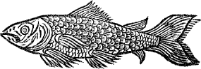
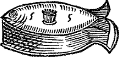
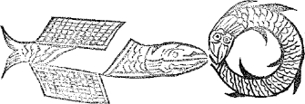
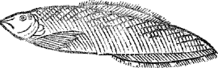
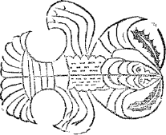

Section XIII.
OR,
The First Section for dressing of FISH.
Shewing divers ways, and the most excellent, for Dressing of Carps, either Boiled, Stewed, Broiled, Roasted, or Baked, &c.
To Boil a Carp in Corbolion.
TAke as much wine as water, and a good handful of salt, when it boils, draw the carp and put it in the liquor, boil it with a continual quick fire, and being boiled, dish it up in a very clean dish with sippets round about it, and slic’t lemon, make the sauce of sweet butter, beaten up with slic’t lemon and grated nutmeg, garnish the dish with beaten ginger.
To boil a Carp the best way to be eaten hot.
Take a special male carp of eighteen inches, draw it, wash out the blood, and lay it in a tray, then put to it some wine-vinegar and salt, put the milt to it, the gall being taken from it; then have three quarts of white wine or claret, a quart of white wine vinegar, & five pints of fair water, or as much as will cover it; put the wine, water and vinegar, in a fair scowred pan or kettle, with a handful of salt, a quarter of an ounce of large mace, half a quartern of whole cloves, three slic’d nutmegs, six races 302 of ginger pared and sliced, a quarter of an ounce of pepper, four or five great onions whole or sliced; then make a faggot of sweet herbs, of the tops of streight sprigs, of rosemary, seven or eight bay-leaves, 6 tops of sweet marjoram, as much of the streight tops of time, winter-savory, and parsley; being well bound up, put them into the kettle with the spices, and some orange and lemon-peels; make them boil apace before you put in the carp, and boil it up quick with a strong fire; being finely boil’d and crisp, dish it in a large clean scowred dish, lay on the herbs and spice on the carp, with slic’t lemons and lemon-peels, put some of the broth to it, and run it over with beaten butter, put fine carved sippets round about it, and garnish the dish with fine searsed manchet.
Or you may make sauce for it only with butter beat up thick, with slices of lemon, some of the carp liquor, and an anchove or two, and garnish the dish with beatten ginger.
Or take three or four anchoves and dissolve them in some white-wine, put them in a pipkin with some slic’t horse-raddish, gross pepper, some of the carp liquor, and some stewed oyster liquor, or stewed oysters, large mace, and a whole onion or two; the sauce being well stewed, dissolve the yolks of three or four eggs with some of the sauce, and give it a warm or two, pour it on the carp with some beaten butter, the stewed oysters and slic’t lemon, barberries, or grapes.
Otherways.
Dissolve three or four anchoves, with a little grated bread and nutmeg, and give it a warm in some of the broth the carp was boiled in, beat it up thick with some butter, and a clove of garlick, or pour it on the carp.
Or make sauce with beaten butter, grape-verjuyce, white wine, slic’t lemon, juyce of oranges, juyce of sorrel, or white-wine vinegar.
303Or thus.
Take white or claret wine, put it in a pipkin with some pared or sliced ginger, large mace, dates quartered, a pint of great oysters with the liquor, a little vinegar and salt, boil these a quarter of an hour, then mince a handful of parsley, and some sweet herbs, boil it as much longer till half be consumed, then beat up the sauce with half a pound of butter and a slic’t lemon, and pour it on the carp.
Sometimes for the foresaid carp use grapes, barberries, gooseberries, and horse-raddish, &c.
To make a Bisque of Carps.
Take twelve handsome male carps, and one larger than the rest, take out all the milts, and flea the twelve small carps, cut off their heads, take out their tongues, and take the fish from the bones, then take twelve large oysters and three or four yolks of hard eggs minc’d together, season it with cloves, mace, and salt, make thereof a stiff searse, add thereto the yolks of four or five eggs to bind, and fashion it into balls or rolls as you please, lay them into a deep dish or earthen pan, and put thereto twenty or thirty great oysters, two or three anchoves, the milts & tongues of the twelve carps, half a pound of fresh butter, the liquor of the oysters, the juyce of a lemon or two, a little white wine, some of the corbolion wherein the great carp is boil’d, & a whole onion, so set them a stewing on a soft fire, and make a soop therewith. For the great carp you must scald, draw him, and lay him for half an hour with other carps heads in a deep pan, with as much white wine vinegar as will cover and serve to boil him & the other heads in, then put therein pepper, whole mace, a race of ginger, slic’t nutmeg, salt, sweet herbs, an onion or two slic’t, & a lemon; when you have boiled the carps pour the liquor with the spices into the 304 kettle where you boil him, when it boils put in the carp, and let it not boil too fast for breaking, after the carp hath boil’d a while put in the heads, and being boil’d, take off the liquor and let the carps and the heads keep warm in the kettle till you go to dish them. When you dress the bisk take a large silver dish, set it on the fire, lay therein slices of French bread, and steep it with a ladle full of the corbolion, then take up the great carp and lay him in the midst of the dish, range the twelve heads about the carp, then lay the fearse of the carp, lay that into the oysters, milts, and tongues, and pour on the liquor wherein the fearse was boil’d, wring in the juyce of a lemon and two oranges, and serve it very hot to the table.
To make a Bisk with Carps and other several Fishes.
Make the corbolion for the Bisk of some Jacks or small Carps boil’d in half white-wine and fair spring-water; some cloves, salt, and mace, boil it down to jelly, strain it, and keep it warm for to scald the bisk; then take four carps, four tenches, four perches, two pikes, two eels flayed and drawn; the carps being scalded, drawn, and cut into quarters, the tenches scalded and left whole, also the pearches and the pikes all finely scalded, cleansed, and cut into twelve pieces, three of each side, then put them into a large stewing-pan with three quarts of claret-wine, an ounce of large mace, a quarter of an ounce of cloves, half an ounce of pepper, a quarter of an ounce of ginger pared & slic’t, sweet herbs chopped small, as stripped time, savory, sweet marjoram, parsley, rosemary, three or four bay-leaves, salt, chesnuts, pistaches, five or six great onions, and stew all together on a quick fire.
Then stew a pottle of oysters the greatest you can get, parboil them in their own liquor, cleanse them from the dregs, and wash them in warm water from the grounds 305 Y and shells, put them into a pipkin with three or four great onions peeled, then take large mace, and a little of their own liquor, or a little wine vinegar, or white wine.
Next take twelve flounders being drawn and cleansed from the guts, fry them in clarified butter with a hundred of large smelts, being fryed stew them in a stew-pan with claret-wine, grated nutmeg, slic’t orange, butter, and salt.
Then have a hundred of prawns, boiled, picked, and buttered, or fryed.
Next, bottoms of artichocks, boiled, blanched, and put in beaten butter, grated nutmeg, salt, white-wine, skirrets, and sparagus in the foresaid sauce.
Then mince a pike and an eel, cleanse them, and season them with cloves, mace, pepper, salt, some sweet herbs minct, some pistaches, barberries, grapes, or gooseberries, some grated manchet, and yolks of raw eggs, mingle all the foresaid things together, and make it into balls, or farse some cabbidge lettice, and bake the balls in an oven, being baked stick the balls with pine-apple seeds, and pistaches, as also the lettice.
Then all the foresaid things being made ready, have a large clean scowred dish, with large sops of French bread lay the carps upon them, and between them some tench, pearch, pike, and eels, & the stewed oysteres all over the other fish, then the fried flounders & smelts over the oysters, then the balls & lettice stuck with pistaches, the artichocks, skirrets, sparagus, butter prawns, yolks of hard eggs, large mace, fryed smelts, grapes, slic’t lemon, oranges, red beets or pomegranats, broth it with the leer that was made for it, and run it over with beaten butter.
The best way to stew a Carp.
Dress the carp and take out the milt, put it in a dish with then carp, and take out the gall, then save the blood, 306 and scotch the carp on the back with your knife; if the carp be eighteen inches, take a quart of claret or white wine, four or five blades of large mace, 10 cloves, two good races of ginger slic’t, two slic’t nutmegs, and a few sweet herbs, as the tops of sweet marjoram, time, savory, and parsley chopped very small, four great onions whole, three or four bay-leaves, and some salt; stew them all together in a stew-pan or clean scowred kettle with the wine, when the pan boils put in the carp with a quarter of a pound of good sweet butter, boil it on a quick fire of charcoal, and being well stew’d down, dish it in a clean large dish, pour the sauce on it with the spices, lay on slic’t lemon and lemon-peel, or barberries, grapes, or gooseberries, and run it over with beaten butter, garnish the dish with dryed manchet grated and searsed, and carved sippets laid round the dish.
In feasts the carps being scal’d, garnish the body with stewed oysters, some fryed in white batter, some in green made with the juyce of spinage: sometimes in place of sippets use fritters of arms, somtimes horse-raddish, and rub the dish with a clove or two of garlick.
For more variety, in the order abovesaid, sometimes dissolve an anchove or two, with some of the broth it was stewed in, and the yolks of two eggs dissolved with some verjuyce, wine, or juyce of orange; sometimes add some capers, and hard eggs chopped, as also sweet herbs, &c.
To stew a Carp in the French fashion.
Take a Carp, split it down the back alive, & put it in boiling liquor, then take a good large dish or stew-pan that will contain the carp; put in as much claret wine as will cover it, and wash off the blood, take out the carp, and put into the wine in the dish three or four slic’t onions, three or four blades of large mace, gross pepper, and 307 Y2 salt; when the stew-pan boils put in the carp and cover it close, being well stewed down, dish it up in a clean scowred dish with fine carved sippets round about it, pour the liquor it was boiled in on it, with the spices, onions, slic’t lemon, and lemon-peel, run it over with beaten butter, and garnish the dish with dryed grated bread.
Another most excellent way to stew a Carp.
Take a carp and scale it, being well cleansed and dried with a clean cloth, then split it and fry it in clarified butter, being finely fryed put it in a deep dish with two or three spoonfuls of claret wine, grated nutmeg, a blade or two of large mace, salt, three or four slices of an orange, and some sweet butter, set it on a chafing dish of coals, cover it close, and stew it up quick, then turn it, and being very well stew’d, dish it on fine carv’d sippets, run it over with the sauce it was stewed in, the spices, beaten butter, and the slices of a fresh orange, and garnish the dish with dry manchet grated and searsed.
In this way you may stew any good fish, as soles, lobsters, prawns, oysters, or cockles.
Otherways.
Take a carp and scale it, scrape off the slime with a knife and wipe it clean with a dry cloth; then draw it, and wash the blood out with some claret wine into the pipkin where you stew it, cut it into quarters, halves, or whole, and put it into a broad mouthed pipkin or earthen-pan, put to it as much wine as water, a bundle of sweet herbs, some raisins of the sun, currans, large mace, cloves, whole cinamon, slic’t ginger, salt, and some prunes boiled and strained, put in also some strained bread or flour, and stew them all together; being stewed, dish the carp in a clean scowred dish on fine carved sippets, pour 308 the broth on the carp, and garnish it with the fruit, spices, some slic’t lemon, barberries, or grapes, some orangado or preserved barberries, and scrape on sugar.
Otherways.
Do it as before, save only no currans, put prunes strained, beaten pepper, and some saffron.
To stew a Carp seven several ways.
1. Take a carp, scale it, and scrape off the slime, wipe it with a dry cloth, and give it a cut or two cross the back, then put it a boiling whole, parted down the back in halves, or quarters, put it in a broad mouthed pipkin with some claret or white-wine, some wine-vinegar, and good fresh fish broth or some fair water, three or four blades of large mace, some slic’t onions fryed, currans, and some good butter; cover up the pipkin, and being finely stewed, put in some almond-milk, and some sweet herbs finely minced, or some grated manchet, and being well stewed, serve it up on fine carved sippets, broth it, and garnish the dish with some barberries or grapes, and the dish with some stale manchet grated and sears’d, being first dryed.
2. For the foresaid broth, yolks of hard eggs strained with some steeped manchet, some of the broth it is stewed in, and a little saffron.
3. For variety of garnish, carrots in dice-work, some raisins, large mace, a few prunes, and marigold flowers, boil’d in the foresaid broth.
4. Or leave out carrots and fruit, and put samphire and capers, and thicken it with French barley tender boil’d.
5. Or no fruit, but keep the order aforesaid, only adding sweet marjoram, stripped tyme, parsley, and savory, bruise them with the back of a ladle, and put them into the broth.
309 Y36. Otherways, stewed oysters to garnish the carp, and some boil’d bottoms of artichocks, put them to the stewed oysters or skirrets being boil’d, grapes, barberries, and the broth thickned with yolks of eggs strained with some sack, white wine, or caper liquor.
7. Boil it as before, without fruit, and add to it capers, carrots in dice-work, mace, faggot of sweet herbs, slic’t onions chopp’d with parsley, and boil’d in the broth then have boil’d colliffowers, turnips, parsnips, sparagus, or chesnuts in place of carrots, and the leire strained with yolks of eggs and white wine.
To make French Herb Pottage for Fasting Days.
Take half a handful of lettice, as much of spinage, half as much of Bugloss and Borrage, two handfuls of sorrel, a little parsley, sage, a good handful of purslain, half a pound of butter, some pepper and salt, and sometimes, some cucumbers.
Other Broth or Pottage of a Carp.
Take a carp, scale it, and scrape off the slime, wash it, and wipe it with a clean cloth, then draw it, and put it in a broad mouthed pipkin that will contain it, put to it a pint of good white or claret wine, and as much good fresh fish broth as will cover it, or as much fair water, with the blood of the carp, four or five blades of large mace, a little beaten pepper, some slic’t onions, a clove or two, some sweet herbs chopped, a handful of capers, and some salt, stew all together, the carp being well stewed, put in some almond paste, with some white-wine, give it a warm or two with some stewed oyster-liquor, & serve it on French bread in a fair scowr’d dish, pour on the liquor, and garnish it with dryed grated manchet.
310To dress a Carp in Stoffado.
Take a carp alive, scale it, and lard it with a good salt eel, steep it in claret or white-wine, in an earthen pan, and put to it some wine-vinegar, whole cloves, large mace, gross pepper, slic’t ginger, and four or five cloves of garlick, then have an earthen pan that will contain it, or a large pipkin, put to it some sweet herbs, three or four sprigs of rosemary, as many of time and sweet marjoram, two or three bay-leaves and parsley, put the liquor to it into the pan or pipkin wherein you will stew it, and paste on the cover, stew it in the oven, in an hour it will be baked, then serve it hot for dinner or supper, serve it on fine carved sippets of French bread, and the spices on it, with herbs, slic’t lemon and lemon peel; and run it over with beaten butter.
To hash a Carp.
Take a carp, scale, and scrape off the slime with your knife, wipe it with a dry cloth, bone it, and mince it with a fresh water eel being flayed and boned; season it with beaten cloves, mace, salt, pepper, and some sweet herbs, as tyme, parsley, and some sweet marjoram minced very small, stew it in a broad mouthed pipkin, with some claret wine, gooseberries, or grapes, and some blanched chesnuts; being finely stewed, serve it on carved sippets about it, and run it over with beaten butter, garnish the dish with fine grated manchet searsed, and some fryed oysters in butter, cockles, or prawns.
Sometimes for variety, use pistaches, pine-apple-seeds, or some blanch’t almonds stew’d amongst the hash, or asparagus, or artichock boil’d & cut as big as chesnuts, & garnish the dish with scraped horse-radish, and rub the 311 Y4 bottom of the dish in which you serve the meat, with a clove or two of garlick. Sometimes mingle it with some stewed oysters, or put to it some oyster-liquor.
To marinate a Carp to be eaten hot or cold.
Take a carp, scale it, and scrape off the slime, wipe it clean with a dry cloth, and split it down the back, flour it, and fry it in sweet sallet oyl, or good clarified butter; being fine and crisp fryed, lay it in a deep dish or earthen pan, then have some white or claret wine, or wine-vinegar, put it in a broad mouthed pipkin with all manner of sweet herbs bound up in a bundle, as rosemary, tyme, sweet marjoram, parsley, winter-savory, bay-leaves, sorrel, and sage, as much of one as the other, put it into the pipkin with the wine, with some large mace, slic’t ginger, gross pepper, slic’t nutmeg, whole cloves, and salt, with as much wine and vinegar as will cover the dish, then boil the spices and wine with some salt a little while, pour it on the fish hot, and presently cover it close to keep in the spirits of the liquor, herbs, and spices for an hours space; then have slic’t lemons, lemon-peels, orange and orange peels, lay them over the fish in the pan, and cover it up close; when you serve them hot lay on the spices and herbs all about it, with the slic’t lemons, oranges, and their peels, and run it over with sweet sallet oyl, (or none) but some of the liquor it is soust in.
Or marinate the carp or carps without sweet herbs for hot or cold, only bay-leaves, in all points else as is abovesaid; thus you may marinate soles, or any other fish, whether sea or fresh-water fish.
Or barrel it, pack it close, and it will keep as long as sturgeon, and as good.
312To broil or toast a Carp divers ways, either in sweet Butter or Sallet Oyl.
Take a carp alive, draw it, and wash out the blood in the body with claret wine into a dish, put to it some wine vinegar and oyl, then scrape off the slime, & wipe it dry both outside & inside, lay it in the dish with vinegar, wine, oyl, salt, and the streight sprigs of rosemary and parsley, let it steep there the space of an hour or two, then broil it on a clean scowred gridiron, (or toast it before the fire) broil it on a soft fire, and turn it often; being finely broil’d, serve it on a clean scowred dish, with the oyl, wine, and vinegar, being stew’d on the coals, put it to the fish, the rosemary and parsley round the dish, and some about the fish, or with beaten butter and vinegar, or butter and verjuyce, or juyce of oranges beaten with the butter, or juyce of lemons, garnish the fish with slices of orange, lemon, and branches of rosemary; boil the milt or spawn by it self and lay it in the dish with the Carp.
Or make sauce otherways with beaten butter, oyster liquor, the blood of the carp, grated nutmeg, juyce of orange, white-wine, or wine vinegar boil’d together, crumbs of bread, and the yolk of an egg boiled up pretty thick, and run it over the fish.
To broil a Carp in Staffado.
Take a live carp, scale it, and scrape off the slime, wipe it clean with a dry cloth, and draw it, wash out the blood, and steep it in claret, white-wine, wine-vinegar, large mace, whole cloves, two or three cloves of garlick, some slic’t ginger, gross pepper, and salt; steep it in this composition in a dish or tray the space of two hours, then broil it on a clean scoured gridiron on a soft fire, & baste 313 it with some sweet sallet oyl, sprigs of rosemary, time, parsley, sweet marjoram, and two or three bay-leaves, being finely broil’d; serve it with the sauce it was steeped in, boil’d up on the fire with a little oyster-liquor, the spices on it, and herbs round about it on the dish, run it over with sauce, either with sweet sallet oyl, or good beaten butter, and broil the milt or spawn by it self.
To roast a Carp.
Take a live carp, draw and wash it, and take away the gall, and milt, or spawn; then make a pudding with some grated manchet, some almond-paste, cream, currans, grated nutmeg, raw yolks of eggs, sugar, caraway-seed candied, or any peel, some lemon and salt, make a stiff pudding and put it through the gills into the belly of the carp, neither scale it, nor fill it too full; then spit it, and roust it in the oven upon two or three sticks cross a brass dish, turn it and let the gravy drop into the dish; being finely roasted, make sauce with the gravy, butter, juyce of orange or lemon, some sugar, and cinamon, beat up the sauce thick with the butter, and dish the carp, put the sauce over it with slices of lemon.
Otherways.
Scale it, and lard it with salt eel, pepper, and nutmeg, then make a pudding of some minced eel, roach, or dace, some sweet herbs, grated bread, cloves, mace, nutmeg, pepper, salt, yolks of eggs, pistaches, chesnuts, and the milt of the carp parboil’d and cut into dice-work, as also some fresh eel, and mingle it amongst the pudding or farse.
Sauces for Roast Carp.
1. Gravy and oyster liquor, beat it up thick with sweet butter, claret wine, nutmeg, slices of orange, and some capers, and give it a warm or two.
3142. Beaten butter with slices of orange, and lemon, or the juyce of them only.
3. Butter, claret-wine, grated nutmeg, selt, slices of orange, a little wine-vinegar and the gravy.
4. A little white-wine, gravy of the carp, an anchove or two dissolved in it, some grated nutmeg, and a little grated manchet, beat them up thick with some sweet butter, and the yolk of an egg or two, dish the carp, and pour the sauce on it.
To make a Carp Pye a most excellent way.
Take carp, scale it and scrape off the slime, wipe it with a dry clean cloth, and split it down the back, then cut it in quarters or six pieces, three of each, and take out the milt or spawn, as also the gall; season it with nutmeg, pepper, salt, and beaten ginger, lay some butter in the pye bottom, then the carp upon it, and upon the carp two or three bay-leaves, four or five blades of large mace, four or five whole cloves, some blanched chesnuts, slices of orange, and some sweet butter, close it up and bake it, being baked liquor it with beaten butter, the blood of the carp, and a little claret wine.
For variety, in place of chesnuts, use pine apple-seeds, or bottoms of artichocks, gooseberries, grapes, or barberries. Sometimes bake great oysters with the carp, and a great onion or two; sometimes sweet herbs chopped, or sparagus boiled.
Or bake it in a dish as you do the pye.
To make paste for the pie, take two quarts and a pint of fine flour, four or five yolks of raw eggs, and half a pound of sweet butter,E boil the butter till it be melted, and make the paste with it.
315Paste for a Florentine of Carps made in a dish or patty-pan.
Take a pottle of fine flour, three quarters of a pound of butter, and six yolks of eggs, and work up the butter, eggs, and flour, dry them, then put to it as much fair spring water cold as will make it up into paste.
To bake a Carp otherways to be eaten hot.
Take a carp, scale it alive, and scrape off the slime, draw it, and take away the gall and guts, scotch it, and season it with nutmeg, pepper, and salt lightly, lay it into the pye, and put the milt into the belly, then lay on slic’t dates in halves, large mace, orange, or slic’t lemon, gooseberries, grapes, or barberries, raisins of the sun, and butter; close it up and bake it, being almost baked liquor it with verjuyce, butter, sugar, claret or white-wine, and ice it.
Sometimes make a pudding in the carps belly, make it of grated bread, pepper, nutmegs, yolks of eggs, sweet herbs, currans, sugar, gooseberries, grapes, or barberries, orangado, dates, capers, pistaches, raisins, and some minced fresh eel.
Or bake it in a dish or patty pan in cold butter paste.
To bake a Carp with Oysters.
Scale a carp, scrape off the slime, and bone it; then cut it into large dice-work, as also the milt being parboil’d; then have some great oysters, parboil’d, mingle them with the bits of carp, and season them together with beaten pepper, salt, nutmeg, cloves, mace, grapes, gooseberries, or barberries, blanched chesnuts, and pistaches, season them lightly, then put in the bottom of the pie a good big onion or two whole, fill the pye, and lay upon 316 it some large mace and butter, close it up and bake it, being baked liquor it with white wine, and sweet butter, or beaten butter only.
To make minced Pies of Carps and Eels.
Take a carp being cleansed, bone it, and also a good fat fresh water eel, mince them together, and season them with pepper, nutmeg, cinamon, ginger, and salt, put to them some currans, caraway-seed, minced orange-peel, and the yolks of six or seven hard eggs minced also, slic’t dates, and sugar; then lay some butter in the bottom of the pyes, and fill them, close them up, bake them, and ice them.
To bake a Carp minced with an Eel in the French Fashion, called Peti Petes.
Take a carp, scale it, and scrape off the slime, then roast it with a flayed eel, and being rosted draw them from the fire, and let them cool, then cut them into little pieces like great dice, one half of them, & the other half minced small and seasoned with nutmeg, pepper, salt, gooseberries, barberries, or grapes, and some bottoms of artichocks boil’d and cut as the carp: season all the foresaid materials and mingle all together, then put some butter in the bottom of the pye, lay on the meat and butter on the top, close it up, and bake it, being baked liquor it with gravy, and the juyce of oranges, butter, and grated nutmeg.
Sometimes liquor it with verjuyce and the yolks of eggs strained, sugar, and butter.
Or with currans, white wine, and butter boil’d together, some sweet herbs chopped small, and saffron.
317To bake a Carp according to these Forms to be eaten hot.

Take a carp, scale it, and scrape off the slime, bone it and cut it into dice-work, the milt being parboil’d, cut it into the same form, then have some great oysters parboild and cut into the same form also; put to it some grapes, goosberries, or barberries, the bottoms of artichocks boil the yolks of hard egs in quarters, boild, sparagus cut an inch long, and some pistaches, season all the foresaid things together with pepper, nutmegs, and salt, fill the pyes, close them up, and bake them, being baked, liquor them with butter, white-wine, and some blood of the carp, boil them together, or beaten butter, with juyce of oranges.
To bake a Carp with Eels to be eaten cold.
Take four large carps, scale them & wipe off the slime clean, bone them, and cut each side into two pieces of every carp, then have four large fresh water eels, fat ones, 318 boned, flayed, and cut in as many pieces as the carps, season them with nutmeg, pepper, and salt; then have a pye ready, either round or square, put butter in the bottom of it, then lay a lay of eel, and a lay of carp upon that, and thus do till you have ended; then lay on some large mace and whole cloves on the top, some sliced nutmeg, sliced ginger, and butter, close it up and bake it, being baked and cold, fill it up with clarified butter.
Otherways.
Take eight carps, scale and bone them, scrape and wash off the slime, wipe them dry, and mince them very fine, then have four good fresh water eels, flay and bone them, and cut them into lard as big as your finger, then have pepper, cloves, mace, and ginger severally beaten and mingled with some salt, season the fish and also the eels, cut into lard; then make a pye according to this form, lay some butter in the bottom of the pye, then a lay of carp upon the butter, so fill it, close it up and bake it.

319Section XIV.
OR,
The Second Section of FISH.
Shewing the most Excellent Ways of Dressing of Pikes.
To boil a Pike.
WAsh him very clean, then truss him either round whole, with his tail in his mouth, and his back scotched, or splatted and trust round like a hart, with his tail in his mouth, or in three pieces, & divide the middle piece into two pieces; then boil it in water, salt, and vinegar, put it not in till the liquor boils, & let it boil very fast at first to make it crisp, but afterwards softly; for the sauce put in a pipkin a pint of white wine, slic’t ginger, mace, dates quartered, a pint of great oysters with the liquor, a little vinegar and salt, boil them a quarter of an hour; then mince a few sweet herbs & parsley, stew them till half the liquor be consumed; then the pike being boiled dish it, and garnish the dish with grated dry manchet fine searsed, or ginger fine beaten, then beat up the sauce, with half a pound of butter, minced lemon, or orange, put it on the pike, and sippet it with cuts of 320 puff-paste or lozenges, some fried greens, and some yellow butter. Dish it according to these forms.

To boil a Pike otherways.
Take a male pike alive, splat him in halves, take out his milt and civet, and take away the gall, cut the sides into three pieces of a side, lay them in a large dish or tray, and put upon them half a pint of white wine vinegar, and half a handful of bay-salt beaten fine; then have a clean scowred pan set over the fire with as much rhenish or white-wine as will cover the pike, so set it on the fire with some salt, two slic’t nutmegs, two races of ginger slic’t, two good big onions slic’t, five or six cloves of garlik, two or three tops of sweet marjoram, three or four streight sprigs of rosemary bound up in a bundle close, and the peel of half a lemon; let these boil with a quick fire, then put in the pike with the vinegar, and boil it up quick; whilest the pike is boiling, take a quarter of a pound of anchoves, wash and bone them, then mince them and put them in a pipkin with a quarter of a pound of butter, and 3 or four spoonfuls of the liquor the pike was boiled in; the pike being boiled dish it, & lay the ginger, nutmegs, and herbs upon it, run it over with the sauce, and cast dried searsed manchet on it.
This foresaid liquor is far better to boil another pike, by renewing the liquor with a little wine.
321 ZTo boil a Pike and Eel together.
Take a quart of white-wine, a pint and a half of white wine vinegar, two quarts of water, almost a pint of salt, a handful of rosemary and tyme, let your liquor boil before you put in your fish, the herbs, a little large mace, and some twenty corns of whole pepper.
To boil a Pike otherways.
Boil it in water, salt, and wine vinegar, two parts water, and one vinegar, being drawn, set on the liquor to boil, cleanse the civet, and truss him round, scotch his back, and when the liquor boils, put in the fish and boil it up quick; then make sauce with some white-wine vinegar, mace, whole pepper, a good handful of cockles broiled or boiled out of the shells and washed with vinegar, a faggot of sweet herbs, the liver stamped and put to it, and horse raddish scraped or slic’t, boil all the foresaid together, dish the pike on sippets, and beat up the sauce with some good sweet butter and minced lemon, make the sauce pretty thick, and garnish it as you please.
Otherways.
Take as much white-wine and water as will cover it, of each a like quantity, and a pint of vinegar, put to this liquor half an ounce of large mace, two lemon-peels, a quarter of an ounce of whole cloves, three slic’t nutmegs, four races of ginger slic’t, some six great onions slic’t, a bundle of six or seven sprigs or tops of rosemary, as much of time, winter-savory, and sweet marjoram bound up hard in a faggot, put into the liquor also a good handful of salt, and when it boils, put in the fish being cleansed and trussed, and boil it up quick.
Being boiled, make the sauce with some of the broth 322 where the pike was boiled, and put it in a dish with two or three anchoves being cleansed and minced, a little white wine, some grated nutmeg, and some fine grated manchet, stew it on a chafing dish, and beat it up thick with some sweet butter, and the yolk of an egg or two dissolved with some vinegar, give it a warm, and put to it three or four slices of lemon.
Then dish the pike, drain the liquor from it upon a chafing-dish of coals, pour on the sauce, and garnish the fish with slic’t lemons, and the spices, herbs, and boil’d onions, run it over with beaten butter, and lay on some barberries or grapes.
Sometimes for change you may put some horse-raddish scraped, or the juyce of it.
To boil a Pike in White Broth.
Cut your pike in three pieces, then boil it in water, salt, and sweet herbs, put in the fish when the liquor boils; then take the yolks of six eggs, beat them with a little sack, sugar, melted butter, and some of the pike broth then put it on some embers to keep warm, stir it sometimes lest it curdle; then take up your pike, put the head and tail together in a clean dish, cleave the other piece in two, and take out the back-bone, put the one piece on one side, and the other piece on the other side, but blanch all, pour the broth on it, and garnish the fish with sippets, strow on fine ginger or sugar, wipe the edge of the dish round, and serve it.
To Boil a Pike in the French Fashion, a-la-Sauces d’Almaigne, or in the German Fashion.
Take a pike, draw him, dress the rivet, and cut him in three pieces, boil him in as much wine as water, & some 323 Z2 lemon-peel, with the liquor boils put in the fish with a good handful of salt, and boil him up quick.
Then have a sauce made of beaten butter, water, the slices of two or three lemons, the yolks of two or three eggs, and some grated nutmeg; the pike being boiled dish it on fine sippets, and stick it with some fried bread run it over with the sauce, some barberries or lemon, and garnish the dish with some pared and slic’t ginger, barberries, and lemon peel.
To boil a Pike in the City Fashion.
Take a live male pike, draw him and slit the rivet, wash him clean from the blood, and lay him in a dish or tray, then put some salt and vinegar to it, (or no vinegar; but only salt); then set on a kettle with some water & salt, & when it boils put in the pike, boil it softly, and being boiled, take it off the fire, and put a little butter into the kettle to it, then make a sauce with beaten butter, the juyce of a lemon or two, grape verjuyce or wine-vinegar, dish up the pike on fine carved sippets, and pour on the sauce, garnish the fish with scalded parsley, large mace barberries, slic’t lemon, and lemon-peel, and garnish the dish with the same.
To stew a Pike in the French Fashion.
Take a pike, splat it down the back alive, and let the liquor boil before you put it in, then take a large deep dish or stewing pan that will contain the pike, put as much claret-wine as will cover it, & wash off the blood take out the pike, and put to the wine in the dish three or four slic’t onions, four blades of large mace, gross pepper, & salt; when it boils put in the pike, cover it close, & being stewed down, dish it up in a clean scowred dish with carved sippets round abound it, pour on the broth 324 it was stewed in all over it, with the spices and onions, and put some slic’t lemon over all, with some lemon-peel; run it over with beaten butter, and garnish the dish with dry grated manchet. Thus you may also stew it with the scales on or off.
Sometimes for change use horse-raddish.
To stew a Pike otherways in the City Fashion.
Take a pike, splat it, and lay it in a dish, when the blood is clean washed out, put to it as much white-wine as will cover it, and set it a stewing; when it boils put in the fish, scum it, and put to it some large mace, whole cinamon, and some salt, being finely stewed dish it on sippets finely carved.
Then thicken the broth with two or three egg yolks, some thick cream, sugar, and beaten butter, give it a warm and pour it on the pike, with some boil’d currans, and boil’d prunes laid all over it, as also mace, cinamon, some knots of barberries, and slic’t lemon, garnish the dish with the same garnish, and scrape on fine sugar.
In this way you may do Carp, Bream, Barbel, Chevin, Rochet, Gurnet, Conger, Tench, Pearch, Bace, or Mullet.
To hash a Pike.
Scale and bone it, then mince it with a good fresh eel, being also boned and flayed, put to it some sweet herbs fine stripped and minced small, beaten nutmeg, mace, ginger, pepper, and salt; stew it in a dish with a little white wine and sweet butter, being well stewed, serve it on fine carved sippets, and lay on some great stewed oysters, some fryed in batter, some green with juyce of spinage, other yellow with saffron, garnish the dish with them, and run it over with beaten butter.
325 Z3To souce a Pike.
Draw and wash it clean from the blood and slime, then boil it in water and salt, when the liquor boils put it to it, and boil it leisurely simmering, season it pretty savory of the salt, boil it not too much, nor in more water then will but just cover it.
If you intend to keep it long, put as much white-wine as water, of both as much as will cover the fish, some wine vinegar, slic’t ginger, large mace, cloves, and some salt; when it boils put in the fish, spices, and some lemon-peel, boil it up quick but not too much; then take it up into a tray, and boil down the liquor to a jelly, lay some slic’t lemon on it, pour on the liquor, and cover it up close; when you serve it in jelly, dish and melt some of the jelly, and run it all over, garnish it with bunches of barberries and slic’t lemon.
Or being soust and not jellied, serve it with fennil and parsley.
When you serve it, you may lay round the dish divers Small Fishes, as Tench, Pearch, Gurnet, Chevin, Roach, Smelts, and run them over with jelly.
To souce and jelly Pike, Eeel, Tench, Salmon, Conger, &c.
Scale the foresaid fishes, being scal’d, cleansed and boned, season them with nutmeg and salt, or no spices at all, roul them up and bind them like brawn, being first rouled in a clean white cloth close bound up round it, boil them in water, white-wine, and salt, but first let the pan or vessel boil, put it in and scum it, then put in some large mace and slic’t ginger. If you will only souce them boil them not down so much; if to jelly them, put to them some ising-glass, and serve them in collars whole standing in the jelly.
326Otherways to souce and jelly the foresaid Fishes.
Make jelly of three tenches, three perches, and two carps, scale them, wash out the blood, and soak them in fair water three or four hours, leave no fat on them, then put them in a large pipkin with as much fair spring water as will cover them, or as many pints as pound of fish, put to it some ising-glass, and boil it close covered till two parts and a half be wasted; then take it off and strain it, let it cool, and being cold take off the fat on the top, pare the bottom, and put the jelly into three pipkins, put three quarts of white-wine to them, and a pound and a half of double refined sugar into each pipkin; then to make one red put a quarter of an ounce of whole cinamon, two races of ginger, two nutmegs, two or three cloves, and a little piece of turnsole dry’d, the dust rubbed out and steep’d in some claret-wine, put some of the wine into the jelly.
To make another yellow, put a little saffron-water, nutmeg, as much cinamon as to the red jelly, and a race of ginger sliced.
To the white put three blades of large mace, a race of ginger slic’t, then set the jelly on the fire till it be melted, then have fiveteen whites of eggs beaten, and four pound and a half of refined sugar, beat amongst the eggs, being first beaten to fine powder; then divide the sugar and eggs equally into the three foresaid pipkins, stir it amongst the sugar very well, set them on the fire to stew, but not to boil up till you are ready to run it; let each pipkin cool a little before you run it, put a rosemary branch in each bag, and wet the top of your bags, wring them before you run them, and being run, put some into orange rinds, some into scollop shells, or lemon rindes in halves, some into egg shells or muscle shells, or in moulds for Jellies. Or you 327 Z4 may make four colours, and mix some of the jelly with almonds-milk.
You may dish the foresaid jellies on a pie-plate on a great dish in four quarters, and in the middle a lemon finely carved or cut into branches, hung with jellies, and orange peels, and almond jellies round about; then lay on a quarter of the white jelly on one quarter of the plate, another of red, and another of amber-jelly, the other whiter on another quarter, and about the outside of the plate of all the colours one by another in the rindes of oranges and lemons, and for the quarters, four scollop shells of four several colours, and dish it as the former.
Pike Jelly otherways.
Take a good large pike, draw it, wash out the blood, and cut it in pieces, then boil it in a gallon or 6 quarts of fair spring water, with half a pound of ising-glass close covered, being first clean scum’d, boil it on a soft fire till half be wasted; then strain the stock or broth into a clean bason or earthen pan, and being cold pare the bottom and top from the fat and dregs, put it in a pipkin and set it over the fire, melt it, and put it to the juyce of eight or nine lemons, a quart of white-wine, a race of ginger pared and slic’t, three or four blades of large mace, as much whole cinamon, and a grain of musk and ambergriese tied up in a fine clean clout, then beat fifteen whites of eggs, and put to them in a bason four pound of double refined sugar first beaten to fine powder, stir it with the eggs with a rouling pin, and then put it among the jelly in the pipkin, stir them well together, and set it a stewing on a soft charcoal fire, let it stew there, but not boil up but one warm at least, let it stew an hour, then take it off and let it cool a little, run it through your jelly-bag, put a sprig of rosemary 328 in the bottom of the bag, and being run, cast it into moulds. Amongst some of it put some almond milk or make it in other colours as aforesaid.
To make White Jelly of two Pikes.
Take two good handsome pikes, scale and draw them, and wash them clean from the blood, then put to them six quarts of good white-wine, and an ounce of ising-glass, boil them in a good large pipkin to a jelly, being clean scummed, then strain it and blow off the fat.
Then take a quart of sweet cream, a quart of the jelly, a pound and a half of double refined sugar fine beaten, and a quarter of a pint of rose-water, put all together in a clean bason, and give them a warm on the fire, with half an ounce of fine searsed ginger, then set it a cooling, dish it into dice-work, or cast it into moulds and some other coloured Jellies. Or in place of cream put in almond-milk.
To roast a Pike.
Take a pike, scour off the slime, and take out the entrails, lard the back with pickled herrings, (you must have a sharp bodkin to make the holes to lard it) then take some great oysters and claret-wine, season the oysters with pepper and nutmeg, stuff the belly with oysters, and intermix the stuffing with rosemary, tyme, winter savory, sweet marjoram, a little onion, and garlick, sow these in the belly of the pike; then prepare two sticks about the breadth of a lath, (these two sticks and the spit must be as broad as the pike being tied on the spit) tie the pike on winding packthred about it, tye also along the side of the pike which is not defended by the spit and the laths, rosemary, and bays, baste the pike with butter and claret wine with some anchoves dissolved in it; when the pike is wasted or roasted, 329 take it off, rip up the belly, and take out the whole herbs quite away, boil up the gravy, dish the pike, put the wine to it, and some beaten butter.
To fry Pikes.
Draw them, wash off the slime and the blood clean, wipe them dry with a clean cloth, flour them, and fry them in clarifi’d butter, being fried crisp and stiff, make sauce with beaten butter, slic’t lemon, nutmeg, and salt, beaten up thick with a little fried parsley.
Or with beaten butter, nutmeg, a little claret, salt, and slic’t orange.
Otherways, oyster-liquor, a little claret, beaten butter, slic’t orange, and nutmeg, rub the dish with a clove of garlick, give the sauce a warm, and garnish the fish with slic’t lemon or orange and barberries. Small pikes are best to fry.
To fry a Pike otherways.
The pike being scalded and splatted, hack the white or inside with a knife, and it will be ribbed, then fry it brown and crisp in clarified butter, being fried, take it up, drain all the butter from it, and wipe the pan clean, then put it again into the pan with claret, slic’t ginger, nutmeg, an anchove, salt, and saffron beat, fry it till it half be consumed, then put in a piece of butter, shake it well together with a minced lemon or slic’t orange, and dish it, garnish it with lemon, and rub the dish with a clove of garlick.
To broil a Pike.
Take a pike, draw it & scale it, broil it whole, splat it or scotch it with your knife, wash out the blood clean, and lay it on a clean cloth, salt it, and heat the gridiron very hot, broil it on a soft fire, baste it with butter, and turn it often; being finely broil’d, serve it in a dish with 330 beaten butter, and wine-vinegar, or juyce of lemons or oranges, and garnish the fish with slices of oranges or lemons, and bunches of rosemary.
Otherways.
Take a pike, as abovesaid, being drawn, wash it clean, dry it, and put it in a dish with some good sallet oyl, wine vinegar, and salt, there let it steep the space of half an hour, then broil it on a soft fire, turn it and baste it often with some fine streight sprigs of rosemary, parsley, and tyme, baste it out of the dish where the oyl and vinegar is; then the pike being finely broil’d, dish it in a clean dish, put the same basting to it being warmed on the coals, lay the herbs round the dish, with some orange or lemon slices.
To broil Mackarel or Horn kegg.
Draw the Mackarel at the gills, and wash them, then dry them, and salt and broil them with mints, and green fennil on a soft fire, and baste them with butter, or oyl and vinegar, and being finely broil’d, serve them with beaten butter and vinegar, or oyl and vinegar, with rosemary, time, and parsley; or other sauce, beaten butter, and slices of lemon or orange.
To broil Herrings, Pilchards, or Sprats.
Gill them, wash and dry them, salt and baste them with butter, broil them on a soft fire, and being broi’ld serve them with beaten butter, mustard, and pepper, or beaten butter and lemon; other sauce, take the heads and bruise them in a dish with beer and salt, put the clearest to the herrings.
To bake Pikes.
Bake your pikes as you do carp, as you may see in the foregoing Section, only remember that small pikes are best to bake.
331Section XV.
OR,
The Third Section for dressing of FISH.
The most excellent ways of Dressing
Salmon, Bace, or Mullet.
To Calver Salmon to be eaten hot or cold.
CHine it, and cut each side into two or three peices according to the bigness, wipe it clean from the blood and not wash it; then have as much wine and water as you imagine will cover it, make the liquor boil, and put in a good handful of salt; when the liquor boils put in the salmon, and boil it up quick with a quart of white-wine vinegar, keep up the fire stiff to the last, and being througly boil’d, which will be in the space of half an hour or less, then take it off the fire and let it cool, take it up into broad bottomed earthen pans, and being quite cold, which will be in a day, a night, or twelve hours, then put in the liquor to it, and so keep it.
Some will boil in the liquor some rosemary bound up in a bundle hard, two or three cloves, two races of slic’t ginger, three or four blades of large mace, and a lemon peel. Others will boil it in beer only.
Or you may serve it being hot, and dish it on sippets in a clean scowred dish; dish it round the dish or in pieces 332 and garnish it with slic’t ginger, large mace, a clove or two, gooseberries, grapes, barberries, slic’t lemon, fryed parsley, ellicksaders, sage, or spinage fried.
To make sauce for the foresaid salmon, beat some butter up thick with a little fair water, put 2 or three yolks of eggs dissolved into it, with a little of the liquor, grated nutmeg, and some slic’t lemon, pour it on the salmon, and garnish the dish with fine searsed manchet, barberries, slic’t lemon, and some spices, and fryed greens as aforesaid.
To stew a small Salmon, Salmon Peal, or Trout.
Take a salmon, draw it, scotch the back, and boil it whole in a stew-pan with white-wine, (or in pieces) put to it also some whole cloves, large mace, slic’t ginger, a bay-leaf or two, a bundle of sweet herbs well and hard bound up, some whole pepper, salt, some butter, and vinegar, and an orange in halves; stew all together, and being well stewed, dish them in a clean scowred dish with carved sippets, lay on the spices and slic’t lemon, and run it over with beaten butter, and some of the gravy it was stewed in; garnish the dish with some fine searsed manchet or searsed ginger.
Otherways a most excellent way to stew Salmon.
Take a rand or jole of salmon, fry it whole raw, and being fryed, stew it in a dish on a chaffing dish of coals, with some claret-wine, large mace, slic’t nutmeg, salt, wine-vinegar, slic’t orange, and some sweet butter; being stewed and the sauce thick, dish it on sippets, lay the spices on it, and some slices of oranges, garnish the dish with some stale manchet finely searsed and strewed over all.
333To pickle Salmon to keep all the year.
Take a Salmon, cut it in six round pieces, then broil it in white-wine, vinegar, and a little water, three parts wine and vinegar, and one of water; let the liquor boil before you put in the salmon, and boil it a quarter of an hour; then take it out of the liquor, drain it very well, and take rosemary sprigs, bay-leaves, cloves, mace, and gross pepper, a good quantity of each, boil them in two quarts of white-wine, and two quarts of white-wine vinegar, boil it well, then take the salmon being quite cold, and rub it with pepper, and salt, pack it in a vessel that will but just contain it, lay a layer of salmon and a layer of spice that is boil’d in the liquor; but let the liquor and spice be very cold before you put it to it; the salmon being close packed put in the liquor, and once in half a year, or as it grows dry, put some white-wine or sack to it, it will keep above a year; put some lemon-peel into the pickle, let the salmon be new taken if possible.
An excellent way to dress Salmon, or other Fish.
Take a piece of fresh salmon, wash it clean in a little wine-vinegar, and let it lye a little in it in a broad pipkin with a cover, put to it six spoonfuls of water, four of vinegar, as much of white-wine, some salt, a bundle of sweet herbs, a few whole cloves, a little large mace, and a little stick of cinamon, close up the pipkin with paste, and set it in a kettle of seething water, there let it stew three hours; thus you may do carps, trouts, or eels, and alter the taste at your pleasure.
To hash Salmon.
Take salmon and set it in warm water, take off the skin, and mince a jole, rand, or tail with some fresh eel; 334 being finely minced season it with beaten cloves, mace, salt, pepper, and some sweet herbs; stew it in a broad mouthed pipkin with some claret wine, gooseberries, barberries, or grapes, and some blanched chesnuts; being finely stewed serve it on sippets about it, and run it over with beaten butter, garnish the dish with stale grated manchet searsed, some fryed oysters in batter, cockles, or prawns; sometimes for variety use pistaches, asparagus boil’d and cut an inch long, or boil’d artichocks, and cut as big as a chesnut, some stewed oysters, or oyster-liquor, and some horse-raddish scraped, or some of the juyce; and rub the bottom of the dish wherein you serve it with a clove of garlick.
To dress Salmon in Stoffado.
Take a whole rand or jole, scale it, and put it in an earthen stew-pan, put to it some claret, or white-wine, some wine-vinegar, a few whole cloves, large mace, gross pepper, a little slic’t ginger, salt, and four or five cloves of garlick, then have three or four streight sprigs of rosemary as much of time, and sweet marjoram, two or 3 bay leaves and parsley bound up into a bundle hard, and a quarter of a pound of good sweet butter, close up the earthen pot with course paste, bake it in an oven, & serve it on sippets of French bread, with some of the liquor and spices on it, run it over with beaten butter and barberries, lay some of the herbs on it, slic’t lemon and lemon-peel.
To marinate Salmon to be eaten hot or cold.
Take a Salmon, cut it into joles and rands, & fry them in good sweet sallet oyl or clarified butter, then set them by in a charger, and have some white or claret-wine, & wine vinegar as much as will cover it, put the wine & vinegar into a pipkin with all maner of sweet herbs bound up in a bundle as rosemary, time, sweet marjoram, parsly 335 winter-savory, bay-leaves, sorrel, and sage, as much of one as the other, large mace, slic’t ginger, gross pepper, slic’t nutmeg, whole cloves, and salt; being well boil’d together, pour it on the fish, spices and all, being cold, then lay on slic’t lemons, and lemon-peel, and cover it up close; so keep it for present spending, and serve it hot or cold with the same liquor it is soust in, with the spices, herbs, and lemons on it.
If to keep long, pack it up in a vessel that will but just hold it, put to it no lemons nor herbs, only bay-leaves; if it be well packed, it will keep as long as sturgeon, but then it must not be splatted, but cut round ways through chine and all.
To boil Salmon in stewed Broth.
Take a jole, chine, or rand, put it in a stew-pan or large pipkin with as much claret wine and water as will cover it, some raisins of the sun, prunes, currans, large mace, cloves, whole cinamon, slic’t ginger, and salt, set it a stewing over a soft fire, and when it boils put in some thickning of strain’d bread, or flour, strain’d with some prunes being finely stewed, dish it up on sippets in a clean scowred dish, put a little sugar in the broth, the fruit on and some slic’t lemon.
To fry Salmon.
Take a jole, rand, or chine, or cut it round through chine and all half an inch thick, or in square pieces fry it in clarified butter; being stiff & crisp fryed, make sauce with two or three spoonfuls of claret-wine, some sweet butter, grated nutmeg, some slices of orange, wine-vinegar, and some oyster-liquor; stew them all together, and dish the salmon, pour on the sauce, and lay on some fresh slices of oranges and fryed parsley, ellicksander, sage-leaves 336 fryed in batter, pippins sliced and fryed, or clary fryed in butter, or yolks of eggs, and quarters of oranges and lemons round the dish sides, with some fryed greens in halves or quarters.
To roast a Salmon according to this Form.
Take a salmon, draw it at the gills, and put in some sweet herbs in his belly whole; the salmon being scalded and the slime wip’t off, lard it with pickled herrings, or a fat salt eel, fill his belly with some great oysters stewed, and some nutmeg; let the herbs be tyme, rosemary, winter savory, sweet marjoram, a little onion and garlick, put them in the belly of the salmon, baste it with butter, and set it in an oven in a latten dripping-pan, lay it on sticks and baste it with butter, draw it, turn it, and put some claret wine in the pan under it, let the gravy drip into it, baste it out of the pan with rosemary and bayes, and put some anchoves into the wine also, with some pepper and nutmeg; then take the gravy and clear off the fat, boil it up, and beat it thick with butter; then put the fish in a large dish, pour the sauce on it, and rip up his belly, take out some of the oysters, and put them in the sauce, and take away the herbs.
337 AaOtherways.
Take a rand or jole, cut it into four pieces, and season it with a little nutmeg and salt, stick a few cloves, and put it on a small spit, put between it some bay-leaves, and stick it with little sprigs of rosemary, roast it and baste it with butter, save the gravy, with some wine-vinegar, sweet butter, and some slices of orange; the meat being rosted, dish it, and pour on the sauce.
To broil or toast Salmon.
Take a whole salmon, a jole, rand, chine, or slices cut round it the thickness of an inch, steep these in wine-vinegar, good sweet sallet oyl and salt, broil them on a soft fire, and baste them with the same sauce they were steeped in, with some streight sprigs of rosemary, sweet marjoram, tyme, and parsley: the fish being broil’d, boil up the gravy and oyster-liquor, dish up the fish, pour on the sauce, and lay the herbs about it.
To broil or roast a Salmon in Stoffado.
Take a jole, rand, or chine, and steep it in claret-wine, wine-vinegar, white-wine, large mace, whole cloves, two or three cloves of garlick, slic’t ginger, gross pepper and salt; being steeped about two hours, broil it on a soft fire, and baste it with butter, or very good sallet oyl, sprigs of rosemary, tyme, parsley, sweet marjoram, and some two or three bay-leaves, being broiled, serve it with the sauce it was steeped in, with a little oyster-liquor put to it, dish the fish, warm the sauce it was stewed in, and pour it on the fish either in butter or oyl, lay the spices and herbs about it; and in this way you may roast it, cut the jole, or rand in six pieces if it be large, and spit it with bayes and rosemary between, and save the gravy for sauce.
338Sauces for roast or boil’d Salmon.
Take the gravy of the salmon, or oyster liquor, beat it up thick with beaten butter, claret wine, nutmeg, and some slices of orange.
Otherways, with gravy of the salmon, butter, juyce of orange or lemon, sugar, and cinamon, beat up the sauce with the butter pretty thick, dish up the salmon, pour on the sauce, and lay it on slices of lemon.
Or beaten butter, with slices of orange or lemon, or the juyce of them, or grape verjuyce and nutmeg.
Otherways, the gravy of the salmon, two or three anchoves dissolved in it, grated nutmeg, and grated bread beat up thick with butter, the yolk of an egg and slices of oranges, or the juyce of it.
To bake Salmon.
Take a salmon being new, scale it, draw it, and wipe it dry, scrape out the blood from the back-bone, scotch it on the back and side, then season it with pepper, nutmeg, and salt; the pie being made, put butter in the bottom of it, a few whole cloves, and some of the seasoning, lay on the salmon, and put some whole cloves on it, some slic’t nutmeg, and butter, close it up and baste it over with eggs, or saffron water, being baked fill it up with clarified butter.
339 Aa2Or you may flay the salmon, and season as aforesaid with the same spices, and not scotch it but lay on the skin again, and lard it with Eels.
For the past only boiling liquor, with three gallons of fine or course flour made up very stiff.
To make minced Pies of Salmon.
Mince a rand of fresh salmon very small, with a good fresh water eel being flayed and boned; then mince, some violet leaves, sorrel, strawberry-leaves, parsley, sage, savory, marjoram, and time, mingle all together with the meat currans, cinamon, nutmeg, pepper, salt, sugar, caraways; rose-water, white-wine, and some minced orangado, put some butter in the bottom of the pies, fill them, and being baked ice them, and scrape on sugar; Make them according to these forms.
To make Chewits of Salmon.
Mince a rand of salmon with a good fresh water eel, being boned, flayed, and seasoned with pepper, salt, nutmeg cinamon, beaten ginger, caraway-seed, rose-water, butter, verjuyce, sugar, and orange-peel minced mingle all together with some slic’t dates, and currans, put butter in the bottom, fill the pies, close them up, bake them, and ice them.
340To make a Lumber Pye of Salmon.
Mince a rand, jole, or tail with a good fat fresh eel seasoned in all points as beforesaid, put five or six yolks of eggs to it with one or two whites, make it into balls or rouls, with some hard eggs in quarters, put some butter in the pye, lay on the rouls, and on them large mace, dates in halves, slic’t lemon, grapes, or barberries, & butter, close it up, bake it, and ice it; being baked, cut up the cover, fry some sage-leaves in batter, in clarified butter, and stick them in the rouls, cut the cover, and lay it on the plate about the pie, or mingle it with an eel cut into dice work, liquor it with verjuyce, sugar, and butter.
To boil Bace, Mullet, Gurnet, Rochet, Wivers, &c.
Take a mullet, draw it, wash it, and boil it in fair water and salt, with the scales on, either splatted or whole, but first let the liquor boil, being finely boiled, dish it upon a clean scowred dish, put carved sippets round about it, and lay the white side uppermost, garnish it with slic’t lemon, large mace, lemon-peel, and barberries, then make a lear or sauce with beaten butter, a little water, slices of lemon, juyce of grapes or orange, strained with the yolks of two or three eggs.
To souce Mullets or Bace.
Draw them & boil them with the scales, but first wash them clean, & lay them in a dish with some salt, cast upon them some slic’t ginger, & large mace, put some wine vinegar to them, and two or three cloves; then set on the fire a kettle with as much wine as water, when the pan boils put in the fish and some salt; boil it with a soft fire, & being finely boiled and whole, take them up with a false bottom and 2 wires all together. If you will jelly 341 Aa3 them, boil down the liquor to a jelly with a piece of ising-glass; being boil’d to a jelly, pour it on the fish, spices and all into an earthen flat bottomed pan, cover it up close, and when you dish the fish, serve it with some of the jelly on it, garnish the dish with slic’t ginger and mace, and serve with it in saucers wine vinegar, minc’t fennil and slic’t ginger; garnish the dish with green fennil and flowers, and parsley on the fish.
To marinate Mullets or Bace.
Scale the mullets, draw them, and scrape off the slime, wash & dry them with a clean cloth, flour them and fry them in the best sallet oyl you can get, fry them in a frying pan or in a preserving pan, but first before you put in the fish to fry, make the oyl very hot, fry them not too much, but crisp and stiff; being clear, white, and fine fryed, lay them by in an earthen pan or charger till they be all fry’d, lay them in a large flat bottom’d pan that they may lie by one another, and upon one another at length, and pack them close; then make pickle for them with as much wine vinegar as will cover them the breadth of a finger, boil in it a pipkin with salt, bay-leaves, sprigs or tops of rosemary, sweet marjoram, time, savory, and parsley, a quarter of a handful of each, and whole pepper; give these things a warm or two on the fire, pour it on the fish, and cover it close hot; then slice 3 or 4 lemons being par’d, save the peels, and put them to the fish, strow the slices of lemon over the fish with the peels, and keep them close covered for your use. If this fish were barrel’d up, it would keep as long as sturgeon, put half wine vinegar, and half white-wine, the liquor not boil’d, nor no herbs in the liquor, but fry’d bay-leaves, slic’t nutmegs, whole cloves, large mace, whole pepper, and slic’t ginger; pack the fishes close, and once a month turn the head of the vessel 342 downward; will keep half a year without barrelling.
Marinate these fishes following as the mullet; viz, Bace, Soals, Plaice, Flounders, Dabs, Pike, Carp, Bream, Pearch, Tench, Wivers, Trouts, Smelts, Gudgeons, Mackarel, Turbut, Holly-bur, Gurnet, Roachet, Conger, Oysters, Scollops, Cockles, Lobsters, Prawns, Crawfish, Muscles, Snails, Mushrooms, Welks, Frogs.
To marinate Bace, Mullet, Gurnet, or Rochet otherways.
Take a gallon of vinegar, a quart of fair water, a good handful of bay-leaves, as much of rosemary, and a quarter of a pound of pepper beaten, put these together, and let them boil softly, season it with a little salt, then fry your fish in special good sallet oyl, being well clarifi’d, the fish being fryed put them in an earthen vessel or barrel, lay the bay-leaves, and rosemary between every layer of the fish, and pour the broth upon it, when it is cold close up the vessel; thus you may use it to serve hot or cold, and when you dish it to serve, garnish it with slic’t lemon, the peel and barberries.
To broil Mullet, Bace, or Bream.
Take a mullet; draw it, and wash it clean, broil it with the scales on, or without scales, and lay it in a dish with some good sallet oyl, wine vinegar, salt, some sprigs of rosemary, time, and parsley, then heat the gridiron, and lay on the fish, broil it on a soft fire, on the embers, and baste it with the sauce it was steep’d in, being broiled serve it in a clean warm dish with the sauce it was steeped in, the herbs on it, and about the dish, cast on salt, and so serve it with slices of orange, lemon, or barberries.
Or broil it in butter and vinegar with herbs as above-said, and make sauce with beaten butter and vinegar.
Or beaten butter and juyce of lemon and orange.
343 Aa4Sometimes for change, with grape verjuyce, juyce of sorrel, beaten butter and the herbs.
To fry Mullets.
Scale, draw, and scotch them, wash them clean, wipe them dry and flour them, fry them in clarified butter, and being fried, put them in a dish, put to them some claret wine, slic’t ginger, grated nutmeg, an anchove, salt, and some sweet butter beat up thick, give the fish a warm with a minced lemon, and dish it, but first rub the dish with a clove of garlick.
The least Mullets are the best to fry.
To bake a Mullet or Bace.
Scale, garbidge, wash and dry the Mullet very well, then lard it with a salt eel, season it, and make a pudding for it with grated bread, sweet herbs, and some fresh eel minced, put also the yolks of hard eggs, an anchove wash’d & minc’d very small, some nutmeg, & salt, fill the belly or not fill it at all, but cut it into quarters or three of a side, and season them with nutmeg, ginger, and pepper, lay them in your pie, and make balls and lay them upon the pieces of Mullet, then put on some capers, prawns, or cockles, yolks of eggs minced, butter, large mace, and barberries, close it up, and being bak’d cut up the lid, and stick it full of cuts of paste, lozenges, or other pretty garnish, fill it up with beaten butter, and garnish it with slic’t lemon.
Or you may bake it in a patty pan with better paste than that which is made for pyes.
This is a very good way for tench or bream.
344Section XVI.
OR,
The fourth Section for dressing of FISH.
Shewing the exactest ways of dressing Turbut, Plaice, Flounders, and Lampry.
To boil Turbut to eat hot.
DRaw and wash them clean, then boil them in white wine and water, as much of the one as of the other with some large mace, a few cloves, salt, slic’t ginger, a bundle of time and rosemary fast bound up; when the pan boils put in the fish, scum it as it boils, and being half boil’d, put in some lemon-peel; being through boiled, serve it in this broth, with the spices, herbs, and slic’t lemon on it; or dish it on sippets with the foresaid garnish, and serve it with beaten butter.
Turbut otherways calvered.
Draw the turbut, wash it clean, and boil it in half wine and half water, salt, and vinegar; when the pan boils put in the fish, with some slic’t onions, large mace, a clove or two, some slic’t ginger, whole pepper, and a bundle of sweet herbs, as time, rosemary, and a bay-leaf or two; scotch the fish on the white side very thick overthwart only one way, before you put it a boiling; being half boiled, 345 put in some lemon or orange peel; and being through boil’d, serve it with the spices, herbs, some of the liquor, onions, and slic’t lemon.
Or serve it with beaten butter, slic’t lemon, herbs, spices, onions and barberries. Thus also you may dress holyburt.
To boil Turbut or Holyburt otherways.
Boil it in fair water and salt, being drawn and washed clean, when the pan boils put in the fish and scum it; being well boil’d dish it, and pour on it some stew’d oysters and slic’t lemon; run it over with beaten butter beat up thick with juyce of oranges, pour it over all, then cut sippets, and stick it with fryed bread.
Otherways.
Serve them with beaten butter, vinegar, and barberries, and sippets about the dish.
To souce Turbut or Holyburt otherways.
Take and draw the fish, wash it clean from the blood and slime, and when the pan boils put in the fish in fair water and salt, boil it very leisurely, scum it, and season it pretty savory of the salt, boil it well with no more water then will cover it. If you intend to keep it long, boil it in as much water as white-wine, some wine vinegar, slic’t ginger, large mace, two or three cloves, and some lemon-peel; being boil’d and cold, put in a slic’t lemon or two, take up the fish, and keep it in an earthen pan close covered, boil these fishes in no more liquor than will cover them, boil them on a soft fire simering.
To stew Turbut or Holyburt.
Take it and cut it in slices, then fry it, and being half fryed put it in a stew-pan or deep dish, then put to it 346 some claret, grated nutmeg, three or four slices of an orange, a little wine-vinegar, and sweet butter, stew it well, dish it, and run it over with beaten butter, slic’t lemon or orange, and orange or lemon-peel.
To fry Turburt or Hollyburt.
Cut the fish into thin slices, hack it with the knife, and it will be ribbid, then fry it almost brown with butter, take it up, draining all the butter from it, then the pan being clean, put it in again with claret, slic’t ginger, nutmeg, anchove, salt, and saffron beat, fry it till it be half consumed, then put in a piece of butter, shaking it well together with a minced lemon, and rub the dish with a clove of garlick.
To hash turbut, make a farc’t meat of it, to rost or broil it, use in all points as you do sturgeon, and marinate it as you do carp.
The best way to calver Flounders.
Take them alive, draw and scotch them very thick on the white side, then have a pan of white-wine and wine vinegar over the fire with all manner of spices, as large mace, salt, cloves, slic’t ginger, some great onions slic’t, the tops of rosemary, time, sweet marjoram, pick’d parsley, and winter savory, when the pan boils put in the flounders, and no more liquor than will cover them; cover the pan close, and boil them up quick, serve them hot or cold with slic’t lemon, the spices and herbs on them and lemon peel.
Broil flounders as you do bace and mullet, souce them as pike, marinate, and dress them in stoffado as carp, and bake them as oysters.
To boil Plaice hot to butter.
Draw them, and wash them clean, then boil them in fair water and salt, when the pan boils put them in being 347 very new, boil them up quick with a lemon-peel; dish them upon fine sippets round about them, slic’t lemon on them, the peel and some barberries, beat up some butter very thick with some juyce of lemon and nutmeg grated, and run it over them hot.
Otherways.
Boil them in white-wine vinegar, large mace, a clove or two, and slic’t ginger; being boil’d serve them in beaten butter, with the juyce of sorrel, strained bread, slic’t lemon, barberries, grapes, or gooseberries.
To stew Plaice.
Take and draw them, wash them clean, and put them in a dish, stew-pan or pipkin, with some claret or white wine, butter, some sweet herbs, nutmeg, pepper, an onion and salt; being finely stewed, serve them with beaten butter on carved sippets, and slic’t lemon.
Otherways.
Draw, wash, and scotch them, then fry them not too much; being fried, put them in a dish or stew-pan, put to them some claret wine, grated nutmeg, wine vinegar, butter, pepper, and salt, stew them together with some slices of orange.
To bake a Lampry.
Draw it, and split the back on the inside from the mouth to the end of the tail, take out the string in the back, flay her and truss her round, parboil it and season it with nutmeg, pepper, and salt, put some butter in the bottom of the pie, and lay on the lampry with two or three good big onions, a few whole cloves and butter, close it up and baste it over with yolks of eggs, and beer 348 or saffron water, bake it, and being baked, fill it up with clarified butter, stop it up with butter in the vent hole, and put in some claret wine, but that will not keep long.
To bake a Lampry otherways with an Eel.
Flay it, splat it, and take out the garbidg, then have a good fat eel, flay it, draw it, and bone it, wipe them dry from the slime, and season them with pepper, salt, and nutmeg, cut them in equal pieces as may conveniently lye in a square or round pye, lay butter in the bottom, and three or four good whole onions, then lay a layer of eels over the butter, and on that lay a lampry, then another of eel, thus do till the pye be full, and on the top of all put some whole cloves and butter, close it up and bake it being basted over with saffron water, yolks of eggs, and beer, and being baked and cold, fill it up with beaten butter. Make your pies according to these forms.
To bake a Lampry in the Italian Fashion to eat hot.
Flay it, and season it with nutmeg, pepper, salt, cinamon, and ginger, fill the pie either with Lampry cut in pieces or whole, put to it raisins, currans, prunes, dryed cherries, dates, and butter, close it up, and bake it, being baked liquor it with strained almonds, grape verjuyce, sugar, sweet herbs chop’t and boil’d all together, serve it 349 with juyce of orange, white wine, cinamon, and the blood of the lampry, and ice it, thus you may also do lampurns baked for hot.
To bake a Lampry otherways in Patty-pan or dish.
Take a lampry, roast it in pieces, being drawn and flayed, baste it with butter, and being roasted and cold, put it into a dish with paste or puff paste; put butter to it, being first seasoned with pepper, nutmeg, cinamon, ginger, and salt, seasoned lightly, some sweet herbs chopped, grated bisket bread, currans, dates, or slic’t lemon, close it up and bake it, being baked liquor it with butter, white-wine, or sack, and sugar.
350Section XVII.
OR,
The Fifth Section of FISH.
Shewing the best way to Dress Eels,
Conger, Lump, and Soals.
To boil Eels to be eaten hot.
DRaw them, flay them, and wipe them clean, then put them in a posnet or stew-pan, cut them three inches long, and put to them some white-wine, white-wine vinegar, a little fair water, salt, large mace, and a good big onion stew the foresaid together with a little butter; being finely stewed and tender, dish them on carved sippets, or on slices of French bread, and serve them with boil’d currans boil’d by themselves, slic’t lemon, barberries, and scrape on sugar.
Otherways.
Draw and flay them, cut them into pieces, and boil them in a little fair water, white-wine, an anchove, some oyster-liquor, large mace, two or three cloves bruised, salt, spinage, sorrel, and parsley grosly minced with a little onion and pepper, dish them upon fine carved sippets; then broth them with a little of that broth, and 351 beat up a lear with some good butter, the yolk of an egg or two, and the rinde and slices of a lemon.
To stew Eels.
Flay them, cut them into pieces, and put them into a skillet with butter, verjuyce, and fair water as much as will cover them, some large mace, pepper, a quarter of a pound of currans, two or three onions, three or four spoonfuls of yeast, and a bundle of sweet herbs, stew all these together till the fish be very tender, then dish them, and put to the broth a quarter of a pound of butter, a little salt, and sugar, pour it on the fish, sippet it, and serve it hot.
To stew Eels in an Oven.
Cut them in pieces, being drawn and flayed, then season them with pepper, salt, and a few sweet herbs chopped small, put them into an earthen pot, and set them up on end, put to them four or five cloves of garlick, and two or three spoonfulls of fair water, bake them, and serve them on sippets.
To stew Eels otherways to be eaten hot.
Draw the eels, flay them, and cut them into pieces three inches long, then put them into a broad mouthed pipkin with as much white-wine and water as will cover them put to them some stripped tyme, sweet marjoram, savory, picked parsley, and large mace, stew them well together and serve them on fine sippets, stick bay-leaves round the dish garnish the meat with slic’t lemon, and the dish with fine grated manchet.
To stew whole Eels to be eaten hot.
Take three good eels, draw, flay them, and truss them round, (or in pieces,) then have a quart of white-wine, 352 three half pints of wine-vinegar, a quart of water, some salt, and a handful of rosemary and tyme bound up hard, when the liquor boils put in the eels with some whole pepper, and large mace; being boil’d, serve them with some of the broth, beat up thick with some good butter and slic’t lemon, dish them on sippets with some grapes, barberries, or gooseberries.
Otherways.
Take three good eels, draw, flay, and scotch them with your knife, truss them round, or cut them in pieces, and fry them in clarified butter, then stew them between two dishes, put to them some two or three spoonfuls of claret or white-wine, some sweet butter, two or three slices of an orange, some salt, and slic’t nutmeg; stew all well together, dish them, pour on the sauce, and run it over with beaten butter, and slices of fresh orange, and put fine sippets round the dish.
To dress Eels in Stoffado.
Take two good eels, draw, flay them, and cut them in pieces three inches long, put to them half as much claret wine as will cover them, or white-wine, wine-vinegar, or elder-vinegar, some whole cloves, large mace, gross pepper, slic’t ginger, salt, four or five cloves of garlick, being put into a pipkin that will contain it, put to them also three or four sprigs of sweet herbs, as rosemary, tyme, or sweet marjoram; 2 or 3 bay leaves, and some parsley; cover up the pipkin, and paste the cover, then stew it in an oven, in one hour it will be baked, serve it hot for dinner or supper on fine sippets of French bread, and the spices upon it, the herbs, slic’t lemon, and lemon-peel, and run it over with beaten butter.
353 BbTo souce Eels in Collars.
Take a good large silver eel, flay it (or not) take out the back bone, and wash and wipe away the blood with a dry cloth, then season it with beaten nutmeg and salt, cut off the head and roul in the tail; being seasoned in the in side, bind it up in a fine white cloth close and streight; then have a large skillet or pipkin, put in it some fair water and white wine, of each a like quantity, and some salt, when it boils put in the eel; being boil’d tender take it up, and let it cool, when it is almost cold keep it in sauce for your use in a pipkin close covered, and when you will serve it take it out of the cloth, pare it, and dish it in a clean dish or plate, with a sprig of rosemary in the middle of the Collar: Garnish the dish with jelly, barberries and lemon.
If you will have it jelly, put in a piece of ising-glass after the eel is taken up, and boil the liquor down to a jelly.
To jelly Eels otherways.
Flay an eel, and cut it into rouls, wash it clean from the blood, and boil it in a dish with some white-wine, and white-wine vinegar, as much water as wine and vinegar, and no more of the liquor than will just cover it; being tender boil’d with a little salt, take it up and boil down the liquor with a piece of ising-glass, a blade of mace, a little juyce of orange and sugar; then the eel being dished, run the clearest of the jelly over it.
To souce Eels otherways in Collars.
Take two fair eels, flay them, and part them down the back, take out the back-bone, then take tyme, parsley, & sweet marjoram, mince them small, and mingle them with nutmeg, ginger, pepper, and salt; then strow it on 354 the inside of the eels, then roul them up like a collar of brawn, and put them in a clean cloth, bind the ends of the cloth, and boil them tender with vinegar, white-wine, salt, and water, but let the liquor boil before you put in the Eels.
To souce Eels otherways in a Collar or Roll.
Take a large great eel, and scowr it with a handful of salt, then split it down the back, take out the back bone and the guts, wipe out the blood clean, and season the eel with pepper, nutmeg, salt, and some sweet herbs minced and strowed upon it, roul it up, and bind it up close with packthred like a collar of brawn, boil it in water, salt, vinegar, and two or three blades of mace, boil it half an hour; and being boil’d, put to it a slic’t lemon, and keep it in the same liquor; when you serve it, serve it in a collar or cut it out in round slices, lay six or seven in a dish, and garnish it in the dish with parsley and barberries, or serve with it vinegar in saucers.
To souce Eels otherways cut in pieces, or whole.
Take two or three great eels, scowr them in salt, draw them and wash them clean, cut them in equal pieces three inches long, and scotch them cross on both sides, put them in a dish with wine-vinegar, and salt; then have a kettle over the fire with fair water and a bundle of sweet herbs 2 or three great onions, and some large mace; when the kettle boils put in the eels, wine, vinegar, and salt; being finely boil’d and tender, drain them from the liquor and when they are cold take some of the broth and a pint of white wine, boil it up with some saffron beaten to powder, or it will not colour the wine; then take out the spices of the liquor where it was boiled 355 Bb2 and put it in the last broth made for it, leave out the onions and herbs of the first broth, and keep it in the last.
To make a Hash of Eels.
Take a good large eel or two, flay, draw, and wash them, bone and mince them, then season them with cloves and mace, mix with them some good large oysters, a whole onion, salt, a little white-wine, and an anchove, stew them upon a soft fire, and serve them on fine carved sippets, garnish them with some slic’t orange and run them over with beaten butter thickned with the yolk of an egg or two, some grated nutmeg, and juyce of orange.
To make a Spitch-Cock, or broil’d Eels.
Take a good large eel, splat it down the back, and joynt the back-bone; being drawn, and the blood washed out, leave on the skin, and cut it in four pieces equally, salt them, and bast them with butter, or oyl and vinegar; broil them on a soft fire, and being finely broil’d, serve them in a clean dish, with beaten butter and juyce of lemon, or beaten butter, and vinegar, with sprigs of rosemary round about them.
To broil salt Eels.
Take a salt eel and boil it tender, being flayed and trust round with scuers, boil it tender on a soft fire, then broil it brown, and serve it in a clean dish with two or three great onions boil’d whole and tender, and then broil’d brown; serve them on the eel with oyl and mustard in saucers.
To roast an Eel.
Cut it three inches long, being first flayed and drawn, split it, put it on a small spit, & roast it, set a dish under 356 it to save the gravy, and roast it fine and brown, then make sauce with the gravy, a little vinegar, salt, pepper, a clove or two, and a little grated parmisan, or old English cheese, or a little botargo grated; the eel being roasted, blow the fat off the gravy, and put to it a piece of sweet butter, shaking it well together with some salt, put it in a clean dish, lay the eel on it, and some slices of oranges.
To roast Eels otherways.
Take a good large silver eel, draw it, and flay it in pieces of four inches long, spit it on a small spit with some bay-leaves, or large sage leaves between each piece spit it cross ways, and roast it; being roasted, serve it with beaten butter, beaten with juyce of oranges, lemons, or elder vinegar, and beaten nutmeg, or serve it with venison sauce, and dredge it with beaten caraway-seed, cinamon, flour, or grated bread.
To bake Eels in Pye, Dish or Patty-pan.
Take good fresh water eels, draw, and flay them, cut them in pieces, and season them with pepper, salt, and nutmeg, lay them in a pye with some prunes, currans, grapes, gooseberries, or barberries, large mace, slic’t dates and butter, close it up and bake it, being baked, liquor it with white-wine, sugar, and butter, and ice it.
If you bake it in a dish in paste, bake it in cold butter paste, rost the eel, & let it be cold, season it with nutmeg pepper, ginger, cinamon, and salt, put butter on the paste, and lay on the eel with a few sweet herbs chopped, and grated bisket-bread, grapes, currans, dates, large mace, and butter, close it up and bake it, liquor it, and ice it.
Otherways.
Take good fresh water eels; flay and draw them, season 357 Bb3 them with nutmeg, pepper, and salt, being cut in pieces, lay them in the pie, and put to them some two or three onions in quaters, some butter, large mace, grapes, barberries or gooseberries, close them up and bake them; being baked liquor them with beaten butter, beat up thick with the yolks of two eggs, and slices of an orange.
Sometimes you may bake them with a minced onion, some raisins of the sun, and season them with some ginger, pepper, and salt.
To bake Eels otherways.
Take half a douzen good eels, flay them and take out the bones, mince them and season them with nutmeg, pepper, and salt, lay some butter in the pye, and lay a lay of Eel, and a lay of watred salt Eel, cut into great lard as big as your finger, lay a lay of it, and another of minced eel, thus lay six or seven lays, and on the top lay on some whole cloves, slic’t nutmeg, butter, and some slices of salt eel, close it up and bake it, being baked fill it up with some clarified butter, and close the vent. Make your pye round according to this form.
To bake Eels with Tenches in a round or square Pie to eat cold.
Take four good large eels, flayed and boned, and six good large tenches, scale, splat, and bone them, cut off the heads and fins, as also of the eels; cut both eels, and tenches a handful long, & season them with pepper, salt and nutmeg; then lay some butter in the bottom of the pie, lay a lay of eels, and then a lay of tench, thus do five or six layings, lay on the top large mace, & whole cloves 358 and on that butter, close it up and bake it; being baked and cold, fill it up with clarified butter.
Or you may bake them whole, and lay them round in the pye, being flayed, boned, and seasoned as the former, bake them as you do a lampry, with two or three onions in the middle.
To make minced Pies of an Eel.
Take a fresh eel, flay it and cut off the fish from the bone, mince it small, and pare two or three wardens or pears, mince of them as much as of the eel, or oysters, temper and season them together with ginger, pepper, cloves, mace, salt, a little sanders, some currans, raisins, prunes, dates, verjuyce, butter, and rose-water.
Minced Eel Pyes otherways.
Take a good fresh water eel flay, draw, and parboil it, then mince the fish being taken from the bones, mince also some pippins, wardens, figs, some great raisins of the sun, season them with cloves, mace, pepper, salt, sugar, saffron, prunes, currans, dates on the top, whole raisins, and butter, make pies according to these forms; fill them, close them up and bake them, being baked, liquor them with grape verjuyce, slic’t lemon, butter, sugar, and white-wine.
Other minced Eel Pyes.
Take 2 or three good large eels, being cleans’d, mince them & season them with cloves, mace, pepper, nutmeg, 359 Bb4 salt, and a good big onion in the bottom of your pye, some sweet herbs chopped, and onions, put some goosberries and butter to it, and fill your pie, close it up and bake it, being baked, liquor it with butter and verjuyce, or strong fish broth, butter, and saffron.
Otherways.
Mince some wardens or pears, figs, raisins, prunes, and season them as abovesaid with some spices, but no onions nor herbs, put to them goosberries, saffron, slic’t dates, sugar, verjuyce, rose-water, and butter; then make pyes according to these forms, fill them and bake them, being baked, liquor them with white batter, white-wine and sugar, and ice them.
To boil Conger to be eaten hot.
Take a piece of conger being scalded and wash’d from the blood and slime, lay it in vinegar & salt, with a slice or two of lemon, and some large mace, slic’t ginger, and two or three cloves, then set some liquor a boiling in a pan or kettle, as much wine and water as will cover it when the liquor boils put in the fish, with the spices, and salt, and when it is boil’d put in the lemon, and serve the fish on fine carved sippets; then make a lear or sauce with beaten butter, beat with juyce of oranges or lemons, serve it with slic’t lemon on it, slic’t ginger and barberries; and garnish it with the same.
360To stew Conger.
Take a piece of conger, and cut it into pieces as big as a hens egg, put them in a stew-pan or two deep dishes with some large mace, salt, pepper, slic’t nutmeg, some white-wine, wine vinegar, as much water, butter, and slic’t ginger, stew these well together, and serve them on sippets with slic’t orange, lemon, and barberries, and run them over with beaten butter.
To marinate Conger.
Scald and draw it, cut it into pieces, and fry it in the best sallet oyl you can get; being fried put it in a little barrel that will contain it; then have some fryed bay-leaves, large mace, slic’t ginger, and a few whole cloves, lay these between the fish, put to it white-wine, vinegar, and salt, close up the head, and keep it for your use.
To souce Conger.
Take a good fat conger, draw it at two several, vents or holes, being first scalded and the fins shaved off, cut it into three or four pieces, then have a pan of fair water, and make it boil, put in the fish, with a good quantity of salt, and let it boil very softly half an hour: being tender boil’d, set it by for your use for present spending; but to keep it long, boil it with as much wine as water, and a quart of white-wine vinegar.
To souce Conger in Collars like Brawn.
Take the fore part of a conger from the gills, splat it, and take out the bone, being first flayed and scalded, then have a good large eel or two, flay’d also and boned, seasoned in the inside with minced nutmeg, mace, and salt, seasoned and cold with the eel in the inside, bind it up hard in a clean cloth, boil it in fair water, white-wine and salt.
361To roast Conger.

Take a good fat conger, draw it, wash it, and scrape off the slime, cut off the fins, and spit it like an S. draw it with rosemary and time, put some beaten nutmeg in his belly, salt, some stripped time, and some great oysters parboil’d, roast it with the skin on, and save the gravy for the sauce, boil’d up with a little claret-wine, beaten butter, wine vinegar, and an anchove or two, the fat blown off, and beat up thick with some sweet butter, two or three slices of an orange, and elder vinegar.
Or roast it in short pieces, and spit it with bay-leaves between, stuck with rosemary. Or make venison sauce, and instead of roasting it on a spit, roast it in an oven.
To broil Conger.
Take a good fat conger being scalded and cut into pieces; salt them, and broil them raw; or you may broil them being first boiled and basted with butter, or steeped in oyl and vinegar, broil them raw, and serve them with the same sauce you steeped them in, bast them with rosemary, time, and parsley, and serve them with the sprigs of those herbs about them, either in beaten butter, vinegar, or oyl and vinegar, and the foresaid herbs: or broil the pieces splatted like a spitch-cock of an eel, with the skin on it.
362To fry Conger.
Being scalded, and the fins shaved off, splat it, cut it into rouls round the conger, flour it, and fry it in clarified butter crisp, sauce it with butter beaten with vinegar, juyce of orange or lemon, and serve it with fryed parsley, fryed ellicksanders, or clary in butter.
To bake Conger in Pasty proportion.
In Pye Proportion.
Bake it any way of the sturgeon, as you may see in the next Section, to be eaten either hot or cold, and make your pies according to these forms.
363
To stew a Lump.
Take it either flayed (or not) and boil it, being splated in a dish with some white-wine, a large mace or two, salt, and a whole onion, stew them well together, and dish them on fine sippets, run it over with some beaten butter, beat up with two or three slices of an orange, and some of the gravy of the fish, run it over the lump, and garnish the meat with slic’t lemon, grapes, barberries, or gooseberries.
To bake a Lump.
Take a lump, and cut it into pieces, skin and all, or flay it, and part it in two pieces of a side, season it with nutmeg, pepper, and salt, and lay it in the pye, lay on it a bay-leaf or two, three or four blades of large mace, the slices of an orange, gooseberries, grapes, barberries, and butter, close it up and bake it, being baked liquor it with beaten butter.
Thus you make bake it in a dish, pye, or patty-pan.
To boil Soals.
Draw and flay them, then boil them in vinegar, salt, white-wine and mace, but let the liquor boil before you put them in; being finely boil’d, take them up and dish them in a clean dish on fine carved sippets, garnish the fish with large mace, slic’t lemon, gooseberries, grapes, or barberries, and beat up some butter thick with juyce of oranges, white-wine, or grape verjuyce and run it over the fish. Sometimes you may put some stew’d oysters on them.
Otherways.
Take the soals, flay and draw them, and scotch one side with your knife, lay them in a dish, & pour on them some 364 vinegar and salt, let them lie in it half an hour, in the mean time set on the fire some water, white-wine, six cloves of garlick, and a faggot of sweet herbs; then put the fish into the boiling liquor, and the vinegar and salt where they were in steep; being boiled, take them up and drain them very well, then beat up sweet butter very thick, and mix with it some anchoves minced small, and dissolved in the butter, pour it on the fish being dished, and strow on a little grated nutmeg, and minced orange mixt in the butter.
To stew Soals.
Being flayed and scotched, draw them and half fry them, then take some claret wine, and put to it some salt, grated ginger, and a little garlick, boil this sauce in a dish, when it boils put the soals therein, and when they are sufficiently stewed upon their backs, lay the two halves open on the one side and on the other; then lay anchoves finely washed and boned all along, and on the anchoves slices of butter, then turn the two sides over again, and let them stew till they be ready to be eaten, then take them out of the sauce, and lay them on a clean dish, pour some of the liquor wherein they were stewed upon them, and squeeze on an orange.
Otherways.
Draw, flay, and scotch them, then flour them and half fry them in clarified butter, put them in a clean pewter dish, and put to them three or four spoonfuls of claret wine, two of wine vinegar, two ounces of sweet butter, two or three slices of an orange, a little grated nutmeg, and a little salt; stew them together close covered, and being well stewed dish them up in a clean dish, lay some sliced lemon on them, and some beaten butter, with juyce of oranges.
365To dress Soals otherways.
Take a pair of Soals, lard them with water’d salt Salmon, then lay them on a pye-plate, and cut your lard all of an equall length, on each side lear it but short; then flour the Soals, and fry them in the best ale you can get; when they are fryed lay them on a warm dish, and put to them anchove sauce made of some of the gravy in the pan, and two or three anchoves, grated nutmeg, a little oyl or butter, and an onion sliced small, give it a warm, and pour it on them with some juyce, and two or three slices of orange.
To souce Soals.
Take them very new, and scotch them on the upper or white side very thick, not too deep, then have white-wine, wine vinegar, cloves, mace, sliced ginger, and salt, set it over the fire to boil in a kettle fit for it; then take parsley, tyme, sage, rosemary, sweet marjoram, and winter savory, the tops of all these herbs picked, in little branches, and some great onions sliced, when it boils put in all the foresaid materials with no more liquor than will just cover them, cover them close in boiling, and boil them very quick, being cold dish them in a fair dish, and serve them with sliced lemon, and lemon-peels about them and on them.
Otherways.
Draw them and wash them clean, then have a pint of fair water with as much white-wine, some wine vinegar & salt; when the pan or kettle boils, put in the soals with a clove or two, slic’t ginger, and some large mace; being boil’d and cold, serve them with the spices, some of the gravy they were boil’d in, slic’t lemon, and lemon-peel.
To jelly Soals.
Take three tenches, 2 carps, and four pearches, scale them and wash out the blood clean, then take out all the 366 fat, and to every pound of fish take a pint of fair spring-water or more, set the fish a boiling in a clean pipkin or pot, and when it boils scum it, and put in some ising-glass, boil it till one fourth part be wasted, then take it off and strain it through a strong canvas cloth, set it to cool, and being cold, divide it into three or four several pipkins, as much in the one as in the other, take off the bottom and the top, and to every quart of broth put a quart of white-wine, a pound and a half of refined sugar, two nutmegs, 2 races of ginger, 2 pieces of whole cinamon, a grain of musk, and 8 whites of eggs, stir them together with a rowling-pin, and equally divide it into the several pipkins amongst the jellies, set them a stewing upon a soft charcoal fire, when it boils up, run it through the jelly-bags, and pour it upon the soals.
To roast Soals.
Draw them, flay off the black skin, and dry them with a clean cloth, season them lightly with nutmeg, salt, and some sweet herbs chopped small, put them in a dish with some claret-wine and two or three anchoves the space of half an hour, being first larded with small lard of a good fresh eel, then spit them, roast them and set the wine under them, baste them with butter, and being roasted, dish them round the dish; then boil up the gravy under them with three or four slices of an orange, pour on the sauce, and lay on some slices of lemon.
Marinate, broil, fry and bake Soals according as you do Carps, as you may see in the thirteenth Section.
367Section XVIII.
OR,
The Sixth Section of FISH.
The A-la-mode ways of Dressing
and Ordering of Sturgeon.
To boil Sturgeon to serve hot.
TAke a rand, wash off the blood, and lay it in vinegar and salt, with the slice of a lemon, some large mace, slic’t ginger, and two or three cloves, then set on a pan of fair water, put in some salt, and when it boils put in the fish, with a pint of white-wine, a pint of wine vinegar, and the foresaid spices, but not the lemon; being finely boil’d, dish it on sippets, and sauce it with beaten butter, and juyce of orange beaten together, or juyce of lemon, large mace, slic’t ginger, and barberries, and garnish the dish with the same.
Otherways.
Take a rand and cut it in square pieces as big as a hens egg, stew them in a broad mouthed pipkin with two or three good big onions, fome large mace, two or three cloves, pepper, salt, some slic’t nutmeg, a bay-leaf or two some white-wine and water, butter, and a race of slic’t ginger, stew them well together, and serve them on sippets 368 of French bread, run them over with beaten butter, slic’t lemon and barberries, and garnish the dish with the same.
Sturgeon buttered.
Boil a rand, tail, or jole in water and salt, boil it tender, and serve it with beaten butter and slic’t lemon.
To make a hot Hash of Sturgeon.
Take a rand, wash it out of the blood, and take off the scales, and skin, mince the meat very small, and season it with beaten mace, pepper, salt, and some sweet herbs minced small, stew all in an earthen pipkin with two or three big whole onions, butter, and white-wine; being finely stewed, serve it on sippets with beaten butter, minced lemon, and boil’d chesnuts.
To make a cold Hash of Sturgeon.
Take a rand of sturgeon being fresh and new, bake it whole in an earthen pan dry, and close it up with a piece of course paste; being baked and cold slice it into little slices as small as a three pence, and dish them in a fine clean dish, lay them round the bottom of it, and strow on them pepper, salt, a minced onion, a minced lemon, oyl, vinegar, and barberries.
To marinate a whole Sturgeon in rands and joles.
Take a sturgeon fresh taken, cut it in joles and rands, wash off the blood, and wipe the pieces dry from the blood and slime, flour them, & fry them in a large kettle in four gallons of rape oyl clarified, being fryed fine and crisp, put it into great chargers, frayes, or bowls; then have 2 firkins, and being cold, pack it in them as you do 369 Cc boil’d sturgeon that is kept in pickle, then make the sauce or pickle of 2 gallons of white-wine, and three gallons of white-wine vinegar; put to them six good handfuls of salt, 3 in each vessel, a quarter of a pound large mace, six ounces of whole pepper, and three ounces of slic’t ginger, close it up in good sound vessels, and when you serve it, serve it in some of its own pickle, the spices on it, and slic’t lemon.
To make a farc’t meat of Sturgeon.
Mince it raw with a good fat eel, and being fine minced, season it with cloves, mace, pepper, and salt, mince some sweet herbs and put to it, and make your farcings in the forms of balls, pears, stars, or dolphins; if you please stuff carrots or turnips with it.
To dress a whole Sturgeon in Stoffado cut into Rands and Joles to eat hot or cold.
Take a sturgeon, draw it, and part it in two halves from the tail to the head, cut it into rands and joles a foot long or more, then wash off the blood and slime, and steep it in wine-vinegar, and white-wine, as much as will cover it, or less, put to it eight ounces of slic’t ginger, six ounces of large mace, four ounces of whole cloves, half a pound of whole pepper, salt, and a pound of slic’t nutmegs, let these steep in the foresaid liquor six hours, then put them into broad earthen pans flat bottom’d, and bake them with this liquor and spices, cover them with paper, it will ask four or five hours baking; being baked serve them in a large dish in joles or rands, with large slices of French bread in the bottom of the dish, steep them well with the foresaid broth they were baked in, some of the spices on them, some slic’t lemon, barberries, grapes, or gooseberries, and lemon 370 peel, with some of the same broth, beaten butter, juyce of lemons and oranges, and the yolks of eggs beat up thick.
If to eat cold, barrel it up close with this liquor and spices, fill it up with white-wine or sack; and head it up close, it will keep a year very well, when you serve it, serve it with slic’t lemon, and bay-leaves about it.
To souce Sturgeon to keep all the year.
Take a Sturgeon, draw it, and part it down the back in equal sides and rands, put it in a tub into water and salt, and wash it from the blood and slime, bind it up with tape or packthred, and boil it in a vessel that will contain it, in water, vinegar, and salt, boil it not too tender; being finely boil’d take it up, and being pretty cold, lay it on a clean flasket or tray till it be through cold, then pack it up close.
To souce Sturgeon in two good strong sweet Firkins.
If the Sturgeon be nine foot in length, 2 firkins will serve it, the vessels being very well filled and packed close, put into it eight handfuls of salt, six gallons of white wine, and four gallons of white wine vinegar, close on the heads strong and sure, and once a month turn it on the other end.
To broil Sturgeon, or toast it against the fire.
Broil or toast a rand or jole of sturgeon that comes new out of the sea or river, (or any piece) and either broil it in a whole rand, or slices an inch thick, salt them, and steep them in oyl-olive and wine vinegar, broil them on a soft fire, and baste them with the sauce it was steeped in, with branches of rosemary, tyme, and parsley; being finely broiled, serve it in a clean dish with some of the sauce it was basted with, and some of the branches of 371 Cc2 rosemary; or baste it with butter, and serve it with butter and vinegar, being either beaten with slic’t lemon, or juyce of oranges.
Otherways.
Broil it on white paper, either with butter or sallet oyl, if you broil it in oyl, being broil’d, put to it on the paper some oyl, vinegar, pepper, and branches or slices of orange. If broil’d in butter, some beaten butter, with lemon, claret, and nutmeg.
To fry Sturgeon.
Take a rand of fresh sturgeon, and cut it into slices of half an inch thick, hack it, and being fried, it will look as if it were ribbed, fry it brown with clarified butter; then take it up, make the pan clean, and put it in again with some claret wine, an anchove, salt, and beaten saffron; fry it till half be consumed, and then put in a piece of butter, some grated nutmeg, grated ginger, and some minced lemon; garnish the dish with lemon, dish it, and run jelly first rubbed with a clove of garlick.
To jelly Sturgeon.
Season a whole rand with pepper, nutmeg, and salt, bake it dry in an earthen pan, and being baked and cold, slice it into thin slices, dish it in a clean dish, the dish being on it.
To roast Sturgeon.
Take a rand of fresh sturgeon, wipe it very dry, and cut it in pieces as big as a goose-egg, season them with nutmeg, pepper, and salt, and stick each piece with two or 3 cloves, draw them with rosemary, & spit them thorow the skin, and put some bay-leaves or sage-leaves between every piece; baste them with butter, and being 372 roasted serve them on the gravy that droppeth from them, beaten butter, juyce of orange or vinegar, and grated nutmeg, serve also with it venison sauce in saucers.
To make Olines of Sturgeon stewed or roasted.
Take spinage, red sage, parsley, tyme, rosemary, sweet marjoram, and winter-savory, wash and chop them very small, and mingle them with some currans, grated bread, yolks of hard eggs chopped small, some beaten mace, nutmeg, cinamon and salt; then have a rand of fresh sturgeon, cut in thin broad pieces, & hackt with the back of a chopping knife laid on a smooth pie-plate, strow on the minced herbs with the other materials, and roul them up in a roul, stew them in a dish in the oven, with a little white-wine or wine-vinegar, some of the farcing under them, and some sugar; being baked, make a lear with some of the gravy, and slices of oranges and lemons.
To make Olines of Sturgeon otherways.
Take a rand of sturgeon being new, cut it in fine thin slices, & hack them with the back of a knife, then make a compound of minced herbs, as tyme, savory, sweet marjoram, violet-leaves, strawberry leaves, spinage, mints, sorrel, endive and sage; mince these herbs very fine with a few scallions, some yolks of hard eggs, currans, cinamon, nutmegs, sugar, rosewater, and salt, mingle all together, and strow on the compound herbs on the hacked olines, roul them up, and make pies according to these forms, put butter in the bottom of them, and lay the olines on it; being full, lay on some raisins, prunes, large mace, dates, slic’t lemon, some gooseberries, grapes, 373 Cc3 or barberries, and butter, close them up and bake them, being baked, liquor them with butter, white-wine, and sugar, ice them, and serve them up hot.
To bake Sturgeon in Joles and Rands dry in Earthen Pans, and being baked and cold, pickled and barreld up, to serve hot or cold.
Take a sturgeon fresh and new, part him down from head to tail, and cut it into rands and joles, cast it into fair water and salt, wash off the slime and blood, and put it into broad earthen pans, being first stuffed with penniroyal, or other sweet herbs; stick it with cloves and rosemary, and bake it in pans dry, (or a little white-wine to save the pans from breaking) then take white or claret wine and make a pickle, half as much wine vinegar, some whole pepper, large mace, slic’t nutmegs, and six or seven handfuls of salt; being baked and cold, pack and barrel it up close, and fill it up with this pickle raw, head it up close, and when you serve it, serve it with some of the liquor and slic’t lemon.
To bake Sturgeon Pies to eat cold.
Take a fresh jole of sturgeon, scale it, and wash off the slime, wipe it dry, and lard it with a good salt eel, seasoned with nutmeg, and pepper, cut the lard as big as your finger, and being well larded, season the jole or rand with the foresaid spices and salt, lay it in a square pie in fine or course paste, and put some whole cloves on it, some slic’t nutmeg, slic’t ginger, and good store of butter, close it up, and bake it, being baked fill it up with clarified butter.
To bake Sturgeon otherways with Salmon.
Take a rand of sturgeon, cut it into large thick slices, & 2 rands of fresh salmon in thick slices as broad as the 374 sturgeon, season it with the same seasoning as the former, with spices and butter, close it up and bake it; being baked, fill it up with clarified butter. Make your sturgeon pyes or pasties according to these forms.
To make a Sturgeon Pye to eat cold otherways.
Take a rand of sturgeon, flay it and wipe it with a dry cloth, and not wash it, cut it into large slices; then have carps, tenches, or a good large eel flayed and boned, your tenches and carps scaled, boned, and wiped dry, season your sturgeon and the other fishes with pepper, nutmeg, and salt, put butter in the bottom of the pie, and lay a lay 375 Cc4 of sturgeon, and on that a lay of carps, then a lay of sturgeon, and a lay of eels, next a lay of sturgeon, and a lay of tench, and a lay of sturgeon above that; lay on it some slic’t ginger, slic’t nutmeg, and some whole cloves, put on butter, close it up, and bake it, being baked liquor it with clarified butter. Or bake it in pots as you do venison, and it will keep long.
Otherways.
Take a rand of sturgeon, flay it, and mince it very fine, season it with pepper, cloves, mace, and salt; then have a good fresh fat eel or 2 flayed and boned, cut it into lard as big as your finger, and lay some in the bottom of the pye, some butter on it, and some of the minced meat or sturgeon, and so lard and meat till you have filled the pye, lay over all some slices of sturgeon, sliced nutmeg, sliced ginger, and butter, close it up and bake it, being baked fill it up with clarified butter. If to eat hot, give it but half the seasoning, and make your pyes according to these forms.
To bake sturgeon Pies to be eaten hot.
Flay off the scales and skin of a rand, cut it in pieces as big as a walnut, & season it lightly with pepper, nutmeg, and salt; lay butter in the bottom of the pye, put in the sturgeon, and put to it a good big onion or two whole, some large mace, whole cloves, slic’t ginger, some large oysters, slic’t lemon, gooseberries, grapes, or barberries, and butter, close it up and bake it, being bak’d, fill it up 376 with beaten butter, beaten with white-wine or claret, and juyce or slices of lemon or orange.
To this pye in Winter, you may use prunes, raisins, or currans, and liquor it with butter, verjuyce, and sugar, and in Summer, pease boil’d and put in the pye, being baked, and leave out fruit.
Otherways.
Cut a rand of sturgeon into pieces as big as a hens egg, cleanse it, and season them with pepper, salt, ginger, and nutmeg, then make a pye and lay some butter in the bottom of it, then the pieces of sturgeon, and two or three bay-leaves, some large mace, three or four whole cloves, some blanched chesnuts, gooseberries, grapes, or barberries, and butter, close it up and bake it, and being baked, liquor it with beaten butter, and the blood of the sturgeon boil’d together with a little claret-wine.
To bake Sturgeon Pyes in dice work to be eaten hot.
Take a pound of sturgeon, a pound of a fresh fat eel, a pound of carp, a pound of turbut, a pound of mullet, scaled, cleans’d, and bon’d, a tench, and a lobster, cut all the fishes into the form of dice, and mingle with them a quart of prawns, season them all together with pepper, nutmeg & salt, mingle some cockles among them, boil’d artichocks, fresh salmon, and asparagus all cut into dice-work. 377 Then make pyes according to these forms, lay butter in the bottom of them, then the meat being well mingled together, next lay on some gooseberries, grapes, or barberries, slic’t oranges or lemons, and put butter on it, with yolks of hard eggs and pistaches, close it up and bake it, and being baked liquor it with good sweet butter, white-wine, or juyce of oranges.
To make minced Pyes of Sturgeon.
Flay a rand of it, and mince it with a good fresh water eel, being flay’d and bon’d, then mince some sweet herbs with an onion, season it with cloves, mace, pepper, nutmeg and salt, mingle amongst it some grapes, gooseberries, or barberries, and fill the pye, having first put some butter in the bottom of it, lay on the meat, and more butter on the top, close it up, bake it, and serve it up hot.
Otherways.
Mince a rand of fresh sturgeon, or the fattest part of it very small, then mince a little spinage, violet leaves, strawberry leaves, sorrel, parsley, sage, savory, marjoram, and time, mingle them with the meat, some grated manchet, currans, nutmeg, salt, cinamon, cream, eggs, sugar, and butter, fill the pye, close it up, and bake it, being baked ice it.
Minced Pyes of Sturgeon otherways.
Flay a rand of sturgeon, and lard it with a good fat salt eel, roast it in pieces, and save the gravy, being roasted mince it small, but save some to cut into dice-work, also some of the eels in the same form, mingle it amongst the rest with some beaten pepper, salt, nutmeg, some gooseberries, grapes, or barberries, put butter in the bottom of the pye, close it up and bake it, being baked liquor it with gravy, juyce of orange, nutmeg, and butter.
378Sometimes add to it currans, sweet herbs, and saffron, and liquor it with verjuyce, sugar, butter, and yolks of eggs.
To make Chewits of Sturgeon, according to these Forms.
Mince a rand of sturgeon the fattest part, and season it with pepper, salt, nutmeg, cinamon, ginger, caraway-seed, rose-water, butter, sugar, and orange peel minced, mingle all together with some slic’t dates, and currans, and fill your pyes.
To make a Lumber Pye of Sturgeon.
Mince a rand of sturgeon with some of the fattest of the belly, or a good fat fresh eel, being minced, season it with pepper, nutmeg, salt, cinamon, ginger, caraways, slic’t dates, four or eight raw eggs, and the yolks of six hard eggs in quarters, mingle all together, and make them into balls or rolls, fill the pye, and lay on them some slic’t dates, large mace, slic’t lemon, grapes, gooseberries, or barberries, and butter, close it up, and bake it, being bak’d liquor it with butter, white-wine, and sugar.
Or only add some grated bread, some of the meat cut into dice-work, & some rose-water, bak’d in all points as the former, being baked cut up the cover, and stick it 379 with balls, with fryed sage-leaves in batter; liquor it as aforesaid, and lay on it a cut cover, scrape on sugar.
To make an Olive Pye of Sturgeon in the Italian fashion.
Make slices of sturgeon, hack them, and lard them with salt salmon, or salt eel, then make a composition of some of the sturgeon cut into dice-work, some fresh eel, dry’d cherries, prunes taken from the stones, grapes, some mushrooms & oysters; season the foresaid things all together in a dish or tray, with some pepper, nutmeg, and salt, roul them in the slices of the hacked sturgeon with the larded side outmost, lay them in the pye with the butter under them; being filled lay on it some oysters, blanched chesnuts, mushrooms, cockles, pine-apple-seeds, grapes, gooseberries, and more butter, close it up, bake it, and then liquor it with butter, verjuyce, and sugar, serve it up hot.
To bake Sturgeon to be eaten hot with divers farcings or stuffings.
Take a rand and cut it into small pieces as big as a walnut, mince it with fresh eel, some sweet herbs, a few green onions, pennyroyal, grated bread, nutmeg, pepper, and salt, currans, gooseberries, and eggs; mingle all together, and make it into balls, fill the pye with the whole meat and the balls, and lay on them some large mace, barberries, chesnuts, yolks of hard eggs, and butter; fill the pye, and bake it, being baked, liquor it with butter and grape-verjuyce.
Or mince some sturgeon, grated parmisan, or good Holland cheese, mince the sturgeon, and fresh eel together, being fine minced put some currans to it, nutmeg, pepper, and cloves beaten, some sweet herbs minced small, some salt, saffron, and raw yolks of eggs.
380Other stuffings or Puddings.
Grated bread, nutmeg, pepper, sweet herbs minced very fine, four or five yolks of hard eggs minced very small, two or three raw eggs, cream, currans, grapes, barberries and sugar, mix them all together, and lay them on the Sturgeon in the pye, close it up and bake it, and liquor it with butter, white-wine, sugar, the yolk of an egg, and then ice it.
To make an Olio of Sturgeon with other Fishes.
Take some sturgeon and mince it with a fresh eel, put to it some sweet herbs minc’t small, some grated bread, yolks of eggs, salt, nutmeg, pepper, some gooseberries, grapes or barberries, and make it into little balls or rolls. Then have fresh fish scal’d, washed, dryed, and parted into equal pieces, season them with pepper, nutmeg, salt, and set them by; then make ready shell-fish, and season them as the other fishes lightly with the same spices. Then make ready roots, as potatoes, skirrets, artichocks and chesnuts, boil them, cleanse them, and season them with the former spices. Next have yolks of hard eggs, large mace, barberries, grapes, or gooseberries, and butter, make your pye, and put butter in the bottom of it, mix them all together, and fill the pye, then put in two or three bay-leaves, and a few whole cloves, mix the minced balls among the other meat and roots; then lay on the top some large mace, potatoes, barberries, grapes, or gooseberries, chesnuts, pistaches and butter, close it up and bake it, fill it up with beaten butter, beaten with the juyce of oranges, dish and cut up the cover, and put all over it slic’t lemons, and sometimes to the lear the yolk of an egg or two.
381To make minced Herring Pies.
Take salt herrings being watered, crush them between your hands, and you shall loose the fish from the skin, take off the skin whole, and lay them in a dish; then have a pound of almond paste ready, mince the herrings, and stamp them with the almond paste, two of the milts or rows, five or six dates, some grated manchet, sugar, sack, rose-water, and saffron, make the composition somewhat stiff, and fill the skins, put butter in the bottom of your pye, lay on the herring, and on them dates, gooseberries, currans, barberries, and butter, close it up and bake it, being baked liquor it with butter, verjuyce, and sugar.
Make minced pyes of any meat, as you may see in page 232, in the dishes of minced pyes you may use those forms for any kind of minced pies, either of flesh, fish, or fowl, which I have particularized in some places of my Book.
Otherways.
Bone them, and mince them being finely cleansed with 2 or three pleasant pears, raisins of the sun, some currans, dates, sugar, cinamon, ginger, nutmeg, pepper, and butter, mingle all together, fill your pies, and being baked, liquor them with verjuyce, claret, or white-wine.
To make minced Pies of Ling, Stock-fish, Harberdine, &c.
Being boil’d take it from the skin and bones, and mince it with some pippins, season it with nutmeg, cinamon, ginger, pepper, caraway-seed, currans, minced raisins, rose-water, minced lemon-peel, sugar, slic’t dates, white-wine, verjuyce, and butter, fill your pyes, bake them, and ice them.
382Otherways.
Mince them with yolks of hard eggs, mince also all manner of good pot-herbs, mix them together, and season them with the seasoning aforesaid, then liquor it with butter, verjuyce, sugar, and beaten cinamon, and then ice them; making them according to these forms.
Section XIX.
OR,
The Seventh Section of FISH.
Shewing the exactest Ways of Dressing
all manner of Shell-Fish.
To stew oysters in the French Way.
TAke oysters, open them and parboil them in their own liquor, the quantity of three pints or a pottle; being parboil’d, wash them in warm water clean from the dregs, beard them and put them in a pipkin with a little white wine, & some of the liquor they were parboil’d in, a whole onion, some salt, and pepper, and stew them till they be half done; then put them and their liquor into a frying-pan, fry them a pretty while, put to them a good piece of sweet butter, and fry them a therein so much longer, then have ten or twelve yolks of eggs dissolved with some vinegar, wherein you must put in some minced parsley, and some grated nutmeg, put these ingredients into the oysters, shake them in the frying-pan a warm or two, and serve them up.
To stew Oysters otherways.
Take a pottle of large great oysters, parboil them in their own liquor, then wash them in warm water from the dregs, & put them in a pipkin with a good big onion or 384 two, and five or six blades of large mace, a little whole pepper, a slic’t nutmeg, a quarter of a pint of white wine, as much wine-vinegar, a quarter of a pound of sweet butter, and a little salt, stew them finely together on a soft fire the space of half an hour, then dish them on sippets of French bread, slic’t lemon on them, and barberries, run them over with beaten butter, and garnish the dish with dryed manchet grated and searsed.
To stew Oysters otherways.
Take a pottle of large great oysters, parboil them in their own liquor, then wash them in warm water, wipe them dry, and pull away the fins, flour them and fry them in clarifi’d butter fine and white, then take them up, and put them in a large dish with some white or claret wine, a little vinegar, a quarter of a pound of sweet butter, some grated nutmeg, large mace, salt, and two or three slices of an orange, stew them two or three warms, then serve them in a large clean scowred dish, pour the sauce on them, and run them over with beaten butter, slic’t lemon or orange, and sippets round the dish.
Otherways.
Take a pottle of great oysters, and stew them in their own liquor; then take them up, wash them in warm water, take off the fins, and put them in a pipkin with some of their own liquor, a pint of white-wine, a little wine vinegar, six large maces, 2 or three whole onions, a race of ginger slic’t, a whole nutmeg slic’t, twelve whole pepper corns, salt, a quarter of a pound of sweet butter, and a little faggot of sweet herbs; stew all these together very well, then drain them through a cullender, and dish them on fine carved sippets; then take some of the liquor they were stewed in; beat it up thick with a 385 Dd minced lemon, and half a pound of butter, pour it on the oysters being dished, and garnish the dish and the oysters with grapes, grated bread, slic’t lemon, and barberries.
Or thus.
Boil great oysters in their shells brown, and dry, but burn them not, then take them out and put them in a pipkin with some good sweet butter, the juice of two or three oranges, a little pepper, and grated nutmeg, give them a warm, and dish them in a fair scowred dish with carved sippets, and garnish it with dryed, grated, searsed fine manchet.
To make Oyster Pottage.
Take some boil’d pease, strain them and put them in a pipkin with some capers, some sweet herbs finely chopped, some salt, and butter; then have some great oysters fryed with sweet herbs, and grosly chopped, put them to the strained pease, stew them together, serve them on a clean scowred dish on fine carved fippets, and garnish the dish with grated bread.
Otherways.
Take a quart of great oysters, parboil them in their own liquor, and stew them in a pipkin with some capers, large mace, a faggot of sweet herbs, salt, and butter, being finely stewed, serve them on slices of dryed French bread, round the oysters slic’t lemon, and on the pottage boil’d spinage, minced, and buttered, but first pour on the broth.
To make a Hash of Oysters.
Take three quarts of great oysters, parboil them, and save their liquor, then mince 2 quarts of them very fine, and put them a stewing in a pipkin with a half pint of 386 white wine, a good big onion or two, some large mace, a grated nutmeg, some chesnuts, and pistaches, and three or 4 spoonfuls of wine-vinegar, a quarter of a pound of good sweet butter, some oyster liquor, pepper, salt, and a faggot of sweet herbs; stew the foresaid together upon a soft fire the space of half an hour, then take the other oysters, and season them with pepper, salt and nutmeg, fry them in batter made of fine flour, egg, salt, and cream, make one half of it green with juyce of spinage, and sweet herbs chopped small, dip them in these batters, and fry them in clarified butter, being fried keep them warm in an oven; then have a fine clean large dish, lay slices of French bread all over the bottom of the dish, scald and steep the bread with some gravy of the hash, or oyster-liquor, & white wine boil’d together; dish the hash all over the slices of bread, lay on that the fryed oysters, chesnuts, and pistaches; then beat up a lear or sauce of butter, juyce of lemon or oranges, five or six, a little white-wine, the yolks of 3 or 4 eggs, and pour on this sauce over the hash with some slic’t lemon, and lemon-peel; garnish the dish with grated bread, being dryed and searsed, some pistaches, chesnuts, carved lemons, & fryed oysters.
Sometimes you may use mushrooms boild in water, salt, sweet herbs—large mace, cloves, bayleaves, two or three cloves of garlick, then take them up, dip them in batter & fry them brown, make sauce for them with claret, and the juyce of two or three oranges, salt, butter, the juyce of horse-raddish roots beaten and strained, grated nutmeg, and pepper, beat them up thick with the yolks of two or three eggs, do this sauce in a frying-pan, shake them well together, and pour it on the hash with the mushrooms.
To marinate great oysters to be eaten hot.
Take three quarts of great oysters ready opened, parboil 387 Dd2 them in their own liquor, then take them out and wash them in warm water, wipe them dry and flour them, fry them crisp in a frying-pan with three pints of sweet sallet oyl, put them in a dish, and set them before the fire, or in a warm oven; then make sauce with white wine; wine-vinegar, four or five blades of large mace, two or three slic’t nutmegs, two races of slic’t ginger, some twenty cloves, twice as much of whole pepper, and some salt; boil all the foresaid spices in a pipkin, with a quart of white wine, a pint of wine vinegar, rosemary, tyme, winter savory, sweet marjoram, bay leaves, sage, and parlsey, the tops of all these herbs about an inch long; then take three or four good lemons, slic’t dish up the oysters in a clean scowred dish, pour on the broth, herbs, and spices on them, lay on the slic’t lemons, and run it over with some of the oyl they were fried in, and serve them up hot. Or fry them in clarified butter.
Oysters in Stoffado.
Parboil a pottle or three quarts of great Oysters, save the liquor and wash the oysters in warm water, then after steep them in white-wine, wine-vinegar, slic’t nutmeg, large mace, whole pepper, salt, and cloves; give them a warm on the fire, set them off and let them steep two or three hours; then take them out, wipe them dry, dip them in batter made of fine flour, yolks of eggs, some cream and salt, fry them, and being fryed keep them warm, then take some of the spices liquor, some of the oysters-liquor, and some butter, beat these things up thick with the slices of an orange or two, and two or three yolks of eggs; then dish the fryed oysters in a fine clean dish on a chafing-dish of coals, run on the sauce over them with the spices, slic’t orange, and barberries, and garnish the dish with searsed manchet.
388To Jelly Oysters.
Take ten flounders, two small pikes or plaice, and 4 ounces of ising glass; being finely cleansed, boil them in a pipkin in a pottle of fair spring-water, and a pottle of white-wine, with some large mace, and slic’t ginger; boil them to a jelly, and strain it through a strainer into a bason or deep dish; being cold pare off the top and bottom and put it in a pipkin, with the juyce of six or seven great lemons to a pottle of this broth, three pound of fine sugar beaten in a dish with the whites of twelve eggs rubbed all together with a rouling-pin, and put amongst the jelly, being melted, but not too hot, set the pipkin on a soft fire to stew, put in it a grain of musk, and as much ambergriece well rubbed, let it stew half an hour on the embers, then broil it up, and let it run through your jelly-bag; then stew the oysters in white wine, oyster-liquor, juyce of orange, mace, slic’t nutmeg, whole pepper, some salt, and sugar; dish them in a fine clean dish with some preserved barberries, large mace, or pomegranat kernels, and run the jelly over them in the dish, garnish the dish with carved lemons, large mace, and preserved barberries.
To pickle Oysters.
Take eight quarts of oysters, and parboil them in their own liquor, then take them out, wash them in warm water and wipe them dry, then take the liquor they were parboil’d in, and clear it from the grounds into a large pipkin or skillet, put to it a pottle of good white-wine, a quart of wine vinegar, some large mace, whole pepper, and a good quantity of salt, set it over the fire, boil it leisurely, scum it clean, and being well boil’d put the liquor into eight 389 Dd3 barrels of a quart a piece, being cold, put in the oyster, and close up the head.
Otherways.
Take eight quarts of the fairest oysters that can be gotten, fresh and new, at the full of the Moon, parboil them in their own liquor, then wipe them dry with a clean cloth, clear the liquor from the dregs, and put the oysters in a well season’d barrel that will but just hold them, then boil the oyster liquor with a quart of white-wine, a pint of wine-vinegar, eight or ten blades of large mace, an ounce of whole pepper, four ounces of white salt, four races of slic’t ginger, and twenty cloves, boil these ingredients four or five warms, and being cold, put them to the oysters, close up the barrel, and keep it for your use.
When you serve them, serve them in a fine clean dish with bay-leaves round about them, barberries, slic’t lemon, and slic’t orange.
To souce Oysters to serve hot or cold.
Take a gallon of great oysters ready opened, parboil them in their own liquor, and being well parboil’d, put them into a cullender, and save the liquor; then wash the oysters in warm water from the grounds & grit, set them by, and make a pickle for them with a pint of white-wine, & half a pint of wine vinegar, put it in a pipkin with some large mace, slic’t nutmegs, slic’t ginger, whole pepper, three or four cloves, and some salt, give it four or five warms and put in the oysters into the warm pickle with two slic’t lemons, and lemon-peels; cover the pipkin close to keep in the spirits, spices, and liquor.
To roast Oysters.
Strain the liquor from the oysters, wash them very clean 390 and give them a scald in boiling liquor or water; then cut small lard of a fat salt eel, & lard them with a very small larding-prick, spit them on a small spit for that service; then beat two or three yolks of eggs with a little grated bread, or nutmeg, salt, and a little rosemary & tyme minced very small; when the oysters are hot at the fire, baste them continually with these ingredients, laying them pretty warm at the fire. For the sauce boil a little white-wine, oyster-liquor, a sprig of tyme, grated bread, and salt, beat it up thick with butter, and rub the dish with a clove of garlick.
To roast Oysters otherways.
Take two quarts of large great oysters, and parboil them in there own liquor, then take them out, wash them from the dregs, and wipe them dry on a clean cloth; then haue slices of a fat salt eel, as thick as a half crown peice, season the oysters with nutmeg, and salt, spit them on a fine small wooden spit for that purpose, spit first a sage leafe, then a slice of eel, and then an oyster, thus do till they be all spitted, and bind them to another spit with packthread, baste them with yolks of eggs, grated bread and stripped time, and lay them to a warm fire with here and there a clove in them; being finely roasted make sauce with the gravy, that drops from them, blow off the fat, and put to it some claret wine, the juyce of an orange, grated nutmeg, and a little butter, beat it up thick together with some of the oyster-liquor, and serve them on this sauce with slices of orange.
Otherways.
Take the greatest oysters you can get, being opened parboil them in their own liquor, save the liquor, & wash the oysters in some water, wipe them dry, & being cold 391 Dd4 lard them with eight or ten lardons through each oyster, the lard being first seasoned with cloves, pepper, & nutmeg, beaten very small; being larded, spit them upon two wooden scuers, bind them to an iron spit and rost them, baste them with anchove sauce made of some of the oyster-liquor, let them drip in it, and being enough bread them with the crust of a roul grated, then dish them, blow the fat off the gravy, put it to the oysters, and wring on them the juyce of a lemon.
To broil Oysters.
Take great oysters and set them on a gridiron with the heads downwards, put them up an end, and broil them dry, brown, and hard, then put two or three of them in a shell with some melted butter, set them on the gridiron till they be finely stewed, then dish them on a plate, and fill them up with good butter only melted, or beaten with juyce of orange, pepper them lightly, and serve them up hot.
To broil Oysters otherways upon paper.
Broil them on a gridiron as before, then take them out of the shells into a dish, and chuse out the fairest, then have a sheet of white paper made like a dripping pan, set it on the gridiron, and run it over with clarified butter, lay on some sage leaves, some fine thin slices of a fat fresh eel, being parboil’d, and some oysters, stew them on the hot embers, and being finely broil’d, serve them on a dish and a plate in the paper they are boil’d in, and put to them beaten butter, juyce of orange, and slices of lemon.
To broil large Oysters otherways.
Take a pottle of great oysters opened & parboil them in there own liquor, being done, pour them in to a cullender, 392 and save the liquor, then wash the oysters in warm water from the grounds, wipe them with a clean cloth, beard them, and put them in a pipkin, put to them large mace, two great onions, some butter, some of their own liquor, some white-wine, wine vinegar, and salt; stew them together very well, then set some of the largest shells, on a gridiron, put 2 or 3 in a shell, with some of the liquor out of the pipkin, broil them on a soft fire, and being broil’d, set them on a dish and plate, and fill them up with beaten butter.
Sometimes you may bread them in the broiling.
To fry Oysters.
Take two quarts of great Oysters being parboil’d in their own liquor, and washed in warm water, bread them, dry them, and flour them, fry them in clarified butter crisp and white, then have butter’d prawns or shrimps, butter’d with cream and sweet butter, lay them in the bottom of a clean dish, and lay the fryed oysters round about them, run them over with beaten butter, juyce of oranges, bay-leaves stuck round the Oysters, and slices of oranges or lemons.
Otherways.
Strain the liquor from the oysters, wash them, and parboil them in a kettle, then dry them and roul them in flour, or make a batter with eggs, flour, a little cream, and salt, roul them in it, and fry them in butter. For the sauce, boil the juyce of two or three oranges, some of their own liquor, a slic’t nutmeg, and claret; being boil’d a little, put in a piece of butter, beating it up thick, then warm the dish, rub it with a clove of garlick, dish the oysters, and garnish them with slices of orange.
393To bake Oysters.
Parboil your oysters in their own liquor, then take them out and wash them in warm water from the dregs dry them and season them with pepper, nutmeg, yolks of hard eggs, and salt; the pye being made, put a few currans in the bottom, and lay on the oysters, with some slic’t dates in halves, some large mace, slic’t lemon, barberries and butter, close it up and bake it, then liquor it with white-wine, sugar, and butter; or in place of white-wine, use verjuyce.
The Forms of Oyster Pyes.

To bake Oysters otherways.
Season them with pepper, salt, and nutmegs, the same quantity as beforesaid, and the same quantity oysters, two or three whole onions, neither currans nor sugar, but add to it in all respects else; as slic’t nutmeg on them, large mace, hard eggs in halves, barberries, and butter, liquor it with beaten nutmeg, white-wine, and juyce of oranges.
394Otherways, for change, in the seasoning put to them chopped tyme, hard eggs, some anchoves, and the foresaid spices.
Or bake them in Florentines, or patty-pans, and give them the same seasoning as you do the pies.
Or take large oysters, broil them dry and brown in the shells, and season them with former spices, bottoms of boil’d artichocks, pickled mushrooms, and no onions, but all things else as the former, liquor them with beaten butter, juyce of orange, and some claret wine.
Otherways.
Being parboil’d in their own liquor, season them with a little salt, sweet herbs minced small one spoonful, fill the pie, and put into it three or four blades of large mace, a slic’t lemon, and on flesh days a good handful of marrow rouled in yolks of eggs and butter, close it up and bake it, make liquor for it with two nutmegs grated, a little pepper, butter, verjuyce, and sugar.
To make an Oyster Pye otherways.
Take a pottle of oysters, being parboil’d in their own liquor, beard and dry them, then season them with large mace, whole pepper, a little beaten ginger, salt, butter, and marrow, then close it up and bake it, and being baked, make a lear with white wine the oyster liquor, and one onion, or rub the ladle with garlick you beat it up with all; it being boil’d, put in a pound of butter, with a minced lemon, a faggot of sweet herbs, and being boil’d put in the liquor.
395To make minced Pies or Chewits of Oysters.
Take three quarts of great oysters ready opened and parboil’d in their own liquor, then wash them in warm water from the dregs, dry them and mince them very fine, season them lightly with nutmeg, pepper, salt, cloves, mace, cinamon, caraway-seed, some minced, rasins of the sun, slic’t dates, sugar, currans, and half a pint of white wine, mingle all together, and put butter in the bottoms of the pies, fill them up and bake them.
To bake Oysters otherways.
Season them with pepper, salt, nutmeg, and sweet herbs strowed on them in the pie, large mace, barberries, butter, and a whole onion or two, for liquor a little white wine, and wine-vinegar, beat it up thick with butter, and liquor the pie, cut it up, and lay on a slic’t lemon, let not the lemon boil in it, and serve it hot.
Otherways.
Season them as before with pepper, nutmeg, and salt, being bearded, but first fry them in clarified butter, then take them up and season them, lay them in the pie being cold, put butter to them and large mace, close it up and bake it; then make liquor with a little claret wine and juyce of oranges, beat it thick with butter, and a little wine vinegar, liquor the pie, lay on some slices of orange, and set it again into the oven a little while.
396To bake Oysters otherways.
Take great oysters, beard them, and season them with grated nutmeg, salt, and some sweet herbs minc’d small, lay them in the pye with a small quantity of the sweet herbs strowed on them, some twenty whole corns of pepper, slic’t ginger, a whole onion or two, large mace, and some butter, close it up and bake it, and make liquor with white-wine, some of their own liquor, and a minced lemon, and beat it up thick.
Otherways.
Broil great oysters dry in the shells, then take them out, and season them with great nutmeg, pepper, and salt, lay them in the pye, and strow on them the yolks of two hard eggs minced, some stripp’d tyme, some capers, large mace, and butter; close it up, and make liquor with claret wine, wine vinegar, butter, and juyce of oranges, and beat it up thick, and liquor the pye, set it again into the oven a little while, and serve it hot.
To make a made Dish of Oysters and other Compounds.
Take oysters, cockles, prawns, craw-fish, and shrimps, being finely cleans’d from the grit, season them with nutmeg, pepper, and salt, next have chesnuts roasted, and blanch’t, skerrets boil’d, blanched and seasoned; then have a dish or patty-pan ready with a sheet of cool butter paste, lay some butter on it, then the fishes, and on them the skirrets, chesnuts, pistaches, slic’t lemon, large mace, barberries, and butter; close it up and bake it, and being baked, fill it up with beaten butter, beat with juyce of oranges, and some white-wine, or beaten butter with a little wine-vinegar, verjuyce, or juyce of green grapes, or a little good fresh fish broth, cut it up and 397 liquor it, lay on the cover or cut it into four or five pieces, lay it round the dish, and serve it hot.
To make cool Butter-Paste for this Dish.
Take to every peck of flour five pound of butter, and the whites of six eggs, work it well together dry, then put cold water to it; this paste is good only for patty-pans and pasties.
To make Paste for Oyster-Pies.
The paste for thin bak’t meats must be made with boiling liquor, put to every peck of flour two pound of butter, but let the butter boil in the liquor first.
To fry Mushrooms.
Blanch them & wash them clean if they be large, quarter them, and boil them with water, salt, vinegar, sweet herbs, large mace, cloves, bay-leaves, and two or three cloves of garlick, then take them up, dry them, dip them in batter and fry them in clarifi’d butter till they be brown, make sauce for them with claret-wine, the juice of two or three oranges, salt, butter, the juyce of horse-raddish roots beaten and strained, slic’t nutmeg, and pepper; put these into a frying pan with the yolks of two or 3 eggs dissolved with some mutton gravy, beat and shake them well together in the pan that they curdle not; then dish the mushrooms on a dish, being first rubbed with a clove of garlick, and garnish it with oranges, and lemons.
To dress Mushrooms in the Italian Fashion.
Take mushrooms, peel & wash them, and boil them in a skillet with water and salt, but first let the liquor boil with sweet herbs, parsley, and a crust of bread, being boil’d, drain them from the water, and fry them in sweet 398 sallet oyl; being fried serve them in a dish with oyl, vinegar, pepper, and fryed parsley. Or fry them in clarified butter.
To stew Mushrooms.
Peel them, and put them in a clean dish, strow salt on them, and put an onion to them, some sweet herbs, large mace, pepper, butter, salt, and two or three cloves, being tender stewed on a soft fire, put to them some grated bread, and a little white wine, stew them a little more and dish them (but first rub the dish with a clove of garlick) sippet them, lay slic’t orange on them, and run them over with beaten butter.
To stew Mushrooms otherways.
Take them fresh gathered, and cut off the end of the stalk, and as you peel them put them in a dish with white wine; after they have laid half an hour, drain them from the wine, and put them between 2 silver dishes, and set them on a soft fire without any liquor, & when they have stewed a while pour away the liquor that comes from them; then put your mushrooms into another clean dish with a sprig of time, a whole onion, 4 or five corns of whole pepper, two or three cloves, a piece of an orange, a little salt, and a piece of good butter, & some pure gravy of mutton, cover them, and set them on a gentle fire, so let them stew softly till they be enough and very tender; when you dish them, blow off the fat from them, and take out the time, spice, and orange from them, then wring in the juyce of a lemon, and a little nutmeg among the mushrooms, toss them two or three times, and put them in a clean dish, and serve them hot to the table.
399To dress Champignions in fricase, or Mushrooms, which is all one thing; they are called also Fungi, commonly in English Toad Stools.
Dress your Champignions, as in the foregoing Chapter, and being stewed put away the liquor, put them into a frying-pan with a piece of butter, some tyme, sweet marjoram, and a piece of an onion minced all together very fine, with a little salt also and beaten pepper, and fry them, and being finely fried, make a lear or sauce with three or four eggs dissolved with some claret-wine, and the juyce of two or three oranges, grated nutmeg, and the gravy of a leg of mutton, and shake them together in a pan with two or three tosses, dish them, and garnish the dish with orange and lemon, and rub the dish first with a clove of garlick, or none.
To broil Mushrooms.
Take the biggest and the reddest, peel them, and season them with some sweet herbs, pepper, and salt, broil them on a dripping-pan of paper, and fill it full, put some oyl into it, and lay it on a gridiron, boil it on a soft fire, turn them often, and serve them with oyl and vinegar.
Or broil them with butter, and serve them with beaten butter, and juyce of orange.
To stew Cockles being taken out of the shells.
Wash them well with vinegar, broil or broth them before you take them out of the shells, then put them in a dish with a little claret, vinegar, a handful of capers, mace, pepper, a little grated bread, minced tyme, salt, and the yolks of two or three hard eggs minced, stew all together till you think them enough; then put in a good piece of butter, shake them well together, heat the dish, 400 rub it with a clove of garlick, and put two or three toasts of white bread in the bottom, laying the meat on them. Craw-fish, prawns, or shrimps, are excellent good the same way being taken out of their shells, and make variety of garnish with the shells.
To stew Cockles otherways.
Stew them with claret wine, capers, rose or elder vinegar, wine vinegar, large mace, gross pepper, grated bread, minced tyme, the yolks of hard eggs minced, and butter: stew them well together. Thus you may stew scollops, but leave out capers.
To stew Scollops.
Boil them very well in white wine, fair water, and salt, take them out of the shells, and stew them with some of the liquor elder vinegar, two or three cloves, some large mace, and some sweet herbs chopped small; being well stewed together, dish four or five of them in scollop shells and beaten butter, with the juyce of two or three oranges.
To stew Muscles.
Wash them clean, and boil them in water, or beer and salt; then take them out of the shells, and beard them from gravel and stones, fry them in clarified butter, and being fryed put away some of the butter, and put to them a sauce made of some of their own liquor, some sweet herbs chopped, a little white-wine, nutmeg, three or four yolks of eggs dissolved in wine vinegar, salt, and some sliced orange; give these materials a warm or two in the frying-pan, make the sauce pretty thick, and dish them in the scollop shells.
401 EeTo fry Muscles.
Take as much water as will cover them, set it a boiling, and when it boils put in the muscles, being clean washed, put some salt to them, and being boil’d take them out of the shells, and beard them from the stones, moss, and gravel, wash them in warm water, wipe them dry, flour them and fry them crisp, serve them with beaten butter, juyce of orange, and fryed parsley, or fryed sage dipped in batter, fryed ellicksander leaves, and slic’t orange.
To make a Muscle Pye.
Take a peck of muscles, wash them clean, and set them a boiling in a kettle of fair water, (but first let the water boil) then put them into it, give them a warm, and as soon as they are opened, take them out of the shells, stone them, and mince them with some sweet herbs, some leeks, pepper, and nutmeg; mince six hard eggs and put to them, put some butter in the pye, close it up and bake it, being baked liquor it with some butter, white wine, and slices of orange.
To stew Prawns, Shrimps, or Craw-Fish.
Being boil’d and picked, stew them in white wine, sweet butter, nutmeg, and salt, dish them in scollop shells, and run them over with beaten butter, and juyce of orange or lemon.
Otherways, stew them in butter and cream, and serve them in scollop shells.
To stew Lobsters.
Take claret-wine vinegar, nutmeg, salt, and butter, stew them down some what dry, and dish them in a scollop-shell, run them over with butter and slic’t lemon.
402Otherways, cut it into dice-work, and warm it with white-wine and butter, put it in a pipkin with claret wine or grape verjuyce, and grated manchet, and fill the scollop-shells.
Otherways.
Being boil’d, take out the meat, break it small, but break the shells as little as you can, then put the meat into a pipkin with claret-wine, wine-vinegar, slic’t nutmeg, a little salt, and some butter; stew all these together softly an hour, being stewed almost dry, put to it a little more butter, and stir it well together; then lay very thin toasts in a clean dish, and lay the meat on them. Or you may put the meat in the shells, and garnish the dish about with the legs, and lay the body or barrel over the meat with some sliced lemon, and rare coloured flowers being in summer, or pickled in winter. Crabs are good the same way, only add to them the juyce of two or three oranges, a little pepper, and grated bread.
To stew Lobsters otherways.
Take the meat out of the shells, slice it, and fry it in clarified butter, (the Lobsters being first boil’d and cold), then put the meat in a pipkin with some claret wine, some good sweet butter, grated nutmeg, salt, and 2 or three slices of an orange; let it stew leisurely half an hour, and dish it up on fine carved sippets in a clean dish, with sliced orange on it, and the juyce of another, and run it over with beaten butter.
To hash Lobsters.
Take them out of the shells, mince them small, and put them in a pipkin with some claret wine, salt, sweet butter, grated nutmeg, slic’t oranges, & some pistaches; being 403 Ee2 finely stewed, serve them on sippets, dish them, and run them over with beaten butter, slic’t oranges, some cuts of paste, or lozenges of puff-paste.
To boil Lobsters to eat cold the common way.
Take them alive or dead, lay them in cold water to make the claws tuff, and keep them from breaking off; then have a kettle over the fire with fair water, put in it as much bay-salt, as will make it a good strong brine, when it boils scum it, and put in the Lobsters, let them boil leisurely the space of half an hour or more according to the bigness of them, being well boil’d take them up, wash them, and then wipe them with beer and butter; and keep them for your use.
To keep Lobsters a quarter of a year very good.
Take them being boil’d as aforesaid, wrap them in course rags having been steeped in brine, and bury them in a cellar in some sea-sand pretty deep.
To farce a Lobster.
Take a lobster being half boil’d, take the meat out of the shells, and mince it small with a good fresh eel, season it with cloves & mace beaten, some sweet herbs minced small and mingled amongst the meat, yolks of eggs, gooseberries, grapes, or barberries, and sometimes boil’d artichocks cut into dice-work, or boil’d aspragus, and some almond-paste mingled with the rest, fill the lobster shells, claws, tail, and body, and bake it in a blote oven, make sauce with the gravy and whitewine, and beat up the sauce or lear with good sweet butter, a grated nutmeg, juyce of oranges, and an anchove, and rub the dish with a clove of garlick.
To this farcing you may sometime add almond paste 404 currans, sugar, gooseberries, and make balls to lay about the lobsters, or serve it with venison sauce.
To marinate Lobsters.
Take lobsters out of the shells being half boil’d, then take the tails and lard them with a salt eel (or not lard them) part the tails into two halves the longest way, and fry them in sweet sallet oyl, or clarified butter; being finely fryed, put them into a dish or pipkin, and set them by; then make sauce with white wine, and white wine vinegar, four or five blades of large mace, three or four slic’t nutmegs, two races of ginger slic’t, some ten or twelve cloves twice as much of whole pepper, and salt, boil them altogether with rosemary, tyme, winter-savory, sweet marjoram, bay-leaves, sage, and parsley, the tops of all these herbs about an inch long; then take three or four lemons and slice them, dish up the lobsters on a clean dish, and pour the broth, herbs and spices on the fish, lay on the lemons, run it over with some of the oyl or butter they were fryed in, and serve them up hot.
To broil Lobsters.
Being boil’d lay them on a gridiron, or toast them against the fire, and baste them with vinegar and butter, or butter only, broil them leisurely, and being broil’d serve them with butter and vinegar beat up thick with slic’t lemon and nutmeg.
Otherways.
Broil them, the tail being parted in two halves long ways, also the claws cracked and broil’d; broil the barrel whole being salted, baste it with sweet herbs, as tyme, rosemary, parsley, and savory, being broil’d dish it, and serve it with butter and vinegar.
405 Ee3To broil Lobsters on paper.
Slice the tails round, and also the claws in long slices, then butter a dripping-pan made of the paper, lay it on a gridiron, and put some slices of lobster seasoned with nutmeg and salt, and slices of a fresh eel, some sageleaves, tops of rosemary, two or three cloves, and sometimes some bay-leaves or sweet herbs chopped; broil them on the embers, and being finely broil’d serve them on a dish and a plate in the same dripping-pan, put to them beaten butter, juyce of oranges, and slices of lemon.
To roast Lobsters.
Take a lobster and spit it raw on a small spit, bind the claws and tail with packthred, baste it with butter, vinegar, and sprigs of rosemary, and salt it in the roasting.
Otherways.
Half boil them, take them out of the shells, and lard them with small lard made of a salt eel, lard the claws and tails, and spit the meat on a small spit, with some slices of the eel, and sage or bay leaves between, stick in the fish here and there a clove or two, and some sprigs of rosemary; roast the barrel of the lobsters whole, and baste them with sweet butter, make sauce with claret wine, the gravy of the lobsters, juyce of oranges, an anchove or two, and sweet butter beat up thick with the core of a lemon, and grated nutmeg.
Otherways.
Half boil them, and take the meat out of the tail, and claws as whole as can be, & stick it with cloves and tops of rosemary; then spit the barrels of the lobsters by themselves, 406 the tails and claws by themselves, and between them a sage or bay-leaf; baste them with sweet butter, and dredg them with grated bread, yolks of eggs, and some grated nutmeg. Then make sauce with claret wine, vinegar, pepper, the gravy of the meat, some salt, slices of oranges, grated nutmeg, and some beaten butter; then dish the barrels of the lobsters round the dish, the claws and tails in the middle, and put to it the sauce.
Otherways.
Make a farcing in the barrels of the lobsters with the meat in them, some almond-paste, nutmeg, tyme, sweet marjoram, yolks of raw eggs, salt, and some pistaches, and serve them with venison sauce.
To fry Lobsters.
Being boil’d take the meat out of the shells, and slice it long ways, flour it, and fry it in clarified butter, fine, white, and crisp; or in place of flouring it in batter, with eggs, flour, salt, and cream, roul them in it and fry them, being fryed make a sauce with the juyce of oranges, claret wine, and grated nutmeg, beaten up thick with some good sweet butter, then warm the dish and rub it with a clove of garlick, dish the lobsters, garnish it with slices of oranges or lemons, and pour on the sauce.
To bake Lobsters to be eaten hot.
Being boil’d and cold, take the meat out of the shells, and season it lightly with nutmeg, pepper, salt, cinamon, and ginger; then lay it in a pye made according to the following form, and lay on it some dates in halves, large mace, slic’t lemons, barberries, yolks of hard eggs and 407 Ee4 butter, close it up and bake it, and being baked liquor it with white-wine, butter, and sugar, and ice it. On flesh days put marrow to it.

Otherways.
Take the meat out of the shells being boil’d and cold, and lard it with a salt eel or salt salmon, seasoning it with beaten nutmeg, pepper, and salt; then make the pye, put some butter in the bottom, and lay on it some slices of a fresh eel, and on that a layer of lobsters, put to it a few whole cloves, and thus make two or three layers, last of all slices of fresh eel, some whole cloves and butter, close up the pye, and being baked, fill it up with clarified butter.
If you bake it these ways to eat hot, season it lightly, and put in some large mace; liquor it with claret wine, beaten butter, and slices of orange.
Otherways.
Take four lobsters being boil’d, and some good fat conger raw, cut some of it into square pieces as broad as your hand, then take the meat of the lobsters, and 408 slice the tails in two halves or two pieces long wayes, as also the claws, season both with pepper, nutmeg and salt then make the pie, put butter in the bottom, lay on the slices, of conger, and then a layer of lobsters; thus do three or four times till the pie be full, then lay on a few whole cloves, and some butter; close it up and bake it, being baked liquor it with butter and white-wine, or only clarified butter. Make your pyes according to these forms.
If to eat hot season it lightly, and being baked liquor it with butter, white-wine, slic’t lemon, gooseberries, grapes, or barberries.
To pickle Lobsters.
Boil them in vinegar, white-wine, and salt, being boiled take them up and lay them by, then have some bay-leaves, rosemary tops, winter-savory, tyme, large mace, and whole pepper: boil these foresaid materials all together in the liquor with the lobsters, and some whole cloves; being boil’d, barrel them up in a vessel that will but just contain them, and pack them close, pour the liquor to them, herbs spices, and some lemon peels, close up the head of the kegg or firkin; and keep them for your use; when you serve them, serve them with spices, herbs, peels, and some of the liquor or pickle.
To jelly Lobsters, Craw-fish, or Prawns.
Take a tench being new, draw out the garnish at the gills, and cut out all the gills, it will boil the whiter, 409 then set on as much clear water aswil conveniently boil it, season it with salt, wine-vinegar, five or six bay-leaves large mace, three or four whole cloves, and a faggot of sweet herbs bound up hard together: so soon as this preparative boils, put in the tench being clean wiped, do not scale it, being boil’d take it up and wash off all the loose scales, then strain the liquor through a jelly-bag, and put to it a piece of ising-glass being first washed and steeped for the purpose, boil it very cleanly, and run it through a jelly-bag; then having the fish taken out of the shells, lay them in a large clean dish, lay the lobsters in slices, and the craw fish and prawns whole, and run this jelly over them. You may make this jelly of divers colours, as you may see in the Section of Jellies, page 202.
Garnish the dish of Jellies with lemon-peels cut in branches, long slices as you fancy, barberries, and fine coloured flowers.
Or lard the lobsters with salt eel, or stick it with candied oranges, green citterns, or preserved barberries, and make the jelly sweet.
To stew Crabs.
Being boil’d take the meat out of the bodies or barrels, and save the great claws, and the small legs whole to garnish the dish, strain the meat with some claret wine, grated bread, wine-vinegar, nutmeg, a little salt, and a piece of butter; stew them together an hour on a soft fire in a pipkin, and being stewed almost dry, put in some beaten butter with juyce of oranges beaten up thick; then dish the shells being washed and finely cleansed, the claws and little legs round about them, put the meat into the shells, and so serve them.
410Sometimes you may use yolks of eggs strained with butter.
To stew Crabs otherways.
Being boil’d take the meat out of the shells, and put it in a pipkin with some claret wine, and wine vinegar, minced tyme, pepper, grated bread, salt, the yolks of two or three hard eggs strained or minced very small, some sweet butter, capers, and some large mace; stew it finely, rub the shells with a clove or two of garlick, and dish them as is shown before.
Otherways.
Take the meat out of the bodies, and put it in a pipkin with some cinamon, wine vinegar, butter, and beaten ginger, stew them and serve them as the former, dished with the legs about them.
Sometimes you may add sugar to them, parboil’d grapes, gooseberries, or barberries, and in place of vinegar, juyce of oranges, and run them over with beaten butter.
To butter Crabs.
The Crabs being boil’d, take the meat out of the bodies, and strain it with the yolks of three or four hard eggs, beaten cinamon, sugar, claret-wine, and wine-vinegar, stew the meat in a pipkin with some good sweet butter the space of a quarter of an hour, and serve them as the former.
Otherways.
Being boil’d, take the meat out of the shells, as also out of the great claws, cut it into dice-work, & put both the 411 meats into a pipkin, together with some white wine, juyce of oranges, nutmeg, and some slices of oranges, stew it two or three warms on the fire, and the shells being finely cleansed and dried, put the meat into them, and lay the legs round about them in a clean dish.
To make a Hash of Crabs.
Take two crabs being boil’d, take out the meat of the claws, and cut it into dice-work, mix it with the meat of the body, then have some pine-apple seed, and some pistaches or artichock-bottoms, boil’d, blanched, and cut into dice-work, or some asparagus boil’d and cut half an inch long; stew all these together with some claret wine, vinegar, grated nutmeg, salt, sweet butter, and the slices of an orange; being finely stewed, dish it on sippets, cuts, or lozenges of puff paste, and garnish it with fritters of arms, slic’t lemon carved, barberries, grapes, or gooseberries, and run it over with beaten butter, and yolks of eggs beaten up thick together.
To farce a Crab.
Take a boil’d crab, take the meat out of the shell, and mince the claws with a good fresh eel, season it with cloves, mace, some sweet herbs chopped, and salt, mingle all together with some yolks of eggs, some grapes, gooseberries, or barberres, and sometimes boil’d artichocks in dice-work, or boil’d asparagus, some almond-paste, the meat of the body of the crab, and some grated bread, fill the shells with this compound, & make some into balls, bake them in a dish with some butter and white wine in a soft oven; being baked, serve them in a clean dish with a sauce made of beaten butter, large 412 mace, scalded grapes, gooseberries, or barberries, or some slic’t orange or lemon and some yolks of raw eggs dissolved with some white-wine or claret, and beat up thick with butter; brew it well together, pour it on the fish, and lay on some slic’t lemon, stick the balls with some pistaches, slic’t almonds, pine-apple-seed, or some pretty cuts in paste.
To broil Crabs in Oyl or Butter.
Take Crabs being boil’d in water and salt, steep them in oyl and vinegar, and broil them on a gridiron on a soft fire of embers, in the broiling baste them with some rosemary branches, and being broil’d serve them with the sauces they were boil’d with, oyl and vinegar, or beaten butter, vinegar, and the rosemary branches they were basted with.
To fry Crabs.
Take the meat out of the great claws being first boiled, flour and fry them, and take the meat out of the body strain half of it for sauce, and the other half to fry, and mix it with grated bread, almond paste, nutmeg, salt, and yolks of eggs, fry it in clarified butter, being first dipped in batter, put in a spoonful at a time; then make sauce with wine-vinegar, butter, or juyce of orange, and grated nutmeg, beat up the butter thick, and put some of the meat that was strained into the sauce, warm it and put it in a clean dish, lay the meat on the sauce, slices of orange over all, and run it over with beaten butter, fryed parsley, round the dish brim, and the little legs round the meat.
Otherways.
Being boil’d and cold, take the meat out of the claws, flour and fry them, then take the meat out of the body, 413 butter it with butter vinegar, and pepper, and put it in a clean dish, put the fryed crab round about it, and run it over with beaten butter, juyce and slices of orange, and lay on it sage leaves fryed in batter, or fryed parsley.
To bake Crabs in Pye, Dish, or Patty pan.
Take four or five crabs being boil’d, take the meat out of the shell and claws as whole as you can, season it with nutmeg and salt lightly; then strain the meat that came out of the body, shells, with a little claret-wine, some cinamon, ginger, juyce of orange and butter, make the pie, dish, or patty pan, lay butter in the bottom, then the meat of the claws, some pistaches, asparagus, some bottoms of artichocks, yolks of hard eggs, large mace, grapes, gooseberries or barberries, dates of slic’t orange, and butter, close it up and bake it, being baked, liquor it with the meat out of the body.
Otherways.
Mince them with a tench or fresh eel, and season it with sweet herbs minced small, beaten nutmeg, pepper, and salt, lightly season, and mingle the meat that was in the bodies of the crabs with the other seasoned fishes; mingle also with this foresaid meat some boil’d or roasted chesnuts, or artichocks, asparagus boil’d and cut an inch long, pistaches, or pine-apple-seed, and grapes, gooseberries or barberries, fill the pie, dish, or patty-pan, close it up and bake it, being baked, liquor it with juyce of oranges, some claret wine, good butter beat up thick, and the yolks of two or three eggs; fill up the pie, lay slices of an orange on it and stick in some lozenges of puff-paste, or branches of short paste.
414To make minced Pies of a Crab.
Being boil’d, mince the legs, and strain the meat in the body with two or three yolks of eggs, mince also some sweet herbs and put to it some almond-paste or grated bread, a minced onion, some fat eel cut like little dice, or some fat belly of salmon; mingle it all together, and put it in a pie made according to this form, season it with nutmeg, pepper, salt, currans, and barberries, grapes, or gooseberries, mingle also some butter, and fill your pie, bake it, and being baked, liquor it with beaten butter and white wine. Or with butter, sugar, cinamon, sweet herbs chopped, and verjuyce.
To dress Tortoise.
Cast off the head, feet, and tail, and boil it in water, wine, and salt, being boil’d, pull the shell asunder, and pick the meat from the skins, and the gall from the liver, save the eggswhole if a female, and stew the eggs, meat and liver in a dish with some grated nutmeg, a little sweet herbs minced small, and some sweet butter, stew it up, and serve it on fine sippets, cover the meat with the upper shell of the tortoise, and slices or juyce of orange.
Or stew them in a pipkin with some butter, whitewine some of the broth, a whole onion or two, tyme, parsley, winter savory, and rosemary minc’t, being finely stewed serve them on sippets, or put them in the shells, being cleansed; or make a fricase in a frying-pan with 3 or four 415 yolks of eggs and some of the shells amongst them, and dress them as aforesaid.
To dress Snails.
Take shell snails, and having water boil’d, put them in, then pick them out of the shells with a great pin into a bason, cast salt to them, scour the slime from them, and after wash them in two or three waters; being clean scowred, dry them with a clean cloth; then have rosemary, tyme, parsley, winter-savory, and pepper very small, put them into a deep bason or pipkin, put to them some salt, and good sallet oyl, mingle all together, then have the shells finely cleansed, fill them, and set them on a gridiron, broil them upon the embers softly, and being broil’d, dish four or five dozen in a dish, fill them up with oyl, and serve them hot.
To stew Snails.
Being well scowred and cleansed as aforesaid, put to them some claret wine and vinegar, a handful of capers, mace, pepper, grated bread, a little minced tyme, salt, and the yolks of two or 3 hard eggs minced; let all these stew together till you think it be enough, then put in a good piece of butter, shaking it together, heat the dish, and rub it with a clove of garlick, put them on fine sippets of French bread, pour on the snails, and some barberries, or slic’t lemons.
Otherways.
Being cleansed, fry them in oyl or clarified butter, with some slices of a fresh eel, and some fried sage leaves; stew 416 them in a pipkin with some white-wine, butter, and pepper, and serve them on sippets with beaten butter, and juyce of oranges.
Otherways.
Being finely boil’d and cleansed, fry them in clarified butter; being fryed take them up, and put them in a pipkin, put to them some sweet butter chopped parsley, white or claret wine, some grated nutmeg, slices of orange, and a little salt; stew them well together, serve them on sippets; and then run them over with beaten butter, and slices of oranges.
To fry Snails.
Take shell snails in January, February, or, March, when they be closed up, boil them in a skillet of boiling water, and when they be tender boil’d, take them out of the shell with a pin, cleanse them from the slime, flour them, and fry them; being fryed, serve them in a clean dish, with butter, vinegar, fryed parsley, fryed onions, or ellicksander leaves fryed, or served with beaten butter, and juyce of orange, or oyl, vinegar, and slic’t lemon.
Otherways.
Fry them in oyl and butter, being finely cleansed, and serve them with butter, vinegar, and pepper, or oyl, vinegar, and pepper.
To make a Hash of Snails.
Being boil’d and cleansed, mince them small, put them in a pipkin with some sweet herbs minced, the yolks of hard eggs, some whole capers, nutmeg, pepper, salt, some 417 Ff pistaches, and butter, or oyl; being stewed the space of half an hour on a soft fire; then have some fried toasts of French bread, lay some in the bottom, and some round the meat in the dish.
To dress Snails in a Pottage.
Wash them very well in many waters, then put them in an earthen pan, or a wide dish, put as much water as will cover them, and set your dish on some caols; when they boil take them out of the shells, and scowr them with water and salt three or four times, then put them in a pipkin with water and salt, and let them boil a little, then take them out of the water, and put them in a dish with some excellent sallet oyl; when the oyl boils put in three or four slic’t onions, and fry them, put the snails to them, and stew them well together, then put the oyl snails and onions all together in a pipkin of a fit size for them, and put as much warm water to them as will make a pottage, with some salt, and so let them stew three or four hours, then mince tyme, parsley, pennyroyal, and the like herbs; when they are minced, beat them to green sauce in a mortar, put in some crumbs of bread soakt with that broth or pottage, some saffron and beaten cloves; put all in to the snails, and give them a warm or 2, and when you serve them up, squeeze in the juyce of a lemon, put in a little vinegar, and a clove of garlick amongst the herbs, and beat them in it; serve them up in a dish with sippets in the bottom of it.
This pottage is very nourishing, and excellent good against a Consumption.
418To bake Snails.
Being boil’d and scowred, season them with nutmeg, pepper, and salt, put them into a pie with some marrow, large mace, a raw chicken cut in pieces, some little bits of lard and bacon, the bones out, sweet herbs chopped, slic’t lemon, or orange and butter; being full, close it up and bake it, and liquor it with butter and white-wine.
To bake Frogs.
Being flayed, take the hind legs, cut off the feet, and season them with nutmeg, pepper, and salt, put them in a pye with some sweet herbs chopped small, large mace, slic’t lemon, gooseberries, grapes, or barberries, pieces of skirrets, artichocks, potatoes, or parsnips, and marrow; close it up and bake it; being baked, liquor it with butter, and juyce of orange, or grape-verjuyce.
419 Ff2Section XX.
To make all manner of Pottages
for Fish-Days.
French Barley Pottage.
CLeanse the barley from dust, and put it in boiling milk, being boil’d down, put in large mace, cream, sugar, and a little salt, boil it pretty thick, then serve it in a dish, scrape sugar on it, and trim the dish sides.
Otherways.
Boil it in fair water, scum it, and being almost boil’d, put to it some saffron, or disolved yolks of eggs.
To make Gruel Pottage the best way for service.
Pick your oatmeal, and boil it whole on a stewing fire; being tender boil’d, strain it through a strainer, then put it into a clean pipkin with fair boiling water, make it pretty thick of the strained oatmeal, and put to it some picked raisins of the sun well washed, some large mace, salt, and a little bundle of sweet herbs, with a little rose-water and saffron; set it a stewing on a fire of charcoal, boil it with sugar till the fruit be well allom’d, then put to it butter and the yolks of three or four eggs strained.
Otherways.
Good herbs and oatmel chopped, put them into boiling 420 liquor in a pipkin, pot, or skillet, with some salt, and being boil’d put to it butter.
Otherways.
With a bundle of sweet herbs and oatmeal chopped, some onions and salt, seasoned as before with butter.
To make Furmety.
Take wheat and wet it, then beat it in a sack with a wash beetle, being finely hulled and cleansed from the dust and hulls, boil it over night, and let it soak on a soft fire all night; then next morning take as much as will serve the turn, put it in a pipkin, pan, or skillet, and put it a boiling in cream or milk, with mace, salt, whole cinamon, and saffron, or yolks of eggs, boil it thick and serve it in a clean scowred dish, scrape on sugar, and trim the dish.
To make Rice Pottage.
Pick the rice and dust it clean, then wash it, and boil it in water or milk; being boil’d down, put to it some cream, large mace, whole cinamon, salt, and sugar; boil it on a soft stewing fire, and serve it in a fair deep dish, or a standing silver piece.
Otherways.
Boil’d rice strained with almond milk, and seasoned as the former.
Milk Pottage.
Boil whole oatmel, being cleanly picked, boil it in a pipkin or pot, but first let the water boil; being well boil’d and tender, put in milk or cream, with salt, and fresh butter, &c.
421 Ff3Ellicksander Pottage.
Chop ellicksanders and oatmeal together, being picked and washed, then set on a pipkin with fair water, and when it boils, put in your herbs, oatmeal, and salt, boil it on a soft fire, and make it not too thick, being almost boil’d put in some butter.
Pease Pottage.
Take green pease being shelled and cleansed, put them in a pipkin of fair boiling water; when they be boil’d and tender, take and strain some of them, and thicken the rest, put to them a bundle of sweet herbs, or sweet herbs chopped, salt, and butter; being through boil’d dish them, and serve them in a deep clean dish with salt and sippets about them.
Otherways.
Put them into a pipkin or skillet of boiling milk or cream, put to them two or three sprigs of mint, and salt; being fine and tender boil’d, thick them with a little milk and flour.
Dry or old Pease Pottage.
Take the choicest pease, (that some call seed way pease) commonly they be a little worm eaten, (those are the best boiling pease) pick and wash them, and put them in boiling liquor in a pot or pipkin; being tender boil’d take out some of them, strain them, and set them by for your use; then season the rest with salt, a bundle of mint and butter, let them stew leisurely, and put to them some pepper.
422Strained Pease Pottage.
Take the former strained pease-pottage, put to them salt, large mace, a bundle of sweet herbs, and some pickled capers; stew them well together, then serve them in a deep dish clean scowred, with thin slices of bread in the bottom, and graced manchet to garnish it.
An excellent stewed Broth for Fish-Day.
Set a boiling some fair water in a pipkin, then strain some oatmeal and put to it, with large mace, whole cinamon, salt, a bundle of sweet herbs, some strained and whole prunes, and some raisins of the sun; being well stewed on a soft fire, and pretty thick, put in some claret-wine and sugar, serve it in a clear scowred deep dish or standing piece, and scrape on sugar.
Onion Pottage.
Fry good store of slic’t onions, then have a pipkin of boiling liquor over the fire, when the liquor boils put in the fryed onions, butter and all, with pepper and salt; being well stewed together, serve it on sops of French bread or pine-molet.
Almond Pottage.
Take a pound of almond-paste, and strain it with some new milk; then have a pottle of cream boiling in a pipkin or skillet, put in the milk; and almonds with some mace, salt, and sugar; serve it in a clean dish on sippets of French bread, and scrape on sugar.
Otherways.
Strain them with fair water, and boil them with mace, salt, and sugar, (or none) add two or three yolks of eggs dissolved, or saffron; and serve it as before.
423 Ff4Almond Caudle.
Strain half a pound of almonds being blanched and stamped, strain them with a pint of good ale, then boil it with slices of fine manchet, large mace, and sugar; being almost boil’d put in three or four spoonfuls of sack.
Oatmeal Caudle.
Boil ale, scum it, and put in strained oatmeal, mace, sugar, and diced bread, boil it well, and put in two or three spoonfuls of sack, white-wine or claret.
Egg Caudle.
Boil ale or beer, scum it, and put to it two or three blades of large mace, some sliced manchet and sugar; then dissolve four or five yolks of eggs with some sack, claret or white-wine, and put it into the rest with a little grated nutmeg; give it a warm, and serve it.
Sugar, or Honey Sops.
Boil beer or ale, scum it, and put to it slices of fine manchet, large mace, sugar, or honey; sometimes currans, and boil all well together.
To make an Alebury.
Boil beer or ale, scum it, and put in some mace, and a bottom of a manchet, boil it well, then put in some sugar.
Buttered Beer.
Take beer or ale and boil it, then scum it, and put to it some liquorish and anniseeds, boil them well together; then have in a clean flaggon or quart pot some yolks of eggs well beaten with some of the foresaid beer, and some good butter; strain your butter’d beer, put it in the flaggon, and brew it with the butter and eggs.
424Buttered Beer or Ale otherways.
Boil beer or ale and scum it, then have six eggs, whites and all, and beat them in a flaggon or quart pot with the shells, some butter, sugar, and nutmeg, put them together, and being well brewed, drink it when you go to bed.
Otherways.
Take three pints of beer or ale, put five yolks of eggs to it, strain them together, and set it in a pewter pot to the fire, put to it half a pound of sugar, a penniworth of beaten nutmeg, as much beaten cloves, half an ounce of beaten ginger, and bread it.
Panado’s.
Boil fair water in a skillet, put to it grated bread or cakes, good store of currans, mace and whole cinamon: being almost boil’d and indifferent thick, put in some sack or white wine, sugar, some strained yolks of eggs.
Otherways with slic’t bread, water, currans, and mace, and being well boil’d, put to it some sugar, white-wine, and butter.
To make a Compound Posset of Sack, Claret, White-Wine, Ale, Beer, or Juyce of Oranges, &c.
Take twenty yolks of eggs with a little cream, strain them, and set them by; then have a clean scowred skillet, and put into it a pottle of good sweet cream, and a good quantity of whole cinamon, set it a boiling on a soft charcoal fire, and stir it continually; the cream having a good taste of the cinamon, put in the strained eggs and cream into your skillet, stir them together, and give them a warm, then have some sack in a deep bason or posset-pot, good store of fine sugar, and some sliced 425 nutmeg; the sack and sugar being warm, take out the cinamon, and pour your eggs and cream very high in to the bason, that it may spatter in it, then strow on loaf sugar.
To make a Posset simple.
Boil your milk in a clean scowred skillet, and when it boils take it off, and warm in the pot, bowl, or bason some sack, claret, beer, ale, or juyce of orange; pour it into the drink, but let not your milk be too hot, for it will make the curd hard, then sugar it.
Otherways.
Beat a good quantity of sorrel, and strain it with any of the foresaid liquors, or simply of it self, then boil some milk in a clean scowred skillet, being boil’d, take it off and let it cool, then put it to your drink, but not too hot, for it will make the curd tuff.
Possets of Herbs otherways.
Take a fair scowred skillet, put in some milk into it, and some rosemary, the rosemary being well boil’d in it, take it out and have some ale or beer in a pot, put to it the milk and sugar, (or none.)
Thus of tyme, carduus, cammomile, mint, or marigold flowers.
To make French Puffs.
Take spinage, tyme, parsley, endive, savory and marjoram, chop or mince them small; then have twenty eggs beaten with the herbs, that the eggs may be green, some nutmeg, ginger, cinamon, and salt; then cut a lemon in slices, and dip it in batter, fry it, and put a spoonful on every slice of lemon, fry it finely in clarified butter, and being fryed, strow on sack, or claret, and sugar.
426Soops or butter’d Meats of Spinage.
Take fine young spinage, pick and wash it clean; then have a skillet or pan of fair liquor on the fire, and when it boils, put in the spinage, give it a warm or two, and take it out into a cullender, let it drain, then mince it small, and put it in a pipkin with some slic’t dates, butter, white-wine, beaten cinamon, salt, sugar, and some boil’d currans; stew them well together, and dish them on sippets finely carved, and about it hard eggs in halves or quarters, not too hard boil’d, and scrape on sugar.
Soops of Carrots.
Being boil’d, cleanse, stamp, and season them in all points as before; thus also potatoes, skirrets, parsnips, turnips, Virginia artichocks, onions, or beets, or fry any of the foresaid roots being boil’d and cleansed, or peeled, and floured, and serve them with beaten butter and sugar.
Soops of Artichocks, Potatoes, Skirrets, or Parsnips.
Being boil’d and cleansed, put to them yolks of hard eggs, dates, mace, cinamon, butter, sugar, white-wine, salt, slic’t lemon, grapes gooseberries, or barberries; stew them together whole, and being finely stewed, serve them on carved sippets in a clean scowred dish, and run it over with beaten butter and scraped sugar.
To butter Onions.
Being peeled, put them into boiling liquor, and when they are boil’d, drain them in a cullender, and butter them whole with some boil’d currans, butter, sugar, and beaten cinamon, serve them on fine sippets, scrape on sugar, and run them over with beaten butter.
427Otherways.
Take apples and onions, mince the onions and slice the apples, put them in a pot, but more apples, than onions, and bake them with houshold bread, close up the pot with paste or paper; when you use them, butter them with butter, sugar, and boil’d currans, serve them on sippets, and scrape on sugar and cinamon.
Buttered Sparagus.
Take two hundred of sparagus, scrape the roots clean and wash them, then take the heads of an hundred and lay them even, bind them hard up into a bundle, and so likewise of the other hundred; then have a large skillet of fair water, when it boils put them in, and boil them up quick with some salt; being boil’d drain them, and serve them with beaten butter and salt about the dish, or butter and vinegar.
Buttered Colliflowers.
Have a skillet of fair water, and when it boils put in the whole tops of the colliflowers, the root being cut away, put some salt to it; and being fine and tender boiled dish it whole in a dish, with carved sippets round about it, and serve it with beaten butter and water, or juyce of orange and lemon.
Otherways.
Put them into boiling milk, boil them tender, and put to them a little mace and salt; being finely boil’d, serve them on carved sippets, the yolk of an egg or two, some boil’d raisins of the sun, beaten butter, and sugar.
To butter Quinces.
Roast or boil them, then strain them with sugar and 428 cinamon, put some butter to them, warm them together, and serve them on fine carved sippets.
To butter Rice.
Pick the rice and sift it, and when the liquor boils, put it in and scum it, boil it not too much, then drain it, butter it, and serve it on fine carved sippets, and scraping sugar only, or sugar and cinamon.
Butter wheat, and French barley, as you do rice, but hull your wheat and barley, wet the wheat and beat it in a sack with a wash-beetle, fan it, and being clean hulled, boil it all night on a soft fire very tender.
To butter Gourds, Pumpions, Cucumbers or Muskmelons.
Cut them into pieces, and pare and cleanse them; then have a boiling pan of water, and when it boils put in the pumpions, &c. with some salt, being boil’d, drain them well from the water, butter them, and serve them on sippets with pepper.
Otherways.
Bake them in an oven, and take out the seed at the top, fill them with onions, slic’t apples, butter, and salt, butter them, and serve them on sippets.
Otherways.
Fry them in slices, being cleans’d & peel’d, either floured or in batter; being fried, serve them with beaten butter, and vinegar, or beaten butter and juyce of orange, or butter beaten with a little water, and served in a clean dish with fryed parsley, elliksanders, apples, slic’t onions fryed, or sweet herbs.
To make buttered Loaves.
Season a pottle of flour with cloves, mace, and pepper, half a pound of sweet butter melted, and half a pint of 429 ale-yeast or barm mix’t with warm milk from the cow and three or four eggs to temper all together, make it as soft as manchet paste, and make it up into little manchets as big as an egg, cut and prick them, and put them on a paper, bake them like manchet, with the oven open, they will ask an hours baking; being baked melt in a great dish a pound of sweet butter, and put rose-water in it, draw your loaves, and pare away the crust then slit them in three toasts, and put them in melted butter, turn them over and over in the butter, then take a warm dish, and put in the bottom pieces, and strow on sugar in a good thickness, then put in the middle pieces, and sugar them likewise, then set on the tops and scrape on sugar, and serve five or six in a dish. If you be not ready to send them in, set them in the oven again, and cover them with a paper to keep them from drying.
To boil French Beans or Lupins.
First take away the tops of the cods and the strings, then have a pan or skillet of fair water boiling on the fire, when it boils put them in with some salt, and boil them up quick; being boil’d serve them with beaten butter in a fair scowred dish, and salt about it.
To boil Garden Beans.
Being shelled and cleansed, put them into boiling liquor with some salt, boil them up quick, and being boiled drain away the liquor and butter them, dish them in a dish like a cross, and serve them with pepper and salt on the dish side.
Thus also green pease, haslers, broom-buds, or any kind of pulse.
430Section XXI.
The exactest Ways for the
Dressing of Eggs.
To make Omlets divers Ways.
The First Way.
BReak six, eight, or ten eggs more or less, beat them together in a dish, and put salt to them; then put some butter a melting in a frying pan, and fry it more or less, according to your discretion, only on one side or bottom.
You may sometimes make it green with juyce of spinage and sorrel beat with the eggs, or serve it with green sauce, a little vinegar and sugar boil’d together, and served up on a dish with the Omlet.
The Second Way.
Take twelve eggs, and put to them some grated white bread finely searsed, parsley minced very small, some sugar beaten fine, and fry it well on both sides.
The Third Way.
Fry toasts of manchet, and put the eggs to them being beaten and seasoned with salt, and some fryed; pour the butter and fryed parsley over all.
431The Fourth Way.
Take three or four pippins, cut them in round slices, and fry them with a quarter of a pound of butter, when the apples are fryed, pour on them six or seven eggs beaten with a little salt, and being finely fryed, dish it on a plate-dish, or dish, and strow on sugar.
The Fifth Way.
Mix with the eggs pine-kernels, currans, and pieces of preserved lemons, being fried, roul it up like a pudding, and sprinkle it with rose-water, cinamon water, and strow on fine sugar.
The Sixth Way.
Beat the eggs, and put to them a little cream, a little grated bread, a little preserved lemon-peel minced or grated very small, and use it as the former.
The Seventh Way.
Take a quarter of a pound of interlarded bacon, take it from the rinde, cut it into dice-work, fry it, and being fried, put in some seven or eight beaten eggs with some salt, fry them, and serve them with some grape-verjuyce.
The Eighth Way.
With minced bacon among the eggs fried and beaten together, or with thin slices of interlarded bacon, and fryed slices of bread.
The Ninth way.
Made with eggs and a little cream.
The Tenth Way.
Mince herbs small, as lettice, bugloss, or borrage, sorrel, 432 and mallows, put currans to them, salt, and nutmeg, beat all these amongst the herbs, and fry them with sweet butter, and serve it with cinamon and sugar, or fried parsley only; put the eggs to it in the pan.
The Eleventh Way.
Mince some parsley very small being short and fine picked, beat it amongst the eggs, and fry it. Or fry the parsley being grosly cut, beat the eggs, and pour it on.
The Twelfth Way.
Mince leeks very small, beat them with the eggs and some salt, and fry them.
The Thirteenth Way.
Take endive that is very white, cut it grosly, fry it with nutmeg, and put the eggs to it, or boil it being fried, and serve it with sugar.
The Fourteenth Way.
Slice cheese very thin, beat it with the eggs, and a little salt, then melt some butter in the pan, and fry it.
The Fifteenth Way.
Take six or eight eggs, beat them with salt, and make a stuffing, with some pine kernels, currans, sweet herbs, some minced fresh fish, or some of the milts of carps that have been fried or boiled in good liquor, and some mushrooms half boiled and sliced; mingle all together with some yolks or whites of eggs raw, and fill up great cucumbers therewith being cored, fill them up with the foresaid farsing, pare them, and bake them in a dish, or stew them between two deep basons or deep dishes; put some butter to them, some strong broth of fish, or fair water, some verjuyce 433 Gg or vinegar, and some grated nutmeg, and serve them on a dish with sippets.
The Sixteenth Way, according to the Turkish Mode.
Take the flesh of a hinder part of a hare, or any other venison and mince it small with a little fat bacon, some pistaches or pine-apple kernels, almonds, Spanish or hazle nuts peeled, Spanish chesnuts or French chesnuts roasted and peeled, or some crusts of bread cut in slices, and rosted like unto chesnuts; season this minced stuff with salt, spices, and some sweet herbs; if the flesh be raw, add thereunto butter and marrow, or good sweet suet minced small and melted in a skillet, pour it into the seasoned meat that is minced, and fry it, then melt some butter in a skillet or pan, and make an omlet thereof; when it is half fried, put to the minced meat, and take the omlet out of the frying-pan with a skimmer, break it not, and put it in a dish that the minced meat may appear uppermost, put some gravy on the minced meat, and some grated nutmeg, stick some sippets of fryed manchet on it, and slices of lemon. Roast meat is the best for this purpose.
The Seventeenth Way.
Take the kidneys of a loin of veal after it hath been well roasted, mince it together with its fat, and season it with salt, spices, and some time, or other sweet herbs, add thereunto some fried bread, some boil’d mushrooms or some pistaches, make an omlet, and being half fried, put the minced meat on it.
Fry them well together, and serve it up with some grated nutmeg and sugar.
The Eighteenth Way.
Take a carp or some other fish, bone it very well, and 434 add to it some milts of carps, season them with pepper and salt, or with other spices; add some mushrooms, and mince them all together, put to them some apple-kernels, some currans, and preserved lemons in pieces shred very small: fry them in a frying-pan or tart-pan, with some butter, and being fryed make an omlet. Being half fried, put the fried fish on it, and dish them on a plate, rowl it round, cut it at both ends, and spread them abroad, grate some sugar on it, and sprinkle on rose-water.
The Nineteenth Way.
Mince all kind of sweet herbs, and the yolks of hard eggs together, some currans, and some mushrooms half boil’d, being all minced cover them over, fry them as the former, and strow sugar and cinamon on it.
The Twentieth Way.
Take young and tender sparagus, break or cut them in small pieces, and half fry them brown in butter, put into them eggs beaten with salt, and thus make your omlet.
Or boil them in water and salt, then fry them in sweet butter, put the eggs to them, and make an omlet, dish it, and put a drop or two of vinegar, or verjuyce on it.
Sometimes take mushrooms, being stewed make an omlet, and sprinkle it with the broth of the mushrooms, and grated nutmeg.
The one and Twentieth Way.
Slice some apples and onions, fry them, but not too much, and beat some six or eight eggs with some salt, put them to the apples and onions, and make an omlet, being fried, make sauce with vinegar or grape-verjuyce, butter, sugar, and mustard.
435 Gg2To dress hard Eggs divers ways.
The First Way.
Put some butter into a dish, with some vinegar or verjuyce, and salt; the butter being melted, put in two or three yolks of hard eggs, dissolve them on the butter and verjuice for the sauce; then have hard eggs, part them in halves or quarters, lay them in the sauce, and grate some nutmeg over them, or the crust of white-bread.
The Second Way.
Fry some parsley, some minced leeks, and young onions, when you have fried them pour them into a dish, season them with salt and pepper, and put to them hard eggs cut in halves, put some mustard to them, and dish the eggs, mix the sauce well together, and pour it hot on the eggs.
The Third Way.
The eggs being boil’d hard, cut them in two, or fry them in butter with flour and milk or wine; being fried, put them in a dish, put to them salt, vinegar, and juyce of lemon, make a sweet sauce for it with some sugar, juyce of lemon, and beaten cinamon.
The Fourth Way.
Cut hard eggs in twain, and season them with a white sauce made in a frying-pan with the yolks of raw eggs; verjuyce and white-wine dissolved together, and some salt, a few spices, and some sweet herbs, and pour this sauce over the eggs.
The Fifth Way in the Portugal Fashion.
Fry some parsley small minced, some onions or leeks in fresh butter, being half fried, put into them hard eggs cut into rounds, a handful of mushrooms well picked, 436 washed and slic’t, and salt, fry all together, and being almost fried, put some vinegar to them, dish them, and grate nutmeg on them, sippet them, and on the sippets slic’t lemons.
The Sixth Way.
Take sweet herbs, as purslain, lettice, borrage, sorrel, parsley, chervil & tyme, being well picked and washed mince them very small, and season them with cloves, pepper, salt, minced mushrooms, and some grated cheese, put to them some grated nutmeg, crusts of manchet, some currans, pine-kernels, and yolks of hard eggs in quarters, mingle all together, fill the whites, and stew them in a dish, strow over the stuff being fryed with some butter, pour the fried farce over the whites being dished, and grate some nutmeg, and crusts of manchet.
Or fry sorrel, and put it over the eggs.
To butter a Dish of Eggs.
Take twenty eggs more or less, whites and yolks as you please, break them into a silver dish, with some salt, and set them on a quick charcoal fire, stir them with a silver spoon, and being finely buttered put to them the juyce of three or four oranges, sugar, grated nutmeg, and sometimes beaten cinamon, being thus drest, strain them at the first, or afterward being buttered.
To make a Bisk of Eggs.
Take a good big dish, lay a lay of slices of cheese between two lays of toasted cheat bread, put on them some clear mutton broth, green or dry pease broth, or any other clear pottage that is seasoned with butter and salt, cast on some chopped parsley grosly minced, and upon that some poached eggs.
437 Gg3Or dress this dish whole or in pieces, lay between some carps, milts fried, boil’d, or stewed, as you do oysters, stewed and fried gudgeons, smelts, or oysters, some fried and stewed capers, mushrooms, and such like junkets.
Sometimes you may use currans, boil’d or stewed prunes, and put to the foresaid mixture, with some whole cloves, nutmegs, mace, ginger, some white-wine, verjuyce, or green sauce, some grated nutmeg over all, and some carved lemon.
Eggs in Moon shine.
Break them in a dish upon some butter and oyl melted or cold, strow on them a little salt, and set them on a chafing dish of coals make not the yolks too hard, and in the doing cover them, and make a sauce for them of an onion cut into round slices, and fried in sweet oyl or butter, then put to them verjuyce, grated nutmeg, a little salt, and so serve them.
Eggs in Moon shine otherways.
Take the best oyl you can get, and set it over the fire on a silver dish, being very hot, break in the eggs, and before the yolks of the eggs do become very hard, take them up and dish them in a clean dish; then make the sauce of fryed onions in round slices, fryed in oyl or sweet butter, salt, and some grated nutmeg.
Otherways.
Make a sirrup of rose-water, sugar, sack, or white-wine, make it in a dish and break the yolks of the eggs as whole as you can, put them in the boiling sirrup with some ambergriece, turn them and keep them one from the other, make them hard, and serve them in a little dish with sugar and cinamon.
438Otherways.
Take a quarter of a pound of good fresh butter, balm it on the bottom of a fine clean dish, then break some eight or ten eggs upon it, sprinkle them with a little salt, and set them on a soft fire till the whites and yolks be pretty clear and stiff, but not too hard, serve them hot, and put on them the juyce of oranges and lemons.
Or before you break them put to the butter sprigs of rosemary, juyce of orange, and sugar; being baked on the embers, serve them with sugar and beaten cinamon, and in place of orange, verjuyce.
Eggs otherways.
Fry them whole in clarified butter with sprigs of rosemary under, fry them not too hard, and serve them with fried parsley on them, vinegar, butter, and pepper.
To dress Eggs in the Spanish Fashion, called, wivos me quidos.
The Index has the obviously wrong “wivos qme uidos”, but “me quidos” may also be an error. One possibility is “huevos (‘wivos’) quemados”.
Take twenty eggs fresh and new and strain them with a quarter of a pint of sack, claret, or white-wine, a quarter of sugar, some grated nutmeg, and salt; beat them together with the juyce of an orange, and put to them a little musk (or none) set them over the fire, and stir them continually till they be a little thick, (but not too much) serve them with scraping sugar being put in a clean warm dish, on fine toasts of manchet soaked in juyce of orange and sugar, or in claret, sugar, or white-wine, and shake the eggs with orange, comfits, or muskedines red and white.
To dress Eggs in the Portugal Fashion.
Strain the yolks of twenty eggs, and beat them very well in a dish, put to them some musk and rose-water made of fine sugar, boil’d thick in a clean skillet, put in 439 Gg4 the eggs, and stew them on a soft fire; being finely stewed, dish them on a French plate in a clean dish, scrape on sugar, and trim the dish with your finger.
Otherways.
Take twenty yolks of eggs, or as many whites, put them severally into two dishes, take out the cocks tread, and beat them severally the space of an hour; then have a sirrup made in two several skillets, with half a pound a piece of double refined sugar, and a little musk and ambergriece bound up close in a fine rag, set them a stewing on a soft fire till they be enough on both sides, then dish them on a silver plate, and shake them with preserved pistaches, muskedines white and red, and green citron slic’t.
Put into the whites the juyce of spinage to make them green.
To dress Eggs called in French A-la-Hugenotte, or, the Protestant-way.
Break twenty eggs, beat them together, and put to them the pure gravy of a leg of mutton or the gravy of roast beef, stir and beat them well together over a chafing-dish of coals with a little salt, add to them also juyce of orange and lemon, or grape verjuyce; then put in some mushrooms well boil’d and seasoned. Observe as soon as your eggs are well mixed with the gravy and the other ingredients, then take them off from the fire, keeping them covered a while, then serve them with some grated nutmeg over them.
Sometimes to make them the more pleasing and toothsome, strow some powdered ambergriece, and fine loaf sugar scraped into them, and so serve them.
To dress Eggs in Fashion of a Tansie.
Take twenty yolks of eggs, and strain them on flesh days with about half a pint of gravy, on fish days with 440 cream and milk, and salt, and four mackerooms small grated, as much bisket, some rose-water, a little sack or claret, and a quarter of a pound of sugar, put these things to them with a piece of butter as big as a walnut, and set them on a chafing-dish with some preserved citron or lemon grated, or cut into small pieces or little bits and some pounded pistaches; being well buttered dish it on a plate, and brown it with a hot fire-shovel, strow on fine sugar, and stick it with preserved lemon-peel in thin slices.
Eggs and almonds.
Take twenty eggs and strain them with half a pound of almond-paste, and almost half a pint of sack, sugar, nutmeg, and rose-water, set them on the fire, and when they be enough, dish them on a hot dish without toast, stick them with blanched and slic’t almond, and wafers, scrape on fine sugar, and trim the dish with your finger.
To broil Eggs.
Take an oven peel, heat it red hot, and blow off the dust, break the eggs on it, and put them into a hot oven, or brown them on the top with a red hot fire shovel; being finely broil’d, put them into a clean dish, with some gravy, a little grated nutmeg, and elder vinegar; or pepper, vinegar, juyce of orange, and grated nutmeg on them.
To dress poached Eggs.
Take a dozen of new laid eggs, and the meat of 4 or five partridges or any roast poultrey, mince it as small as you can, and season it with a few beaten cloves, mace, and nutmeg, put them into a silver dish with a ladle full or 2 of pure mutton gravy, and 2 or three anchoves dissolved, then set it a stewing on a chafing dish of coals; being half stewed, as it boils put in the eggs one by one, 441 and as you break them, put by most of the whites, and with one end of your egg shell put in the yolks round in order amongst the meat, let them stew till the eggs be enough, then put in a little grated nutmeg, and the juice of a couple of oranges, put not in the seeds, wipe the dish, and garnish it with four or five whole onions boiled and broil’d.
Otherways.
The eggs being poached, put them into a dish, strow salt on them, and grate on cheese which will give them a good relish.
Otherways.
Being poached and dished, strow on them a little salt, scrape on sugar, and sprinkle them with rose-water, verjuyce, juyce of lemon, or orange, a little cinamon water, or fine beaten cinamon.
Otherways to poach Eggs.
Take as many as you please, break them into a dish and put to them some sweet butter, being melted, some salt, sugar, and a little grated nutmeg, give them a cullet in the dish, &c.
Otherways.
Poach them, and put green sauce to them, let them stand a while upon the fire, then season them with salt, and a little grated nutmeg.
Or make a sauce with beaten butter, and juyce of grapes mixt with ipocras, pour it on the eggs, and scrape on sugar.
Otherways.
Poach them either in water, milk, wine, sack, or clear verjuyce, and serve them with vinegar in saucers.
Or make broth for them, and serve them on fine carved sippets, make the broth with washed currans, large mace, 442 fair water, butter, white wine, and sugar, vinegar, juyce of orange, and whole cinamon; being dished run them over with beaten butter, the slices of an orange, and fine scraped sugar.
Or make sauce with beaten almonds, strained with verjuyce, sugar beaten, butter, and large mace, boiled and dished as the former.
Or almond milk and sugar.
A grand farc’t Dish of Eggs.
Take twenty hard eggs, being blanched, part them in halves long ways, take out the yolks and save the whites, mince the yolks, or stamp them amongst some march pane paste, a few sweet herbs chopt small, & mingled amongst sugar, cinamon, and some currans well washed, fill again the whites with this farcing, and set them by.
Then have candied oranges or lemons, filled with march-pane paste, and sugar, and set them by also.
Then have the tops of boil’d sparagus, mix them with a batter made of flour, salt, and fair water, & set them by.
Next boil’d chesnuts and pistaches, and set them by.
Then have skirrets boil’d, peeled, and laid in batter.
Then have prawns boil’d and picked, and set by in batter also, oysters parboil’d and cockles, eels cut in pieces being flayed, and yolks of hard eggs.
Next have green quodling stuff, mixt with bisket bread and eggs, fry them in little cakes, and set them by also.
Then have artichocks and potatoes ready to fry in batter, being boil’d and cleansed also.
Then have balls of parmisan, as big as a walnut, made up and dipped in batter, and some balls of almond paste.
These aforesaid being finely fryed in clarified butter, and muskefied, mix them in a great charger one amongst another, and make a sauce of strained grape verjuyce, or 443 white-wine, yolks of eggs, cream, beaten butter, cinamon and sugar, set them in an oven to warm; the sauce being boil’d up, pour it over all, and set it again in the oven, ice it with fine sugar, and so serve it.
Otherways.
Boil ten eggs hard, and part them in halves long ways, take out the yolks, mince them, and put to them some sweet herbs minc’d small, some boil’d currans, salt, sugar, cinamon, the yolks of two or three raw eggs, and some almond paste, (or none) mix all together, and fill again the whites, then lay them in a dish on some butter with the yolks downwards, or in a patty-pan, bake them, and make sauce of verjuyce & sugar, strained with the yolk of an egg and cinamon, give it a walm, and put to it some beaten butter; being dished, serve them with fine carved sippets, slic’t orange, and sugar.
To make a great compound Egg, as big as twenty Eggs.
Take twenty eggs, part the whites from the yolks, and strain the whites by them selves, and the yolks by themselves; then have two bladders, boil the yolks in one bladder, fast bound up as round as a ball, being boil’d hard, put it in another bladder, and the whites round about it, bind it up round like the former, and being boil’d it will be a perfect egg. This serves for grand sallets.
Or you may add to these yolks of eggs, musk, and ambergriece, candied pistaches, grated bisket-bread, and sugar, and to the whites, almond-paste, musk, juyce of oranges, and beaten ginger, and serve it with butter, almond milk, sugar, and juyce of oranges.
To butter Eggs upon toasts.
Take twenty eggs, beat them in a dish with some salt 444 and put butter to them; then have two large rouls or fine manchets, cut them into toasts, & toast them against the fire with a pound of fine sweet butter; being finely buttered, lay the toasts in a fair clean scowred dish, put the eggs on the toasts, and garnish the dish with pepper and salt. Otherways, half boil them in the shells, then butter them, and serve them on toasts, or toasts about them.
To these eggs sometimes use musk and ambergriece, and no pepper.
Otherways.
Take twenty eggs, and strain them whites and all with a little salt; then have a skillet with a pound of clarified butter, warm on the fire, then fry a good thick toast of fine manchet as round as the skillet, and an inch thick, the toast being finely fryed, put the eggs on it into the skillet, to fry on the manchet, but not too hard; being finely fried put it on a trencher-plate with the eggs uppermost, and salt about the dish.
An excellent way to butter Eggs.
Take twenty yolks of new laid or fresh eggs, put them into a dish with as many spoonfuls of jelly, or mutton gravy without fat, put to it a quarter of a pound of sugar, 2 ounces of preserved lemon-peel either grated or cut into thin slices or very little bits, with some salt, and four spoonfuls of rose-water, stir them together on the coals, and being butter’d dish them, put some musk on them with some fine sugar; you may as well eat these eggs cold as hot, with a little cinamon-water, or without.
Otherways.
Dress them with claret, white-wine, sack, or juyce of oranges, nutmeg, fine sugar, & a little salt, beat them well 445 together in a fine clean dish, with carved sippets, and candied pistaches stuck in them.
Eggs buttered in the Polonian fashion.
Take twelve eggs, and beat them in a dish, then have steeped bread in gravy or broth, beat them together in a mortar, with some salt, and put it to the eggs, then put a little preserv’d lemon peel into it, either small shred or cut into slices, put some butter into it, butter them as the former, and serve them on fine sippets.
Or with cream, eggs, salt, preserved lemon-peels grated or in slices.
Or grated cheese in buttered eggs and salt.
Otherways.
Boil herbs, as spinage, sage, sweet marjoram, and endive, butter the eggs amongst them with some salt, and grated nutmeg.
Or dress them with sugar, orange juyce, salt, beaten cinamon, and grated nutmeg, strain the eggs with the juyce of oranges, and let the juyce serve instead of butter; being well soaked, put some more juyce over them and sugar.
To make minced Pies of Eggs according to these forms.
Boil them hard, then mince them and mix them with cinamon, raw currans, carraway-seed, sugar, and dates, 446 minced lemon peel, verjuyce, rose-water, butter, and salt; fill your pie or pies, close them, and bake them, being baked, liquor them with white-wine, butter, and sugar, and ice them.
Eggs or Quelque shose.
Break forty eggs, and beat them together with some salt, fry them at four times, half, or but of one side; before you take them out of the pan, make a composition or compound of hard eggs, and sweet herbs minced, some boil’d currans, beaten cinamon, almond-paste, sugar, and juyce of orange, strow all over these omlets, roul them up like a wafer, and so of the rest, put them in a dish with some white-wine, sugar, and juyce of lemon; then warm and ice them in an oven, with beaten butter and fine sugar.
Otherways.
Set on a skillet, either full of milk, wine, water, verjuyce, or sack, make the liquor boil, then have twenty eggs beaten together with salt, and some sweet herbs chopped, run them through a cullender into the boiling liquor, or put them in by spoonfuls or all together; being not too hard boil’d, take them up and dish them with beaten butter, juice of orange, lemon, or grape-verjuyce, and beaten butter.
Blanch Manchet in a frying-Pan.
Take six eggs, a quart of cream, a penny manchet grated, nutmeg grated, two spoonfuls of rose-water, and 2 ounces of sugar, beat it up like a pudding, and fry it as you fry a tansie; being fryed turn it out on a plate, quarter it, and put on the juyce of an orange and sugar.
Quelque shose otherways.
Take ten eggs, and beat them in a dish with a penny 447 manchet grated, a pint of cream, some beaten cloves mace, boil’d currans, some rose-water, salt, and sugar; beat all together, and fry it either in a whole form of a tansie, or by spoonfuls in little cakes, being finely fried, serve them on a plate with juyce of orange and scraping sugar.
Other Fricase or Quelque shose.
Take twenty eggs, and strain them with a quart of cream, some nutmeg, salt, rose-water, and a little sugar, then have sweet butter in a clean frying-pan, and put in some pieces of pippins cut as thick as a half crown piece round the apple being cored; when they are finely fried, put in half the eggs, fry them a little, and then pour on the rest or other half, fry it at two times, stir the last, dish the first on a plate, and put the other on it with juyce of orange and sugar.
Other Fricase of Eggs.
Beat a dozen of eggs with cream, sugar, nutmeg, mace, and rose-water, then have two or three pippins or other good apples, cut in round slices through core and all, put them in a frying-pan, and fry them with sweet butter; when they be enough, take them up and fry half the eggs and cream in other fresh butter, stir it like a tansie, and being enough put it out into a dish, put in the other half of the eggs and cream, lay the apples round the pan, and the other eggs fried before, uppermost; being finely fried, dish it on a plate, and put to it the juyce of an orange and sugar.
448Section XXII.
The best Ways for the Dressing
of Artichocks.
To stew Artichocks.
THe artichocks being boil’d, take out the core, and take off all the leaves, cut the bottoms into quarters splitting them in the middle; then have a flat stewing-pan or dish with manchet toasts in it, lay the artichocks on them, then the marrow of two bones, five or six large maces, half a pound of preserved plumbs, with the sirrup, verjuyce, and sugar; if the sirrup do not make them sweet enough, let all these stew together 2 hours, if you stew them in a dish, serve them up in it, not stirring them, only laying on some preserves which are fresh, as barberries, and such like, sippet it, and serve it up.
Instead of preserved, if you have none, stew ordinary plumbs which will be cheaper, and do nigh as well.
To fry Artichocks.
Boil and sever all from the bottoms, then slice them in the midst, quarter them, dip them in batter, and fry them in butter. For the sauce take verjuyce, butter, and sugar, with the juyce of an orange, lay marrow on them, garnish them with oranges, and serve them up.
449 HhTo fry young Artichocks otherways.
Take young artichocks or suckets, pare off all the outside as you pare an apple, and boil them tender, then take them up, and split them through the midst, do not take out the core, but lay the split side downward on a dry cloth to drain out the water; then mix a little flour with two or three yolks of eggs, beaten ginger, nutmeg & verjuyce, make it into batter and roul them well in it, then get some clarified butter, make it hot and fry them in it till they be brown. Make sauce with yolks of eggs, verjuyce or white-wine, cinamon, ginger, sugar, and a good piece of butter, keep it stirring upon the fire till it be thick, then dish them on white-bread toasts, put the caudle on them, and serve them up.
450Section XXIII.
Shewing the best way of making Diet for the Sick.
To make a Broth for a Sick body.
TAke a leg of veal, and set it a boiling in a gallon of fair water, scum it clean, and when you have so done put in three quarters of a pound of currans, half a pound of prunes, a handful of borrage, as much mint, and as much harts-tongue; let them seeth together till all the strength be sodden out of the flesh, then strain it as clean as you can. If you think the party be in any heat, put in violet leaves and succory.
To stew a Cock against a Consumption.
Cut him in six pieces, and wash him clean, then take prunes, currans, dates, raisins, sugar, three or four leaves of gold, cinamon, ginger, nutmeg, and some maiden hair, cut very small; put all these foresaid things into a flaggon with a pint of muskadine, and boil them in a great brass pot of half a bushel; stop the mouth of the flaggon with a piece of paste, and let it boil the space of twelve hours; being well stewed, strain the liquor, and give it to the party to drink cold, two or three spoonfuls in the morning fasting, and it shall help him. This is an approved Medicine.
451 Hh2Otherways.
Take a good fleshy cock, draw him and cut him to pieces, wash away the blood clean, and take away the lights that lie at his back, wash it in white-wine, and no water, then put the pieces in a flaggon, and put to it two or three blades of large mace, a leaf of gold, ambergriece, some dates, and raisins of the Sun; close up the flaggon with a piece of paste, and set it in a pot a boiling six hours; keep the pot filled up continually, with hot water; being boil’d strain it, and when it is cold give of it to the weak party the bigness of a hazelnut.
Stewed Pullets against a Consumption.
Take two pullets being finely cleansed, cut them to pieces, and put them in a narrow mouthed pitcher pot well glazed, stop the mouth of it with a piece of paste and set it a boiling in a good deep brass pot or vessel of water, boil it eight hours, keep it continually boiling, and still filled up with warm water; being well stewed, strain it, and blow off the fat; when you give it to the party, give it warm with the yolk of an egg, dissolved with the juyce of an orange.
To distill a Pig good against a Consumption.
Take a pig, flay it and cast away the guts; then take the liver, lungs, and all the entrails, and wipe all with a clean cloth; then put it into a Still with a pound of dates, the stones taken out, and sliced into thin slices, a pound of sugar, and an ounce of large mace. If the party be hot in the stomach, then take these cool herbs, as violet leaves, strawberry leaves, and half a handful of bugloss, still them with a soft fire as you do roses, and let the party take of it every morning and evening in any drink or broth he pleases.
You may sometimes add raisins and cloves.
452To make Broth good against a Consumption.
Take a cock and a knuckle of veal, being well soaked from the blood, boil them in an earthen pipkin of five quarts, with raisins of the sun, a few prunes, succory, lang de-beef roots, fennil roots, parsley, a little anniseed, a pint of white-wine, hyssop, violet leaves, strawberry-leaves, bind all the foresaid roots, and herbs, a little quantity of each in a bundle, boil it leisurely, scum it, and when it is boil’d strain it through a strainer of strong canvas, when you use it, drink it as often as you please blood-warm.
Sometimes in the broth, or of any of the meats aforesaid, use mace, raisins of the sun, a little balm, endive, fennel and parsley roots.
Sometimes sorrel, violet leaves, spinage, endive, succory, sage, a little hyssop, raisins of the sun, prunes, a little saffron, and the yolk of an egg, strained with verjuyce or white-wine.
Otherways.
Fennil-roots, colts foot, agrimony, betony, large mace, white sander slic’t in thin slices the weight of six pence, made with a chicken and a crust of manchet, take it morning and evening.
Otherways.
Violet leaves, wild tansie, succory-roots, large mace, raisins, and damask prunes boil’d with a chicken and a crust of bread.
Sometimes broth made of a chop of mutton, veal, or chicken, French barley, raisins, currans, capers, succory root, parsley roots, fennil-roots, balm, borrage, bugloss, endive, tamarisk, harts-horn, ivory, yellow sanders, and fumitory, put to these all (or some) in a moderate quantity.
Otherways, a sprig of rosemary, violet-leaves, tyme, mace, succory, raisins, and a crust of bread.
453 Hh3To make a Paste for a Consumption.
Take the brawn of a roasted capon, the brawn of two partridges, two rails, two quails, and twelve sparrows all roasted; take the brawns from the bones, and beat them in a stone mortar with two ounces, of the pith of roast veal, a quarter of a pound of pistaches, half a dram of ambergriece, a grain of musk, and a pound of white sugar-candy beaten fine; beat all these in a mortar to a perfect paste, now and then putting in a spoonful of goats milk, also two or three grains of bezoar; when you have beaten all to a perfect paste, make it into little round cakes, and bake them on a sheet of white paper.
To make a Jelly for a Consumption of the Lungs.
Take half a pound of ising glass, as much harts-horn, an ounce of cinamon, an ounce of nutmegs, a few cloves, a pound of sugar, a stick of liquoras, four blades of large mace, a pound of prunes, an ounce of ginger, a little red sanders, and as much rubarb as will lie on a six pence, boil the foresaid in a gallon of water, and a pint of claret till a pint be wasted or boil’d away, boil them on a soft fire close covered, and slice all your spices very thin.
An excellent Water for a Consumption.
Take a pint of new milk, and a pint of good red wine, the yolks of twenty four new laid eggs raw, and dissolved in the foresaid liquors; then have as much fine slic’t manchet as will drink up all this liquor, put it into a fair rose-still with a soft fire, and being distilled, take this water in all drinks and pottages the sick party shall eat, or the quantity of a spoonful at a draught in beer, in one month it will recover any Consumption.
454Other drink for a Consumption.
Take a gallon of running water of ale measure, put to it an ounce of cinamon, an ounce of cloves, an ounce of mace, and a dram of acter-roots, boil this liquor till it come to three quarts, and let the party daily drink of it till he mends.
To make an excellent Broth or Drink for a Sick Body.
Take a good fleshy capon, take the flesh from the bones, or chop it in pieces very small, and not wash it; then put them in a rose still with slics of lemon-peel, wood-sorrel, or other herbs according to the Physitians direction; being distilled, give it to the weak party to drink.
Or soak them in malmsey and some capon broth before you distill them.
To make a strong Broth for a Sick Party.
Roast a leg of mutton, save the gravy, and being roasted prick it, and press out the gravy with a wooden press; put all the gravy into a silver porrenger or piece, with the juyce of an orange and sugar, warm it on the coals, and give it the weak party.
Thus you may do a roast or boil’d capon, partridge, pheasant, or chicken, take the flesh from the bones, and stamp it in a stone or wooden mortar, with some crumbs of fine manchet, strained with capon broth, or without bread, and put the yolk of an egg, juyce of orange, lemon, or grape verjuyce and sugar.
To make China Broth.
Take an ounce of China thin slic’t, put it in a pipkin of fair water, with a little veal or chicken, stopped close in pipkin, let it stand 4 and twenty hours on the embers but not boil; then put to it colts foot, scabious-maiden-hair, 455 Hh4 violet leaves half a handful, candied eringo, and 2 or 3 marsh mallows, boil them on a soft fire till the third part be wasted, then put in a crust of manchet, a little mace, a few raisins of the sun stoned, and let it boil a while longer. Take of this broth every morning half a pint for a month, then leave it a month, & use it again.
China Broth otherways.
Take 2 ounces of China root thin sliced, and half an ounce of long pepper bruised; then take of balm, tyme, sage, marjoram, nepe, and smalk, of each two slices, clary, a hanful of cowslips, a pint of cowslip water, and 3 blades of mace; put all into a new and well glazed pipkin of 4 quarts, & as much fair water as will fill the pipkin, close it up with paste and let it on the embers to warm, but not to boil; let it stand thus soaking 4 and twenty hours; then take it off, and put to it a good big cock chickens, calves foot, a knuckle of mutton, and a little salt; stew all with a gentle fire to a pottle, scum it very clean & being boil’d strain the clearest from the dregs & drink of it every morning half a pint blood-warm.
To make Almond Milk against a hot Disease.
Boil half a pound of French barley in 3 several waters, keep the last water to make your milk of, then stamp half a pound of almonds with a little of the same water to keep them from oyling; being finely beaten, strain it whith the rest of the barley water, put some hard sugar to it, boil it a little, and give it the party warm.
An excellent Restorative for a weak back.
Take clary, dates, the pith of an oxe, and chop them together, put some cream to them, eggs, grated bread, and a little white saunders, temper them all well together fry them, and eat it in the morning fasting.
Otherways, take the leaves of clary and nepe, fry them with yolks of eggs, and eat them to break fast.
456Section XXIV.
Exce!lent Ways
for Feeding of Poultrey.
To feed Chickens.
IF you will have fat crammed chickens, coop them up when the dam hath forsaken them, the best cramming for them is wheat-meal and milk made into dough the crams steeped in milk, and so thrust down their throats; but in any case let the crams be small and well wet, for fear you choak them. Fourteen days will feed a chicken sufficiently.
To feed Capons.
Either at the barn doors with scraps of corn and chavings of pulse, or else in pens in the house, by cramming them, which is the most dainty. The best way to cram a capon (setting all strange inventions apart) is to take barley meal, reasonably sifted, and mixing it with new milk, make it into good stiff dough; than make it into long crams thickest in the middle, & small at both ends, then wetting them in luke-warm milk, giue the capon a full gorge thereof three times a day morning noon, and night, and he will in a fortnight or three weeks be as fat as any man need to eat.
457The ordering of Goslings.
After they are hatched you shall keep them in the house ten or twelve days, and feed them with curds, scalded chippins, or barley meal in milk knodden and broken, also ground malt is exceeding good, or any bran that is scalded in water, milk, or tappings of drink. After they have got a little strength, you may let them go abroad with a keeper five or six hours in a day, and let the dam at her leisure entice them into the water; then bring them in, and put them up, and thus order them till they be able to defend themselves from vermine. After a gosling is a month or six weeks old you may put it up to feed for a green goose, & it will be perfectly fed in another month following; and to feed them, there is no better meat then skeg oats boil’d, and given plenty thereof thrice a day, morning, noon, and night, with good store of milk, or milk and water mixt together to drink.
For fatting of elder Geese.
For elder geese which are five or six months old, having been in the stubble fields after harvest, and got into good flesh, you shall then choose out such geese as you would feed, and put them in several Pens which are close and dark, and there feed them thrice a day with good store of oats, or spelted beans, and give them to drink water and barly meal mixt together, which must evermore stand before them. This will in three weeks feed a goose so fat as is needfull.
The fatting of Ducklings.
You may make them fat in three weeks giving them any kind of pulse or grain, and good store of water.
458Fatting of Swans and Cygnets.
For Swans and their feeding, where they build their nests, you shall suffer them to remain undisturbed, and it will be sufficient because they can better order themselves in that business than any man.
Feed your Cygnets in all sorts as you feed your Geese, and they will be through fat in seven or eight weeks. If you will have them sooner fat, you shall feed them in some pond hedged, or placed in for that purpose.
Of fatting Turkies.
For the fatting of turkies sodden barley is excellent, or sodden oats for the first fortnight, and then for another fortnight cram them in all sorts as you cram your capon, and they will be fat beyond measure. Now for their infirmities, when they are at liberty, they are so good Physitians for themselves, that they will never trouble their owners; but being coopt up you must cure them as you do pullets. Their eggs are exceeding wholesome to eat, and restore nature decayed wonderfully.
Having a little dry ground where they may sit and prune themselves, place two troughs, one full of barley and water, and the other full of old dried malt wherein they may feed at their pleasure. Thus doing, they will be fat in less than a month: but you must turn his walks daily.
Of nourishing and fatting Herns, Puets, Gulls, and Bitterns.
Herns are nourished for two causes, either for Noblemens sports, to make trains for the entering their hawks, or else to furnish the table at great feasts; the manner of bringing them up with the least charge, is to take them out of their nests before they can flie, and put them into a large high barn, where there is many high cross 459 beams for them to pearch on; then to have on the flour divers square boards with rings in them, and between every board which should be two yards square, to place round shallow tubs full of water, then to the boards you shall tye great gobbits of dogs flesh, cut from the bones, according to the number which you feed, and be sure to keep the house sweet, and shift the water often, only the house must be made so, that it may rain in now and then, in which the hern will take much delight; but if you feed her for the dish, then you shall feed them with livers, and the entrals of beasts, and such like cut in great gobbits.
To feed Codwits, Knots, Gray-Plovers, or Curlews.
Take fine chilter-wheat, and give them water thrice a day, morning, noon, and night; which will be very effectual; but if you intend to have them extraordinary crammed fowl, then you shall take the finest drest wheat-meal, and mixing it with milk, make it into paste, and ever as you knead it, sprinkle into the grains of small chilter-wheat, till the paste be fully mixt therewith; then make little small crams thereof, and dipping them in water, give to every fowl according to his bigness, and let his gorge be well filled: do thus as oft as you shall find their gorges empty, and in one fortnight they will be fed beyond measure, and with these crams you may feed any fowl of what kind or nature soever.
Otherways.
Feed them with good wheat and water, give them thrice a day, morning, noon, and night; if you will have them very fat & crammed fowl, take fine wheat meal & mix it with milk, & make it into paste, and as you knead it, put in some corns of wheat sprinkled in amongst the paste till the paste be fully mixt therewith; then make little 460 small crams thereof, and dipping them in water, give to every fowl according to his bigness, and that his gorge be well filled: do thus as oft as you shall find their gorges empty, and in one fortnight they will be fed very fat; with these crams you may feed any fowl of what kind or nature soever.
To feed Black-Birds Thrushes, Felfares, or any small Birds whatsoever.
Being taken old and wild, it is good to have some of their kinds tame to mix among them, and then putting them into great cages of three or four yards square, to have divers troughs placed therein, some filled with haws, some with hemp seed, and some with water, that the tame teaching the wild to eat, and the wild finding such change and alteration of food, they will in twelve or fourteen days grow exceeding fat, and fit for the kitchen.
To feed Olines.
Put them into a fine room where they may have air, give them water, and feed them with white bread boiled in good milk, and in one week or ten days they will be extraordinary fat.
To feed Pewets.
Feed them in a place where they may have the air, set them good store of water, and feed them with sheeps lungs cut small into little bits, give it them on boards, and sometimes feed them with shrimps where they are near the sea, and in one fortnight they will be fat if they be followed with meat. Then two or three days before you spend them give them cheese curd to purge them.
461The feedings of Pheasant, Partridge, Quails, and Wheat Ears.
Feed them with good wheat and water, this given them thrice a day, morning noon, and night, will do it very effectually; but if you intend to have them extraordinary crammed fowl, then take the finest drest wheatmeal, mix it with milk, and make into paste, ever as you knead it, sprinkle in the grains of corns of wheat, till the paste be full mixt there with; then make little small crams, dip them in water, and give to every fowl according to his bigness, that his gorge be well filled; do thus as often as you shall find his gorge empty, and in one fortnight they will be fed beyond measure. Thus you may feed turtle Doves.